Your manager will not read your pandas code. She will look at one chart for ten seconds and decide whether to trust you. A good chart makes the answer obvious in those ten seconds. A bad one hides the answer, or worse, tells a false story. Visualization is the last step of every analysis and the only step most people ever see, so it is where your work is judged.
This chapter takes you from "I can make a bar chart" to "I can build a reliable, honest, good-looking chart or one-page dashboard on demand, and I know why every pixel is there". You will learn how the eye reads a chart, how to pick the right chart in 60 seconds, how each of 29 chart types is built in matplotlib, seaborn and plotly, how to fix colour, labels and layout, how to tell a story, how charts lie, and how to wire a pandas table into a finished dashboard. We end with 29 practice problems with full answers.
The Chapter 1 question, "which city sells the most?", is our thread. By the end you will answer it, and a dozen harder questions, with pictures that cannot be misread.
| Data we reuse | What it is | Where it is defined |
|---|---|---|
| The Sales table | 8 order rows (city, status, amount), total 9,340; Delhi 3,298, Mumbai 3,047, Pune 2,995 | Chapters 2 and 3, rebuilt inline as a small DataFrame |
| Monthly sales | 18 months, Jan 2024 to Jun 2025, Rs thousand: 310, 295, 340, 360, 385, 400, 380, 410, 430, 470, 560, 620, 350, 330, 375, 405, 430, 455 | Chapter 2 |
| Orders | 300 synthetic orders, Jan to Jun 2025, with city, category, channel and amount, made with a fixed seed | Built in the first block that uses it |
Every code block in this chapter is standalone: it has its own imports and its own data, so you can copy any one block into an empty file and run it. The first lines of most blocks are the same "house style" header (fonts, size, clean borders and five colour-blind-safe colours). Section 8.7 explains that header line by line; until then, treat it as setup.
| Word | Plain meaning | Example |
|---|---|---|
| Encoding | The visual trick used to show a number: position, length, angle, area or colour | Bar length shows sales |
| Mark | The shape drawn for one data item | One bar, one dot, one line segment |
| Series | One set of related values drawn together | Sales of Delhi across months |
| Category | A label that names a group, with no size | City, channel |
| Distribution | How the values of one column spread out | Most orders are small, a few are huge |
| Chart junk | Anything on a chart that carries no information | 3D effects, heavy gridlines, shadows |
| Headline title | A title that states the finding, not the topic | "Delhi sold the most" rather than "Sales by city" |
In 1984 William Cleveland and Robert McGill ran experiments where people judged how large one value was compared with another when it was drawn in different ways. The order of accuracy, best to worst, has held up in later studies:
The rule that follows: put the number you care about on position or length, and use the weaker encodings only for extra detail. That is why we sort bars and why pies are rare. The next block draws the same five values (A to E) four ways. Try to rank them before reading the printed numbers.
import numpy as np, pandas as pd, matplotlib.pyplot as plt
plt.rcParams.update({"figure.figsize": (8, 4.2), "figure.dpi": 110, "font.size": 12,
"axes.titlesize": 14, "axes.titleweight": "bold", "axes.titlelocation": "left",
"axes.spines.top": False, "axes.spines.right": False})
BLUE, ORANGE, TEAL, RED, PURPLE, GREY = "#2b4fd6", "#b84a22", "#357a70", "#aa2d26", "#6a2fd0", "#9a9a9a"
vals = np.array([50, 46, 40, 30, 20])
names = list("ABCDE")
fig, axs = plt.subplots(2, 2, figsize=(8, 5.4))
axs[0, 0].bar(names, vals, color=BLUE)
axs[0, 0].set_title("Length (bars)")
axs[0, 0].set_yticks([])
axs[0, 1].pie(vals, labels=names, colors=[BLUE, ORANGE, TEAL, RED, PURPLE],
startangle=90, counterclock=False, wedgeprops={"edgecolor": "white"})
axs[0, 1].set_title("Angle (pie)")
radius = np.sqrt(vals / np.pi) # area proportional to value
for i, (r, nm) in enumerate(zip(radius, names)):
axs[1, 0].add_patch(plt.Circle((i * 2 + 1, 0), r * 0.17, color=BLUE))
axs[1, 0].text(i * 2 + 1, -1.15, nm, ha="center")
axs[1, 0].set(xlim=(-0.2, 10.2), ylim=(-1.5, 1.2), aspect="equal"); axs[1, 0].axis("off")
axs[1, 0].set_title("Area (bubbles)", loc="left")
axs[1, 1].imshow(vals[None, :], cmap="Blues", vmin=0, vmax=55, aspect=1.0)
axs[1, 1].set_xticks(range(5), names); axs[1, 1].set_yticks([])
axs[1, 1].set_title("Shade (colour)")
for ax in axs.ravel(): ax.spines[["left", "bottom"]].set_visible(False)
fig.tight_layout()
fig.savefig("ch08v_encodings.png", dpi=110)
print("values:", vals.tolist())
print("A/B by length:", round(vals[0] / vals[1], 3))
print("pie angle of A and B (degrees):", np.round(360 * vals[:2] / vals.sum(), 1).tolist())
print("A/B radius ratio when area is proportional:", round(np.sqrt(vals[0] / vals[1]), 3))
print("saved")values: [50, 46, 40, 30, 20]
A/B by length: 1.087
pie angle of A and B (degrees): [96.8, 89.0]
A/B radius ratio when area is proportional: 1.043
saved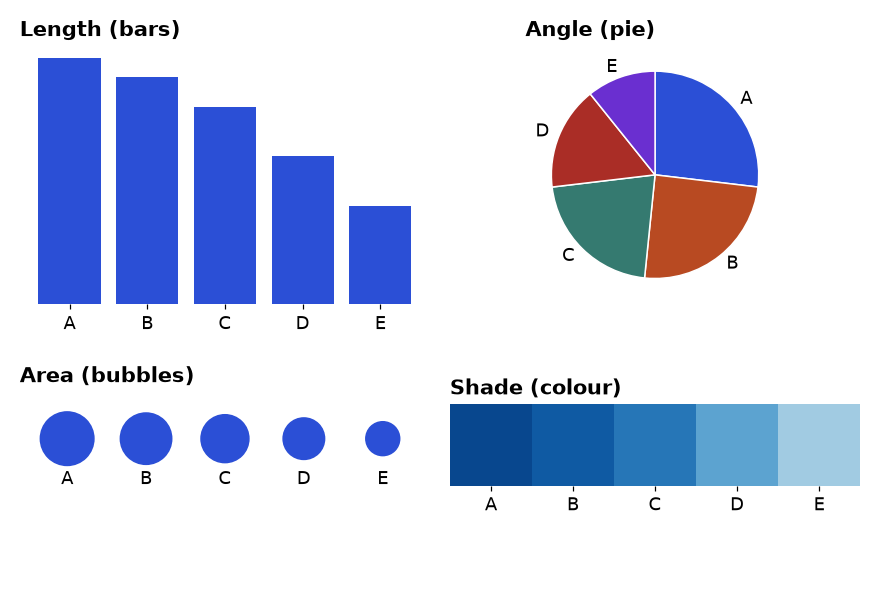
How to read it. In the bar panel, A is taller than B and you see it at once. In the pie, A and B differ by only about 8 degrees (96.8 versus 89.0), which is hard to see. In the bubbles, the radii differ by only 4%, and in the shades the two blues look identical. The printed numbers prove it: the difference is about 9% in value (50 versus 46) but your eye only catches it with length.
The code in plain words: plt.subplots(2, 2) makes four plotting areas; each is filled with a different encoding of the same vals. For the bubbles the radius is the square root of the value (area = pi times radius squared), otherwise bigger values would look far too big. You will meet each call again in the cookbook.
Psychologist S. S. Stevens found that perceived magnitude follows a power law: perceived = actualk. For length k is close to 1 (honest), for area k is about 0.7 (a bubble with twice the area looks only about 1.6 times as big), and for brightness it is lower still. Heer and Bostock (2010) re-ran the Cleveland and McGill tests on thousands of crowd workers and confirmed the same ordering. The practical lessons are three: (1) never size bubbles by radius, size by area; (2) add the number as text when you use area or colour; (3) a perceptually weak encoding is fine for a second variable but not for the main one.
Start from the question, not from the chart menu. Write the question as one sentence, find its verb (compare, rank, trend, compose, distribute, relate), and read across.
| You want to know | Verb | First choice | Second choice | Avoid |
|---|---|---|---|---|
| How big is each category? | compare | Sorted bar | Dot plot | Pie with more than 3 slices, 3D bars |
| Who is top and bottom of many items? | rank | Horizontal bar | Lollipop or dot plot | Vertical bars with rotated labels |
| How does a number change over time? | trend | Line | Area (one series) or columns (12 periods or fewer) | Pie per period |
| How do parts make up a whole? | compose | 100% stacked bar | Donut with 2 to 3 parts | Pie with 8 slices |
| How are values spread? | distribute | Histogram | Box, violin, KDE | The average alone |
| Is there a link between two numbers? | relate | Scatter | Hexbin for big data | Dual-axis lines |
| How do groups differ in spread? | compare spread | Box or violin per group | Overlaid KDE | Overlapping histograms |
| What does a grid of two categories look like? | pattern | Heatmap | Grouped bar | 3D surface |
| Before versus after for each item? | change | Dumbbell or slope chart | Paired bars | Two pies |
| How did we get from start to end? | bridge | Waterfall | Table of differences | Stacked bars |
| Where do people drop off in steps? | funnel | Funnel (bars) | Table with conversion % | Pie |
| Which few causes matter most? | prioritise | Pareto | Sorted bar | Unsorted bars |
| Do newer customers stay as long as older ones? | cohort | Cohort heatmap | Retention lines | One average line |
| How does it differ by place? | geography | Map or tile grid | Sorted bar by region | Map of raw counts with no per-person rate |
| Do I need exact numbers? | look up | Table | Bars with labels | Chart with 40 labels |
| A trend inside a table row? | glance | Sparkline | Small multiples | Full chart per row |
Problem 8.1.1 Your manager asks: "Did the festive season change the shape of our 18 months of sales?" Which chart do you draw?
| Step 1: the verb | "change the shape over time" is a trend question. |
|---|---|
| Step 2: the data | 18 monthly values, one series. 18 points is too many for clean columns and the time order matters. |
| Step 3: the table | Trend gives a line chart; one series with a seasonal peak also suits a light area under the line, but the line is enough. |
| Step 4: the message | Nov 2024 (560) and Dec 2024 (620) are far above the October value 470 and the January 2025 value 350. Annotate the peak. |
| Answer | A line chart of the 18 months with an annotation on December 2024 (620). Section 8.4 draws it. |
Problem 8.1.2 A pie has five slices with values 50, 46, 40, 30 and 20. What is the angle of the slice for A, and what share is that?
| Formula | angle = 360 degrees x value / total |
|---|---|
| Plug in | total = 50 + 46 + 40 + 30 + 20 = 186; angle for A = 360 x 50 / 186 |
| Compute | 18000 / 186 = 96.8 degrees; share = 50 / 186 = 26.9% |
| Check | B: 360 x 46 / 186 = 89.0 degrees; the gap between A and B is about 8 degrees, matching the block above. |
| Meaning | A gap of about 8 degrees is below what most people can judge by eye. The same 4-unit gap is a visible step on bars. |
| Term | Meaning |
|---|---|
| Figure | The whole canvas (size, resolution, saving) |
| Axes | One plot area with its x and y axis. A figure holds one or more. |
| Axis | One of the two number lines (x axis, y axis) of an axes. Note the spelling: Axes is the plot, axis is the line. |
| Tick | A small mark on an axis with a number or label beside it |
| Legend | The key that maps colours or shapes to series names |
| Aesthetic | A visual property that can carry data: x, y, colour (hue), size, style |
| Hue | seaborn and plotly name for "colour by this column" |
| Facet | One small panel in a grid of panels, one per group |
| Colormap | A rule mapping numbers to colours (cmap in matplotlib) |
| Raster (PNG) | Image made of pixels; blurs when enlarged |
| Vector (SVG, PDF) | Image made of shapes; stays sharp at any size |
| dpi | Dots per inch: pixels per inch of the saved image |
Before drawing 28 chart types, learn the parts they all share. The numbered badges in the picture below match the table that follows.
import numpy as np, pandas as pd, matplotlib.pyplot as plt
plt.rcParams.update({"figure.figsize": (8, 4.2), "figure.dpi": 110, "font.size": 12,
"axes.titlesize": 14, "axes.titleweight": "bold", "axes.titlelocation": "left",
"axes.spines.top": False, "axes.spines.right": False})
BLUE, ORANGE, TEAL, RED, PURPLE, GREY = "#2b4fd6", "#b84a22", "#357a70", "#aa2d26", "#6a2fd0", "#9a9a9a"
months = pd.period_range("2024-01", "2025-06", freq="M").to_timestamp()
monthly = pd.Series([310, 295, 340, 360, 385, 400, 380, 410, 430, 470, 560, 620,
350, 330, 375, 405, 430, 455], index=months, name="sales_k")
fig, ax = plt.subplots(figsize=(8, 4.8))
fig.subplots_adjust(left=0.15, right=0.96, top=0.78, bottom=0.2)
x = np.arange(6)
ax.plot(x, monthly.iloc[:6].values, color=GREY, marker="o", lw=2.5, label="Jan to Jun 2024")
ax.plot(x, monthly.iloc[12:18].values, color=BLUE, marker="o", lw=2.5, label="Jan to Jun 2025")
ax.set_xticks(x, ["Jan", "Feb", "Mar", "Apr", "May", "Jun"])
ax.set_ylim(250, 500)
ax.set_ylabel("Sales (Rs thousand)")
ax.set_title("Sales ran 10% to 14% above last year", pad=30)
ax.text(0, 1.04, "Monthly sales, Rs thousand, first half of each year", transform=ax.transAxes, color="#555")
ax.grid(axis="y", color="#dddddd", lw=0.8); ax.set_axisbelow(True)
ax.legend(frameon=False, loc="lower right")
ax.annotate("Jun 2025: 455\n(+13.7% on Jun 2024)", xy=(5, 455), xytext=(2.6, 465),
arrowprops=dict(arrowstyle="->", color="#333"), color="#333")
fig.text(0.15, 0.04, "Source: monthly sales table, Chapter 2", color="#666", fontsize=10)
def badge(n, xy, coords="figure fraction"):
ax.annotate(str(n), xy=xy, xycoords=coords, ha="center", va="center", fontsize=10, color="white",
fontweight="bold", bbox=dict(boxstyle="circle,pad=0.25", fc=RED, ec="none"), zorder=10)
badge(1, (0.095, 0.877)); badge(2, (0.69, 0.81)); badge(3, (0.08, 0.27)); badge(4, (0.118, 0.745))
badge(5, (1.5, 400), "data"); badge(6, (1.0, 351), "data"); badge(7, (0.705, 0.29)); badge(8, (2.3, 470), "data")
badge(9, (2, 0.105), ("data", "figure fraction")); badge(10, (0.125, 0.045)); badge(11, (4.5, 250), "data")
fig.savefig("ch08v_anatomy.png", dpi=110)
print("jun growth:", round((455 / 400 - 1) * 100, 1), "| jan growth:", round((350 / 310 - 1) * 100, 1))
print("saved")jun growth: 13.7 | jan growth: 12.9
saved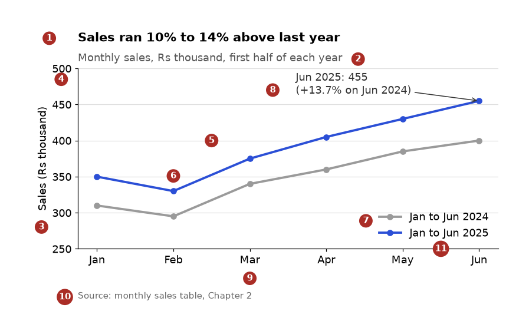
| No. | Part | Its job | matplotlib call | Common failure |
|---|---|---|---|---|
| 1 | Title | State the finding in one sentence | ax.set_title(...) | A topic ("Sales") instead of a finding |
| 2 | Subtitle | Say what is measured, in what unit, over what period | ax.text(...) | Missing unit |
| 3 | Axis label | Name the quantity and its unit | ax.set_ylabel(...) | "Value", or no unit |
| 4 | Tick labels | Let the reader read off values | ax.set_yticks, tick_params | Too many ticks, tiny font |
| 5 | Gridline | A faint guide from mark to scale | ax.grid(axis="y") | Dark, heavy grid that competes with data |
| 6 | Marks (data) | The evidence: lines, bars, dots | ax.plot, ax.bar | Thin or pale marks |
| 7 | Legend | Map colour to series name | ax.legend(frameon=False) | Far from the data, or covering it |
| 8 | Annotation | Point at the one thing to notice | ax.annotate(...) | Absent; the reader has to find the story |
| 9 | X tick labels | Name the categories or times | ax.set_xticks(pos, labels) | Overlapping, rotated 90 degrees |
| 10 | Source note | Say where the numbers came from | fig.text(...) | Missing, so the chart cannot be checked |
| 11 | Baseline and spines | The frame and the zero line | ax.spines[...] | Frame boxes drawn on all four sides |
monthly: pd.period_range makes 18 month labels, to_timestamp() turns them into dates, and the 18 sales values become a pd.Series indexed by date. Slices like monthly.iloc[:6] take the first six rows and monthly.iloc[12:18] the last six.fig.subplots_adjust(left, right, top, bottom) sets the empty margins as fractions of the figure. We make room at the top (title and subtitle) and at the bottom (source).ax.plot(x, y, color=, marker="o", lw=2.5, label=) draws one line. label is the name the legend will use. Grey for last year, blue for this year: the old series is context, the new one is the message.ax.set_xticks(x, labels) puts month names at positions 0 to 5. Passing positions and labels together keeps them paired.ax.set_ylim(250, 500) fixes the visible y range. This is a line chart (position encodes value), so a non-zero start is acceptable, but always say so; see 8.12.ax.set_title(..., pad=30) moves the title up to leave room for the subtitle written with ax.text(x, y, s, transform=ax.transAxes), where transAxes means "x and y are fractions of the axes box, 0 to 1".ax.grid(axis="y") and set_axisbelow(True) draw faint horizontal guides behind the data, never in front.ax.annotate(text, xy=point, xytext=text_position, arrowprops=...) writes a note and an arrow. xy is what you point at; xytext is where the words sit.fig.text(0.15, 0.04, ...) writes on the figure itself (fractions of the whole canvas), which is where a source note belongs.badge(...) is only for this teaching picture: it draws a red circle with a number using an annotation with a circular bbox.The printed check: June 2025 is 455 and June 2024 is 400, so 455 / 400 - 1 = 13.7% (the annotation); January is 350 / 310 - 1 = 12.9%. The title says "10% to 14%", and the six monthly growth rates run from 10.3% (Mar) to 13.7% (Jun). Always check that the title is true to the numbers.
ax.set_ylabel("Revenue"). Right: ax.set_ylabel("Revenue (Rs crore)") and a subtitle with the period.Problem 8.2.1 Look at a default pandas chart: by_city.plot.bar() with 3 vertical bars, a legend box saying "Amount", title "Amount", no units and heavy grid on both axes. List what is missing or wrong, using the part numbers above.
| Title (1) | "Amount" is a topic. Replace with "Delhi sold the most: Rs 3,298 of Rs 9,340". |
|---|---|
| Subtitle and unit (2, 3) | Add "Rs, delivered and other orders, Sales table" and an axis label "Amount (Rs)". |
| Grid (5) | Remove the vertical grid; keep a faint horizontal one or none if bars carry labels. |
| Legend (7) | One series, so the legend box adds nothing. Delete it. |
| Annotation (8) | Highlight Delhi in blue and the rest in grey, and label the bar values (3,298; 3,047; 2,995). |
| Source (10) | "Source: Sales table, Chapter 3". |
| Answer | Six fixes. The chart is built in 8.3. |
Edward Tufte called the share of ink that shows data the data-ink ratio: everything that is not data (borders, shadows, heavy gridlines, redundant legends) should be erased unless it helps reading. Do not take this to the extreme; a faint gridline and an axis label are not waste. Accessibility adds another layer: put a plain-language description of the chart in the surrounding text or the alt attribute (as every figure in this chapter has), do not rely on colour alone, and keep text at 11 pt or larger on the final printed size.
From here to the end of 8.6 is a cookbook. Every entry has the same shape so you can find things fast: the question the chart answers, when not to use it, the numbers, the matplotlib code with its picture and a numbered explanation, the same chart in seaborn, and the same chart in plotly (not run here). Pick the chart by question using the table in 8.1, then copy the block that matches.
Answers: "How much per city / channel / product?" Our Chapter 1 question. Do not use when: the x-axis is time with many points (use a line), or there are more than about 12 categories or long labels (use horizontal bars), or you need to compare parts of a whole across many groups (use stacked or a heatmap). Always start at zero, always sort unless the order is natural (months, age bands).
import numpy as np, pandas as pd, matplotlib.pyplot as plt
plt.rcParams.update({"figure.figsize": (8, 4.2), "figure.dpi": 110, "font.size": 12,
"axes.titlesize": 14, "axes.titleweight": "bold", "axes.titlelocation": "left",
"axes.spines.top": False, "axes.spines.right": False})
BLUE, ORANGE, TEAL, RED, PURPLE, GREY = "#2b4fd6", "#b84a22", "#357a70", "#aa2d26", "#6a2fd0", "#9a9a9a"
sales = pd.DataFrame({
"city": ["Pune", "Pune", "Pune", "Mumbai", "Mumbai", "Mumbai", "Delhi", "Delhi"],
"status": ["Delivered", "Delivered", "Returned", "Delivered", "Delivered", "Cancelled", "Delivered", "Delivered"],
"amount": [998, 1400, 597, 1299, 1298, 450, 799, 2499]})
by_city = sales.groupby("city")["amount"].sum().sort_values(ascending=False)
print(by_city.to_string())
print("grand total:", by_city.sum())
colors = [BLUE if c == by_city.idxmax() else GREY for c in by_city.index]
fig, ax = plt.subplots()
bars = ax.bar(by_city.index, by_city.values, color=colors, width=0.6)
ax.bar_label(bars, labels=[f"{v:,}" for v in by_city.values], padding=3)
ax.set_title("Delhi sold the most: Rs 3,298 of Rs 9,340")
ax.set_ylabel("Sales (Rs)")
ax.set_ylim(0, 3800)
ax.set_yticks([])
ax.spines["left"].set_visible(False)
fig.tight_layout()
fig.savefig("ch08v_bar.png", dpi=110)
print("saved")city
Delhi 3298
Mumbai 3047
Pune 2995
grand total: 9340
saved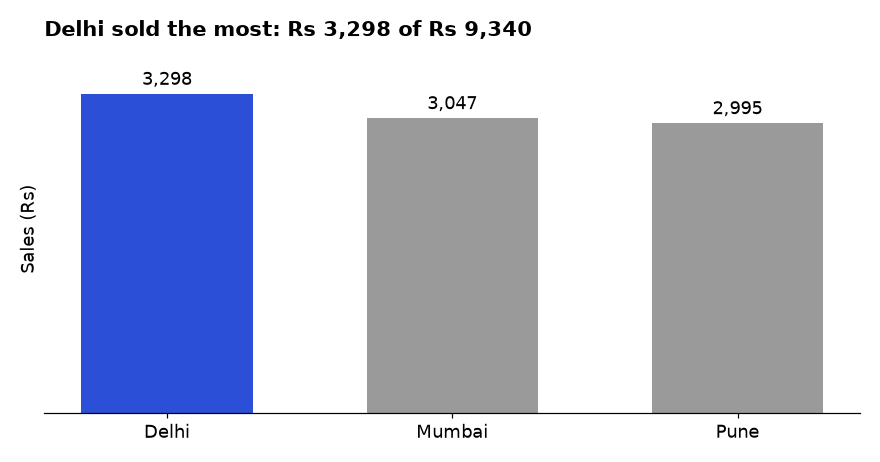
How to read it. Each bar is a city, its height is total sales in rupees, and blue marks the answer. The differences are small (3,298 versus 3,047 versus 2,995) and the zero baseline makes that honest: Delhi leads by 8% over Mumbai (3,298 / 3,047 = 1.082).
sales.groupby("city")["amount"].sum() collapses 8 rows into 3 city totals; sort_values(ascending=False) puts the largest first, which is the order the bars will be drawn.colors = [BLUE if c == by_city.idxmax() else GREY ...] builds one colour per bar. idxmax() returns the label (Delhi) of the largest value. This is "grey for context, one colour for the message".ax.bar(labels, heights, color=colors, width=0.6) draws the bars. width is the fraction of the slot each bar fills; 0.6 leaves a gap so bars read as separate.ax.bar_label(bars, labels=..., padding=3) writes each value above its bar (the direct label). f"{v:,}" adds the thousands comma.ax.set_ylim(0, 3800) forces the baseline to zero and leaves headroom for labels. This line is what keeps the chart honest.set_yticks([]) and hiding the left spine remove an axis whose job the labels already do (less ink).import numpy as np, pandas as pd, matplotlib.pyplot as plt, seaborn as sns
sns.set_theme(style="white", font_scale=1.1, rc={"figure.figsize": (8, 4.2), "figure.dpi": 110,
"axes.titlesize": 14, "axes.titleweight": "bold", "axes.titlelocation": "left",
"axes.spines.top": False, "axes.spines.right": False})
BLUE, ORANGE, TEAL, RED, PURPLE, GREY = "#2b4fd6", "#b84a22", "#357a70", "#aa2d26", "#6a2fd0", "#9a9a9a"
sales = pd.DataFrame({
"city": ["Pune", "Pune", "Pune", "Mumbai", "Mumbai", "Mumbai", "Delhi", "Delhi"],
"status": ["Delivered", "Delivered", "Returned", "Delivered", "Delivered", "Cancelled", "Delivered", "Delivered"],
"amount": [998, 1400, 597, 1299, 1298, 450, 799, 2499]})
by_city = sales.groupby("city", as_index=False)["amount"].sum().sort_values("amount", ascending=False)
palette = {c: BLUE if c == "Delhi" else GREY for c in by_city["city"]}
ax = sns.barplot(data=by_city, x="city", y="amount", hue="city", palette=palette, legend=False)
ax.bar_label(ax.containers[0], fmt="{:,.0f}", padding=3)
ax.set(ylim=(0, 3800), yticks=[], xlabel="", ylabel="Sales (Rs)", title="Delhi sold the most: Rs 3,298 of Rs 9,340")
sns.despine(left=True)
ax.figure.tight_layout()
ax.figure.savefig("ch08v_bar_sns.png", dpi=110)
print(by_city.to_string(index=False))
print("saved") city amount
Delhi 3298
Mumbai 3047
Pune 2995
savedseaborn works from a tidy DataFrame (one row per observation): you name the columns and it does the aggregation. sns.barplot by default shows the mean with an error bar; since every city here is a sum, the data is aggregated first (so each city has one row). hue="city" with a palette dict is how seaborn 0.13 colours bars individually, and legend=False hides the redundant key. The picture is the same as the matplotlib one, so it is not repeated. seaborn returns the matplotlib ax, so bar_label, set and savefig are the same calls.
import pandas as pd
import plotly.express as px
by_city = pd.DataFrame({"city": ["Delhi", "Mumbai", "Pune"], "amount": [3298, 3047, 2995]})
fig = px.bar(by_city, x="city", y="amount", text_auto=",.0f",
color="city", color_discrete_map={"Delhi": "#2b4fd6", "Mumbai": "#9a9a9a", "Pune": "#9a9a9a"},
title="Delhi sold the most: Rs 3,298 of Rs 9,340")
fig.update_layout(showlegend=False, yaxis_title="Sales (Rs)", xaxis_title=None)
fig.update_yaxes(range=[0, 3800])
fig.write_html("bar.html") # a standalone interactive fileNot run here. It draws the same three bars with value labels; hovering shows "city=Delhi, amount=3298". text_auto=",.0f" is a d3 number format (comma, zero decimals). color_discrete_map pins each category to a colour, otherwise plotly picks its own palette.
ax.set_ylim(2900, 3400) makes Delhi's bar look four times Pune's when it is only 10% bigger (lie factor in 8.12). Right: bars always start at 0; if the differences are tiny, say so in the title or switch to a dot plot, which may use a non-zero axis.Answers: "Who is top and bottom?" with long names. Do not use when: the categories have a natural left-to-right order such as months. Sort largest at the top, because people read from the top.
import numpy as np, pandas as pd, matplotlib.pyplot as plt
plt.rcParams.update({"figure.figsize": (8, 4.2), "figure.dpi": 110, "font.size": 12,
"axes.titlesize": 14, "axes.titleweight": "bold", "axes.titlelocation": "left",
"axes.spines.top": False, "axes.spines.right": False})
BLUE, ORANGE, TEAL, RED, PURPLE, GREY = "#2b4fd6", "#b84a22", "#357a70", "#aa2d26", "#6a2fd0", "#9a9a9a"
revenue = pd.Series({"Wireless earbuds": 412, "Smart watch": 388, "Air fryer": 301, "Yoga mat": 187,
"Backpack": 176, "Desk lamp": 152, "Water bottle": 129, "Phone case": 96,
"Notebook": 64, "Pen set": 41}, name="revenue_k").sort_values()
top3 = revenue.nlargest(3).sum() / revenue.sum()
print("total (Rs thousand):", revenue.sum(), "| top-3 share:", f"{top3:.1%}")
fig, ax = plt.subplots(figsize=(8, 4.6))
colors = [BLUE if v >= revenue.nlargest(3).min() else GREY for v in revenue]
bars = ax.barh(revenue.index, revenue.values, color=colors, height=0.7)
ax.bar_label(bars, padding=4)
ax.set_title(f"Three products bring in {top3:.0%} of revenue")
ax.set_xlabel("Revenue (Rs thousand)")
ax.set_xlim(0, 470)
ax.tick_params(axis="y", length=0)
fig.tight_layout()
fig.savefig("ch08v_hbar.png", dpi=110)
print("saved")total (Rs thousand): 1946 | top-3 share: 56.6%
saved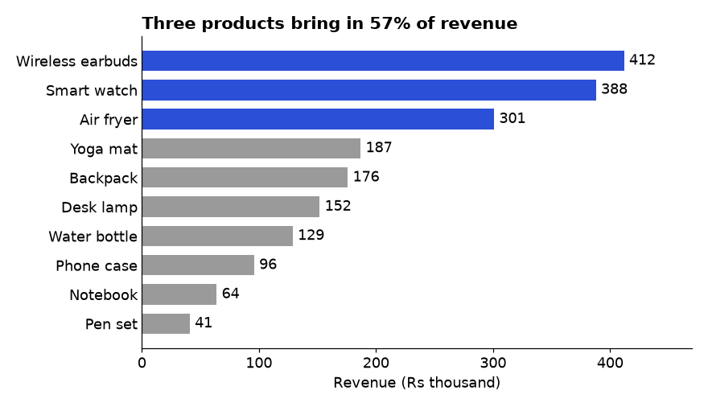
How to read it. The three blue bars are the top three products; their total 412 + 388 + 301 = 1,101 is 56.6% of the 1,946 total, which is why the title says 57% (56.6% rounded to a whole number by the :.0% format).
pd.Series({...}).sort_values() sorts ascending. barh draws the first item at the bottom, so ascending order puts the largest on top without any reversing trick.revenue.nlargest(3) returns the three biggest; .min() of those is the cut-off (301) used to colour the bars.ax.barh(names, values, height=0.7) is the horizontal twin of bar; the height is the bar thickness.ax.bar_label(bars, padding=4) prints each value at the bar end. With labels, the x-axis ticks are optional.f"...{top3:.0%}..." computes the headline from the data, so the title can never go out of date.tick_params(axis="y", length=0) removes the tiny tick marks beside long names.import numpy as np, pandas as pd, matplotlib.pyplot as plt, seaborn as sns
sns.set_theme(style="white", font_scale=1.1, rc={"figure.figsize": (8, 4.2), "figure.dpi": 110,
"axes.titlesize": 14, "axes.titleweight": "bold", "axes.titlelocation": "left",
"axes.spines.top": False, "axes.spines.right": False})
BLUE, ORANGE, TEAL, RED, PURPLE, GREY = "#2b4fd6", "#b84a22", "#357a70", "#aa2d26", "#6a2fd0", "#9a9a9a"
revenue = pd.Series({"Wireless earbuds": 412, "Smart watch": 388, "Air fryer": 301, "Yoga mat": 187,
"Backpack": 176, "Desk lamp": 152, "Water bottle": 129, "Phone case": 96,
"Notebook": 64, "Pen set": 41}, name="revenue_k")
df = revenue.sort_values(ascending=False).rename_axis("product").reset_index()
df["top3"] = np.where(df.index < 3, "top", "rest")
ax = sns.barplot(data=df, y="product", x="revenue_k", hue="top3", palette={"top": BLUE, "rest": GREY},
dodge=False, legend=False, orient="h")
ax.bar_label(ax.containers[0], padding=4); ax.bar_label(ax.containers[1], padding=4)
ax.set(xlabel="Revenue (Rs thousand)", ylabel="", xlim=(0, 470))
ax.figure.tight_layout()
ax.figure.savefig("ch08v_hbar_sns.png", dpi=110)
print(df.head(3).to_string(index=False))
print("saved") product revenue_k top3
Wireless earbuds 412 top
Smart watch 388 top
Air fryer 301 top
savedHere the data is sorted descending because seaborn draws rows top to bottom in the order given. hue="top3" is a helper column that splits the bars into two colour groups; dodge=False keeps each bar on its own row instead of splitting space between hue levels. Because the hue creates two bar containers (one per group), we label both.
import pandas as pd
import plotly.express as px
revenue = pd.Series({"Wireless earbuds": 412, "Smart watch": 388, "Air fryer": 301, "Yoga mat": 187,
"Backpack": 176, "Desk lamp": 152, "Water bottle": 129, "Phone case": 96,
"Notebook": 64, "Pen set": 41}).sort_values()
fig = px.bar(revenue, orientation="h", text=revenue.values,
labels={"value": "Revenue (Rs thousand)", "index": ""},
title="Three products bring in 57% of revenue")
fig.update_traces(marker_color=["#9a9a9a"] * 7 + ["#2b4fd6"] * 3, showlegend=False)
fig.update_layout(showlegend=False)Not run here. It draws ten horizontal bars, largest on top, last three (the largest after sorting ascending) in blue. update_traces(marker_color=[...]) takes one colour per bar.
revenue.plot.barh() on the data as it came. Right: revenue.sort_values().plot.barh().Answers: grouped: "How does each sub-group compare inside every group?" Stacked: "How big is each group in total, and what is it made of?" Do not use when: more than 4 or 5 sub-groups (use a heatmap or small multiples). In stacked bars only the bottom segment and the total share a baseline, so segments in the middle are hard to compare.
import numpy as np, pandas as pd, matplotlib.pyplot as plt
plt.rcParams.update({"figure.figsize": (8, 4.2), "figure.dpi": 110, "font.size": 12,
"axes.titlesize": 14, "axes.titleweight": "bold", "axes.titlelocation": "left",
"axes.spines.top": False, "axes.spines.right": False})
BLUE, ORANGE, TEAL, RED, PURPLE, GREY = "#2b4fd6", "#b84a22", "#357a70", "#aa2d26", "#6a2fd0", "#9a9a9a"
rng = np.random.default_rng(8)
n = 300
category = rng.choice(["Electronics", "Home", "Fashion", "Grocery"], n, p=[0.2, 0.25, 0.3, 0.25])
mu = pd.Series({"Electronics": 7.4, "Home": 6.8, "Fashion": 6.4, "Grocery": 5.6})[category].to_numpy()
orders = pd.DataFrame({
"date": pd.Timestamp("2025-01-01") + pd.to_timedelta(rng.integers(0, 180, n), unit="D"),
"city": rng.choice(["Delhi", "Mumbai", "Pune"], n, p=[0.40, 0.35, 0.25]),
"category": category,
"channel": rng.choice(["App", "Web"], n, p=[0.6, 0.4]),
"amount": np.round(rng.lognormal(mu, 0.6)).astype(int)})
pivot = orders.pivot_table(index="city", columns="category", values="amount", aggfunc="sum") / 1000
pivot = pivot.loc[["Delhi", "Mumbai", "Pune"], ["Electronics", "Home", "Fashion", "Grocery"]]
print(pivot.round(1).to_string())
colors = [BLUE, TEAL, ORANGE, PURPLE]
fig, (ax1, ax2) = plt.subplots(1, 2, figsize=(9, 4.2), sharey=True)
width = 0.2
x = np.arange(len(pivot))
for i, cat in enumerate(pivot.columns):
ax1.bar(x + (i - 1.5) * width, pivot[cat], width, color=colors[i], label=cat)
ax1.set_xticks(x, pivot.index); ax1.set_title("Grouped"); ax1.set_ylabel("Sales (Rs thousand)")
bottom = np.zeros(len(pivot))
for i, cat in enumerate(pivot.columns):
ax2.bar(x, pivot[cat], 0.6, bottom=bottom, color=colors[i], label=cat)
bottom += pivot[cat].to_numpy()
ax2.set_xticks(x, pivot.index); ax2.set_title("Stacked")
for xi, tot in zip(x, bottom): ax2.text(xi, tot + 2, f"{tot:.0f}", ha="center", fontweight="bold")
ax2.legend(frameon=False, loc="upper right")
fig.tight_layout()
fig.savefig("ch08v_grouped.png", dpi=110)
print("saved")category Electronics Home Fashion Grocery
city
Delhi 49.0 35.2 25.7 8.1
Mumbai 51.3 21.9 26.6 8.4
Pune 19.3 11.9 12.7 6.2
saved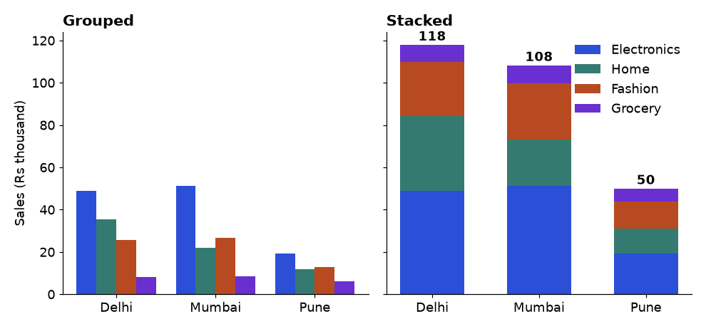
How to read it. Left: within each city, compare the four colours; Electronics (blue) is the tallest in Delhi (about 49) and Mumbai (about 51). Right: the total height is the city total (Delhi 118, Mumbai 108, Pune 50 in Rs thousand), and the stack shows what it is made of. The left panel is better for comparing categories; the right is better for comparing totals. The data is synthetic (seed 8), so do not read it as real business facts.
pivot_table(index="city", columns="category", values="amount", aggfunc="sum") turns the 300-row table into a 3 by 4 grid (rows = cities, columns = categories). This grid is the shape bar-chart code wants. Dividing by 1000 converts to Rs thousand..loc[[rows], [cols]] fixes the order of cities and categories so the colours are always assigned the same way.i of 4 is shifted by (i - 1.5) * width from the city's centre x, so the four bars sit side by side centred on the tick (offsets -0.3, -0.1, +0.1, +0.3).bottom=bottom, the running total of earlier categories, and then bottom += ... grows it. The final bottom is each city's total, reused for the labels.sharey=True gives both panels the same y-scale so the heights are comparable across panels.import numpy as np, pandas as pd, matplotlib.pyplot as plt, seaborn as sns
sns.set_theme(style="white", font_scale=1.1, rc={"figure.figsize": (8, 4.2), "figure.dpi": 110,
"axes.titlesize": 14, "axes.titleweight": "bold", "axes.titlelocation": "left",
"axes.spines.top": False, "axes.spines.right": False})
BLUE, ORANGE, TEAL, RED, PURPLE, GREY = "#2b4fd6", "#b84a22", "#357a70", "#aa2d26", "#6a2fd0", "#9a9a9a"
rng = np.random.default_rng(8)
n = 300
category = rng.choice(["Electronics", "Home", "Fashion", "Grocery"], n, p=[0.2, 0.25, 0.3, 0.25])
mu = pd.Series({"Electronics": 7.4, "Home": 6.8, "Fashion": 6.4, "Grocery": 5.6})[category].to_numpy()
orders = pd.DataFrame({
"date": pd.Timestamp("2025-01-01") + pd.to_timedelta(rng.integers(0, 180, n), unit="D"),
"city": rng.choice(["Delhi", "Mumbai", "Pune"], n, p=[0.40, 0.35, 0.25]),
"category": category,
"channel": rng.choice(["App", "Web"], n, p=[0.6, 0.4]),
"amount": np.round(rng.lognormal(mu, 0.6)).astype(int)})
sns.set_palette([BLUE, TEAL, ORANGE, PURPLE])
order = ["Electronics", "Home", "Fashion", "Grocery"]
ax = sns.barplot(data=orders, x="city", y="amount", hue="category", hue_order=order,
order=["Delhi", "Mumbai", "Pune"], estimator="sum", errorbar=None)
ax.set(ylabel="Sales (Rs)", xlabel="", title="Electronics leads in Delhi and Mumbai")
sns.move_legend(ax, "upper right", frameon=False, title=None)
ax.figure.tight_layout()
ax.figure.savefig("ch08v_grouped_sns.png", dpi=110)
print(orders.groupby(["city", "category"])["amount"].sum().loc["Delhi"].to_string())
print("saved")category
Electronics 48970
Fashion 25657
Grocery 8105
Home 35241
savedThe picture matches the grouped (left) panel above. seaborn needs no pivot: estimator="sum" sums the raw rows and errorbar=None removes the confidence interval seaborn would otherwise draw (for a sum it would be meaningless). seaborn has no stacked bar; use the pandas call pivot.plot.bar(stacked=True), which draws on the same matplotlib axes.
import pandas as pd
import plotly.express as px
long = pd.DataFrame({"city": ["Delhi"] * 4 + ["Mumbai"] * 4 + ["Pune"] * 4,
"category": ["Electronics", "Home", "Fashion", "Grocery"] * 3,
"amount": [49.0, 35.2, 25.7, 8.1, 51.3, 21.9, 26.6, 8.4, 19.3, 11.9, 12.7, 6.2]})
fig = px.bar(long, x="city", y="amount", color="category", barmode="group", # "relative" stacks
color_discrete_sequence=["#2b4fd6", "#357a70", "#b84a22", "#6a2fd0"],
labels={"amount": "Sales (Rs thousand)"})Not run here. barmode="group" gives the left picture, and removing it (the default is "relative", which stacks) gives the right one. Clicking a legend entry hides that category; double-clicking isolates it.
Answers: "Roughly what fraction is each part?" Acceptable only when: there are 2 or 3 parts, the parts add to 100%, you label the slices with their percentages, and the exact comparison does not matter. Do not use when: there are more than 4 slices, slices are close in size, or you compare several pies.
import numpy as np, pandas as pd, matplotlib.pyplot as plt
plt.rcParams.update({"figure.figsize": (8, 4.2), "figure.dpi": 110, "font.size": 12,
"axes.titlesize": 14, "axes.titleweight": "bold", "axes.titlelocation": "left",
"axes.spines.top": False, "axes.spines.right": False})
BLUE, ORANGE, TEAL, RED, PURPLE, GREY = "#2b4fd6", "#b84a22", "#357a70", "#aa2d26", "#6a2fd0", "#9a9a9a"
channel = pd.Series({"App": 180.658, "Web": 95.579})
share = channel / channel.sum()
print((share * 100).round(1).to_string())
revenue = pd.Series({"Wireless earbuds": 412, "Smart watch": 388, "Air fryer": 301, "Yoga mat": 187,
"Backpack": 176, "Desk lamp": 152, "Water bottle": 129}).sort_values(ascending=False)
fig, (ax1, ax2) = plt.subplots(1, 2, figsize=(9, 4.2))
ax1.pie(channel, colors=[BLUE, GREY], startangle=90, counterclock=False, wedgeprops={"width": 0.38, "edgecolor": "white"})
ax1.text(0, 0, f"{share['App']:.0%}\nvia app", ha="center", va="center", fontsize=15, fontweight="bold")
ax1.set_title("Acceptable: 2 parts")
ax1.text(0, -1.3, f"Web: {share['Web']:.0%}", ha="center", color="#555")
ax2.pie(revenue, labels=revenue.index, startangle=90, counterclock=False, textprops={"fontsize": 9},
colors=[BLUE, ORANGE, TEAL, RED, PURPLE, GREY, "#d9a400"], wedgeprops={"edgecolor": "white"})
ax2.set_title("Avoid: 7 close slices")
fig.tight_layout()
fig.savefig("ch08v_donut.png", dpi=110)
print("saved")App 65.4
Web 34.6
saved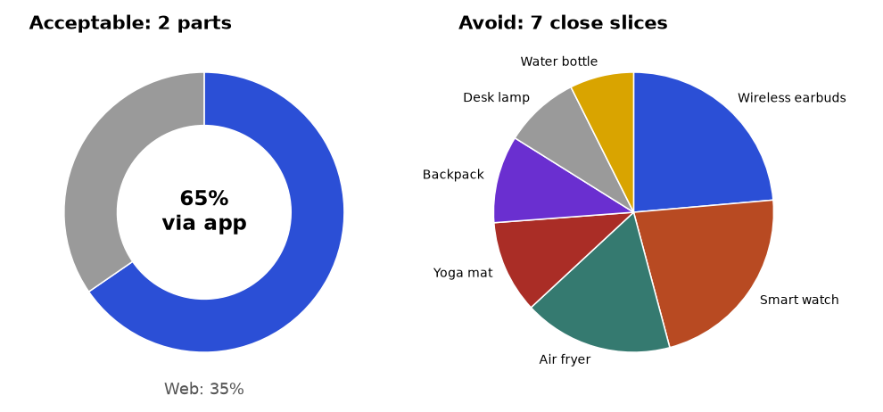
How to read it. The left donut says "65% of order value comes through the app" (180.658 / 276.237 = 65.4%) and the centre text is the finding. The right pie has seven slices of 8% to 20%; you cannot rank the middle ones. Replace it with the sorted bars of the previous entry.
share = channel / channel.sum() divides each part by the total so the parts sum to 1 (100%). Always check this sum.wedgeprops={"width": 0.38} turns a pie into a donut: the wedges are only 0.38 of the radius thick, leaving a hole you can use for the key number.startangle=90, counterclock=False start at 12 o'clock and go clockwise, the order readers expect.ax.text(0, 0, ..., ha="center", va="center") puts text at the centre of the pie, which is the origin of the pie's coordinates.import plotly.express as px
fig = px.pie(names=["App", "Web"], values=[180.658, 95.579], hole=0.55,
color_discrete_sequence=["#2b4fd6", "#9a9a9a"])
fig.update_traces(textinfo="percent", textfont_size=16)
fig.add_annotation(text="65% via app", x=0.5, y=0.5, showarrow=False, font_size=18)Not run here. hole=0.55 makes the donut; add_annotation at paper position (0.5, 0.5) puts the headline in the hole. seaborn has no pie function; people use matplotlib, as above.
Answers: "How did each item change between two points?" It shows both values and the gap. Do not use when: you have more than two points in time (use lines) or the gap is tiny compared with the axis.
import numpy as np, pandas as pd, matplotlib.pyplot as plt
plt.rcParams.update({"figure.figsize": (8, 4.2), "figure.dpi": 110, "font.size": 12,
"axes.titlesize": 14, "axes.titleweight": "bold", "axes.titlelocation": "left",
"axes.spines.top": False, "axes.spines.right": False})
BLUE, ORANGE, TEAL, RED, PURPLE, GREY = "#2b4fd6", "#b84a22", "#357a70", "#aa2d26", "#6a2fd0", "#9a9a9a"
rng = np.random.default_rng(8)
n = 300
category = rng.choice(["Electronics", "Home", "Fashion", "Grocery"], n, p=[0.2, 0.25, 0.3, 0.25])
mu = pd.Series({"Electronics": 7.4, "Home": 6.8, "Fashion": 6.4, "Grocery": 5.6})[category].to_numpy()
orders = pd.DataFrame({
"date": pd.Timestamp("2025-01-01") + pd.to_timedelta(rng.integers(0, 180, n), unit="D"),
"city": rng.choice(["Delhi", "Mumbai", "Pune"], n, p=[0.40, 0.35, 0.25]),
"category": category,
"channel": rng.choice(["App", "Web"], n, p=[0.6, 0.4]),
"amount": np.round(rng.lognormal(mu, 0.6)).astype(int)})
orders["quarter"] = np.where(orders["date"] < "2025-04-01", "Q1", "Q2")
aov = orders.pivot_table(index="category", columns="quarter", values="amount", aggfunc="mean").round(0)
aov = aov.sort_values("Q1")
aov["change_pct"] = ((aov["Q2"] / aov["Q1"] - 1) * 100).round(1)
print(aov.to_string())
fig, ax = plt.subplots()
y = np.arange(len(aov))
ax.hlines(y, aov["Q2"], aov["Q1"], color="#bbbbbb", lw=3, zorder=1)
ax.scatter(aov["Q1"], y, s=110, color=GREY, label="Q1 (Jan to Mar)", zorder=2)
ax.scatter(aov["Q2"], y, s=110, color=BLUE, label="Q2 (Apr to Jun)", zorder=2)
for yi, (q1, q2, pct) in enumerate(zip(aov["Q1"], aov["Q2"], aov["change_pct"])):
ax.text(max(q1, q2) + 60, yi, f"{pct:+.0f}%", va="center", color=RED if pct < -10 else "#333")
ax.set_yticks(y, aov.index)
ax.set_xlim(0, 2400)
ax.set_xlabel("Average order value (Rs)")
ax.set_title("Fashion order value fell 21% in Q2")
ax.legend(frameon=False, loc="lower right")
fig.tight_layout()
fig.savefig("ch08v_dumbbell.png", dpi=110)
print("saved")quarter Q1 Q2 change_pct
category
Grocery 339.0 315.0 -7.1
Fashion 797.0 632.0 -20.7
Home 856.0 850.0 -0.7
Electronics 2035.0 1952.0 -4.1
saved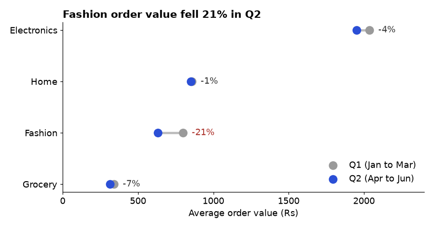
How to read it. Each row is a category. The grey dot is Q1, the blue dot is Q2, and the grey bar is the change. Fashion has the longest bar (797 to 632, which is -20.7%, shown as -21%), so it is the story. The axis starts at 0 here because the values are in the thousands; for a dumbbell it is allowed to start higher, because position (not length) carries the value.
orders["date"] < "2025-04-01" compares dates to a string that pandas converts to a date; np.where(cond, "Q1", "Q2") makes the label column.pivot_table(..., aggfunc="mean") averages the order amounts per category and quarter.ax.hlines(y, x_start, x_end) draws one horizontal line per category; zorder=1 keeps it behind the dots (zorder=2).ax.scatter(x, y, s=110) draws the dots: s is the marker area. Two scatter calls, two colours, two legend entries.import plotly.graph_objects as go
cats = ["Grocery", "Fashion", "Home", "Electronics"]
q1 = [339, 797, 856, 2035]
q2 = [315, 632, 850, 1952]
fig = go.Figure()
for c, a, b in zip(cats, q1, q2):
fig.add_trace(go.Scatter(x=[a, b], y=[c, c], mode="lines", line=dict(color="#bbbbbb", width=4), showlegend=False))
fig.add_trace(go.Scatter(x=q1, y=cats, mode="markers", name="Q1", marker=dict(size=14, color="#9a9a9a")))
fig.add_trace(go.Scatter(x=q2, y=cats, mode="markers", name="Q2", marker=dict(size=14, color="#2b4fd6")))
fig.update_layout(title="Fashion order value fell 21% in Q2", xaxis_title="Average order value (Rs)")Not run here. plotly has no dedicated dumbbell, so you build it from one line trace per category plus two marker traces. The legend shows only Q1 and Q2 because the lines have showlegend=False. seaborn has no dumbbell either; matplotlib's hlines is the standard answer.
Answers: "Who rose, who fell, and did the order change?" with few items. Do not use when: more than about 8 lines (they tangle), or you have more than two moments (use a line chart).
import numpy as np, pandas as pd, matplotlib.pyplot as plt
plt.rcParams.update({"figure.figsize": (8, 4.2), "figure.dpi": 110, "font.size": 12,
"axes.titlesize": 14, "axes.titleweight": "bold", "axes.titlelocation": "left",
"axes.spines.top": False, "axes.spines.right": False})
BLUE, ORANGE, TEAL, RED, PURPLE, GREY = "#2b4fd6", "#b84a22", "#357a70", "#aa2d26", "#6a2fd0", "#9a9a9a"
rng = np.random.default_rng(8)
n = 300
category = rng.choice(["Electronics", "Home", "Fashion", "Grocery"], n, p=[0.2, 0.25, 0.3, 0.25])
mu = pd.Series({"Electronics": 7.4, "Home": 6.8, "Fashion": 6.4, "Grocery": 5.6})[category].to_numpy()
orders = pd.DataFrame({
"date": pd.Timestamp("2025-01-01") + pd.to_timedelta(rng.integers(0, 180, n), unit="D"),
"city": rng.choice(["Delhi", "Mumbai", "Pune"], n, p=[0.40, 0.35, 0.25]),
"category": category,
"channel": rng.choice(["App", "Web"], n, p=[0.6, 0.4]),
"amount": np.round(rng.lognormal(mu, 0.6)).astype(int)})
orders["quarter"] = np.where(orders["date"] < "2025-04-01", "Q1", "Q2")
city = (orders.pivot_table(index="city", columns="quarter", values="amount", aggfunc="sum") / 1000).round(1)
city["change_pct"] = ((city["Q2"] / city["Q1"] - 1) * 100).round(1)
print(city.to_string())
colors = {"Delhi": BLUE, "Mumbai": ORANGE, "Pune": GREY}
fig, ax = plt.subplots(figsize=(6.5, 4.4))
for name, row in city.iterrows():
ax.plot([0, 1], [row["Q1"], row["Q2"]], color=colors[name], marker="o", lw=3, ms=8)
tc = "#666666" if name == "Pune" else colors[name] # darker grey text for contrast
ax.text(-0.04, row["Q1"], f"{name} {row['Q1']:.1f}", ha="right", va="center", color=tc)
ax.text(1.04, row["Q2"], f"{row['Q2']:.1f} ({row['change_pct']:+.0f}%)", ha="left", va="center", color=tc)
ax.set_xlim(-0.55, 1.6); ax.set_ylim(10, 75)
ax.set_xticks([0, 1], ["Q1 (Jan to Mar)", "Q2 (Apr to Jun)"])
ax.set_yticks([])
ax.spines[["left", "bottom"]].set_visible(False)
ax.tick_params(length=0)
ax.set_title("Delhi overtook Mumbai in Q2", loc="center")
fig.tight_layout()
fig.savefig("ch08v_slope.png", dpi=110)
print("saved")quarter Q1 Q2 change_pct
city
Delhi 49.2 68.8 39.8
Mumbai 66.4 41.8 -37.0
Pune 30.6 19.4 -36.6
saved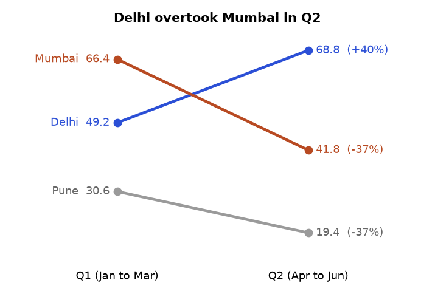
How to read it. The left end is Q1, the right end is Q2. Delhi's line climbs from 49.2 to 68.8 (+40%) while Mumbai falls from 66.4 to 41.8 (-37%), so their lines cross: Delhi became number one. Pune falls 37% (36.6% before rounding).
pivot_table with columns="quarter" gives one row per city and one column per quarter. .iterrows() loops over rows so each city is drawn as one segment.ax.plot([0, 1], [q1, q2], ...) draws the line between two x positions (0 and 1 stand for the two quarters); the quarter names are set later with set_xticks.ax.text lines label each end directly; ha="right" on the left end keeps the text off the line. Direct labels remove the legend.set_xlim(-0.55, 1.6) widens the axis on purpose to give room to the text.spines[["left", "bottom"]].set_visible(False) removes frames; the labels carry all the information.import numpy as np, pandas as pd, matplotlib.pyplot as plt, seaborn as sns
sns.set_theme(style="white", font_scale=1.1, rc={"figure.figsize": (8, 4.2), "figure.dpi": 110,
"axes.titlesize": 14, "axes.titleweight": "bold", "axes.titlelocation": "left",
"axes.spines.top": False, "axes.spines.right": False})
BLUE, ORANGE, TEAL, RED, PURPLE, GREY = "#2b4fd6", "#b84a22", "#357a70", "#aa2d26", "#6a2fd0", "#9a9a9a"
rng = np.random.default_rng(8)
n = 300
category = rng.choice(["Electronics", "Home", "Fashion", "Grocery"], n, p=[0.2, 0.25, 0.3, 0.25])
mu = pd.Series({"Electronics": 7.4, "Home": 6.8, "Fashion": 6.4, "Grocery": 5.6})[category].to_numpy()
orders = pd.DataFrame({
"date": pd.Timestamp("2025-01-01") + pd.to_timedelta(rng.integers(0, 180, n), unit="D"),
"city": rng.choice(["Delhi", "Mumbai", "Pune"], n, p=[0.40, 0.35, 0.25]),
"category": category,
"channel": rng.choice(["App", "Web"], n, p=[0.6, 0.4]),
"amount": np.round(rng.lognormal(mu, 0.6)).astype(int)})
orders["quarter"] = np.where(orders["date"] < "2025-04-01", "Q1", "Q2")
long = orders.groupby(["city", "quarter"], as_index=False)["amount"].sum()
long["amount"] = long["amount"] / 1000
ax = sns.lineplot(data=long, x="quarter", y="amount", hue="city", marker="o", markersize=9, linewidth=3,
palette={"Delhi": BLUE, "Mumbai": ORANGE, "Pune": GREY})
ax.set(xlabel="", ylabel="Sales (Rs thousand)", title="Delhi overtook Mumbai in Q2", xlim=(-0.2, 1.2))
sns.move_legend(ax, "upper left", frameon=False, bbox_to_anchor=(1, 1))
ax.figure.tight_layout()
ax.figure.savefig("ch08v_slope_sns.png", dpi=110)
print(long.round(1).to_string(index=False))
print("saved") city quarter amount
Delhi Q1 49.2
Delhi Q2 68.8
Mumbai Q1 66.4
Mumbai Q2 41.8
Pune Q1 30.6
Pune Q2 19.4
savedA slope chart is just a line chart with two x values, so sns.lineplot with hue does it in three lines, but the direct labels need matplotlib text calls as above. Here the legend is moved outside the axes with sns.move_legend.
import plotly.express as px
long = px.data.gapminder().query("country in ['India', 'China'] and year in [1997, 2007]") # any tidy long table
fig = px.line(long, x="year", y="gdpPercap", color="country", markers=True)
fig.update_traces(line_width=4, marker_size=10)Not run here. Same idea in plotly: px.line(long, x=quarter, y=amount, color=city, markers=True) on a long table with two x values. The example uses plotly's built-in gapminder data so that it is runnable anywhere; with our table the call is the same with columns quarter, amount, city.
Answers: "Which parts added and which subtracted between two totals?" (revenue bridge, profit bridge, headcount change). Do not use when: the pieces do not add up to the end value, or there are more than about 10 steps.
import numpy as np, pandas as pd, matplotlib.pyplot as plt
plt.rcParams.update({"figure.figsize": (8, 4.2), "figure.dpi": 110, "font.size": 12,
"axes.titlesize": 14, "axes.titleweight": "bold", "axes.titlelocation": "left",
"axes.spines.top": False, "axes.spines.right": False})
BLUE, ORANGE, TEAL, RED, PURPLE, GREY = "#2b4fd6", "#b84a22", "#357a70", "#aa2d26", "#6a2fd0", "#9a9a9a"
rng = np.random.default_rng(8)
n = 300
category = rng.choice(["Electronics", "Home", "Fashion", "Grocery"], n, p=[0.2, 0.25, 0.3, 0.25])
mu = pd.Series({"Electronics": 7.4, "Home": 6.8, "Fashion": 6.4, "Grocery": 5.6})[category].to_numpy()
orders = pd.DataFrame({
"date": pd.Timestamp("2025-01-01") + pd.to_timedelta(rng.integers(0, 180, n), unit="D"),
"city": rng.choice(["Delhi", "Mumbai", "Pune"], n, p=[0.40, 0.35, 0.25]),
"category": category,
"channel": rng.choice(["App", "Web"], n, p=[0.6, 0.4]),
"amount": np.round(rng.lognormal(mu, 0.6)).astype(int)})
orders["quarter"] = np.where(orders["date"] < "2025-04-01", "Q1", "Q2")
cat = orders.pivot_table(index="category", columns="quarter", values="amount", aggfunc="sum") / 1000
delta = (cat["Q2"] - cat["Q1"]).round(1)
start, end = cat["Q1"].sum().round(1), cat["Q2"].sum().round(1)
print(f"Q1 total {start} + changes {delta.sum().round(1)} = Q2 total {end}")
print(delta.to_string())
labels = ["Q1 total"] + list(delta.index) + ["Q2 total"]
values = [start] + delta.tolist() + [end]
fig, ax = plt.subplots(figsize=(8, 4.4))
running = start
ax.bar(0, start, color=GREY)
for i, d in enumerate(delta.tolist(), start=1):
ax.bar(i, d, bottom=running, color=TEAL if d >= 0 else RED)
ax.text(i, max(running, running + d) + 3, f"{d:+.1f}", ha="center", fontweight="bold")
ax.plot([i - 0.7, i + 0.4], [running, running], color="#777", lw=0.8)
running += d
ax.bar(len(delta) + 1, end, color=BLUE)
ax.text(0, start + 3, f"{start:.1f}", ha="center", fontweight="bold")
ax.text(len(delta) + 1, end + 3, f"{end:.1f}", ha="center", fontweight="bold")
ax.set_xticks(range(len(labels)), labels)
ax.set_ylim(100, 160)
ax.set_ylabel("Sales (Rs thousand)")
ax.set_title("Fashion and Grocery explain the Q2 drop")
fig.tight_layout()
fig.savefig("ch08v_waterfall.png", dpi=110)
print("saved")Q1 total 146.2 + changes -16.1 = Q2 total 130.1
category
Electronics 1.5
Fashion -13.1
Grocery -5.1
Home 0.6
saved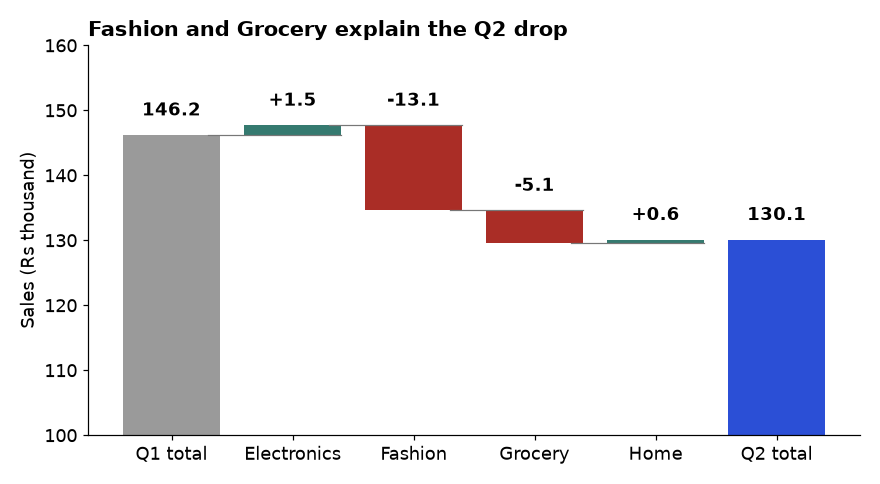
How to read it. Start with the grey total on the left, follow each floating step (teal = rise, red = fall) and land on the blue total. Fashion (-13.1) and Grocery (-5.1) outweigh the small gains in Electronics (+1.5) and Home (+0.6). Check: 146.2 - 13.1 - 5.1 + 1.5 + 0.6 = 130.1 (the printed line confirms the bridge adds up).
start + sum(changes) == end before drawing. Also note this waterfall's y-axis starts at 100: floating bars encode the step as position of its top and bottom, so a cut axis is legal, but state it.delta = Q2 - Q1 per category; delta.sum() must equal the difference of the totals. That assert-style print is the safety net.ax.bar(i, d, bottom=running): the bar starts at the running total and extends by d (negative bars go down). running += d moves the baseline for the next step.ax.set_ylim(100, 160) trims the empty bottom so the steps are visible; this is the declared cut axis.import plotly.graph_objects as go
fig = go.Figure(go.Waterfall(
x=["Q1 total", "Electronics", "Home", "Fashion", "Grocery", "Q2 total"],
measure=["absolute", "relative", "relative", "relative", "relative", "total"],
y=[146.2, 1.5, 0.6, -13.1, -5.1, None],
increasing={"marker": {"color": "#357a70"}}, decreasing={"marker": {"color": "#aa2d26"}},
totals={"marker": {"color": "#2b4fd6"}}, connector={"line": {"color": "#777"}}))
fig.update_layout(title="Fashion and Grocery explain the Q2 drop", yaxis_range=[100, 160])Not run here. plotly has a real waterfall trace: measure says whether each value is a starting value (absolute), a change (relative) or a computed total (total, y can be None). It does the running sum for you. seaborn has no waterfall.
Answers: "At which step do we lose most people?" Do not use when: the steps are not strictly ordered or a person can skip steps. Label both the count and the step-to-step conversion; the biggest drop is the story, not the widest bar.
import numpy as np, pandas as pd, matplotlib.pyplot as plt
plt.rcParams.update({"figure.figsize": (8, 4.2), "figure.dpi": 110, "font.size": 12,
"axes.titlesize": 14, "axes.titleweight": "bold", "axes.titlelocation": "left",
"axes.spines.top": False, "axes.spines.right": False})
BLUE, ORANGE, TEAL, RED, PURPLE, GREY = "#2b4fd6", "#b84a22", "#357a70", "#aa2d26", "#6a2fd0", "#9a9a9a"
steps = pd.DataFrame({"step": ["Visited site", "Added to cart", "Started checkout", "Paid"],
"users": [10000, 3800, 1900, 1330]})
steps["step_conv"] = (steps["users"] / steps["users"].shift(1) * 100).round(1)
steps["overall"] = (steps["users"] / steps["users"].iloc[0] * 100).round(1)
print(steps.to_string(index=False))
fig, ax = plt.subplots()
y = np.arange(len(steps))[::-1]
ax.barh(y, steps["users"], color=[GREY, GREY, GREY, BLUE], height=0.7)
ax.barh(y, -steps["users"], color=[GREY, GREY, GREY, BLUE], height=0.7) # mirror for the funnel look
for yi, u, c in zip(y, steps["users"], steps["step_conv"]):
ax.text(0, yi, f"{u:,}", ha="center", va="center", color="white", fontweight="bold")
if not np.isnan(c):
ax.text(u + 250, yi, f"{c:.0f}% of previous step", va="center", color="#333")
ax.set_yticks(y, steps["step"])
ax.set_xlim(-5200, 8800); ax.set_xticks([])
ax.spines[["left", "bottom"]].set_visible(False); ax.tick_params(length=0)
ax.set_title("Cart to checkout loses half of shoppers (50%)")
fig.tight_layout()
fig.savefig("ch08v_funnel.png", dpi=110)
print("saved") step users step_conv overall
Visited site 10000 NaN 100.0
Added to cart 3800 38.0 38.0
Started checkout 1900 50.0 19.0
Paid 1330 70.0 13.3
saved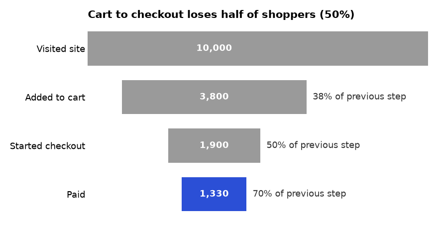
How to read it. Bars shrink downward. Only 38% of visitors add to cart (3,800 / 10,000), 50% of carts start checkout (1,900 / 3,800), and 70% of checkouts pay (1,330 / 1,900). Overall 13.3% convert. The step with the lowest rate that is also fixable is the one to investigate; here cart to checkout is where half are lost.
steps["users"].shift(1) moves the column down one row, so each step is divided by the one above it: step conversion. The first row has no predecessor, giving NaN (not a number).barh calls, one with positive and one with negative widths, make the symmetric funnel shape; the widths are the same, so no information is invented.u + 250) in dark text, so narrow bars never clip it. np.isnan(c) skips the first row, which has no previous step.y = np.arange(4)[::-1] numbers rows from the top: the first step gets the highest y.import plotly.express as px
steps = {"step": ["Visited site", "Added to cart", "Started checkout", "Paid"], "users": [10000, 3800, 1900, 1330]}
fig = px.funnel(steps, x="users", y="step", title="Cart to checkout loses half of shoppers (50%)")
fig.update_traces(textinfo="value+percent previous", marker_color="#2b4fd6")Not run here. px.funnel draws centred bars and textinfo="value+percent previous" prints the same step conversions as our label. seaborn has no funnel; a plain sns.barplot of the four steps (horizontal) is the closest equivalent.
Answers: "Which few reasons account for most of the problem?" (the 80/20 idea). Do not use when: there is no natural count or cost per cause, or the causes overlap.
import numpy as np, pandas as pd, matplotlib.pyplot as plt
plt.rcParams.update({"figure.figsize": (8, 4.2), "figure.dpi": 110, "font.size": 12,
"axes.titlesize": 14, "axes.titleweight": "bold", "axes.titlelocation": "left",
"axes.spines.top": False, "axes.spines.right": False})
BLUE, ORANGE, TEAL, RED, PURPLE, GREY = "#2b4fd6", "#b84a22", "#357a70", "#aa2d26", "#6a2fd0", "#9a9a9a"
reasons = pd.Series({"Size or fit": 124, "Damaged in transit": 86, "Late delivery": 51,
"Wrong item": 33, "Changed mind": 21, "Other": 15}).sort_values(ascending=False)
cum = reasons.cumsum() / reasons.sum() * 100
print(pd.DataFrame({"returns": reasons, "cum_pct": cum.round(1)}).to_string())
fig, ax = plt.subplots()
ax.bar(reasons.index, reasons.values, color=[BLUE, BLUE] + [GREY] * 4)
ax.set_ylabel("Returns (count)")
ax.set_xticks(range(len(reasons)), reasons.index, rotation=20, ha="right")
ax2 = ax.twinx()
ax2.plot(range(len(reasons)), cum.values, color=ORANGE, marker="o", lw=2.5)
ax2.set_ylim(0, 105); ax2.set_ylabel("Cumulative share of returns (%)")
ax2.spines["right"].set_visible(True)
ax2.axhline(80, color=ORANGE, lw=1, ls="--")
ax2.text(5, 82, "80%", color=ORANGE, ha="right")
ax.set_title("Two reasons cause 64% of returns")
fig.tight_layout()
fig.savefig("ch08v_pareto.png", dpi=110)
print("saved") returns cum_pct
Size or fit 124 37.6
Damaged in transit 86 63.6
Late delivery 51 79.1
Wrong item 33 89.1
Changed mind 21 95.5
Other 15 100.0
saved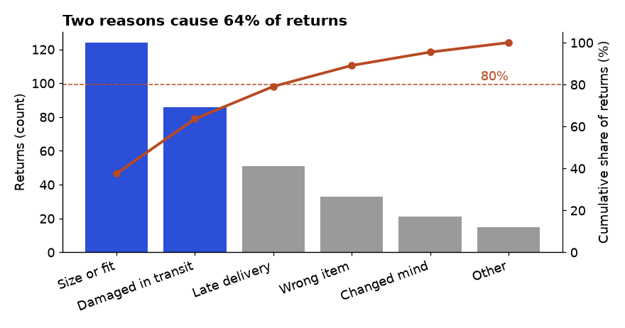
How to read it. Bars (left axis) are counts sorted largest first. The orange line (right axis) is the running share. After "Size or fit" (124) and "Damaged in transit" (86), the line is at 63.6%: two causes make 64% of the 330 returns. The dashed line marks 80%, reached after the third cause. This is the one legitimate use of two y-axes, because both axes are derived from the same bars and the right axis is a percent of the left total.
reasons.cumsum() / reasons.sum() * 100 is the running total as a percent: 124/330 = 37.6, then 210/330 = 63.6, and so on up to 100.ax.twinx() creates a second axes that shares the x-axis but has its own y-axis on the right. The cumulative line is drawn on ax2.set_xticks(positions, labels, rotation=20, ha="right") tilts long labels slightly and anchors their right end to the tick.import pandas as pd
import plotly.graph_objects as go
from plotly.subplots import make_subplots
reasons = pd.Series({"Size or fit": 124, "Damaged in transit": 86, "Late delivery": 51,
"Wrong item": 33, "Changed mind": 21, "Other": 15})
cum = reasons.cumsum() / reasons.sum() * 100
fig = make_subplots(specs=[[{"secondary_y": True}]])
fig.add_bar(x=reasons.index, y=reasons.values, name="Returns", marker_color="#2b4fd6")
fig.add_scatter(x=reasons.index, y=cum.values, name="Cumulative %", mode="lines+markers",
line_color="#b84a22", secondary_y=True)
fig.update_yaxes(range=[0, 105], secondary_y=True, title_text="Cumulative share (%)")Not run here. make_subplots(specs=[[{"secondary_y": True}]]) creates the second y-axis; each trace says which axis it belongs to with secondary_y. seaborn has no Pareto; use matplotlib.
groupby or pivot_table into a small table, (2) print that table, (3) draw from the table, (4) put the finding in the title, computed from the data. If a chart looks wrong, print the table first; the bug is nearly always there.Answers: "What is the trend, the seasonality, the spike?" Do not use when: the x values are unordered categories (use bars), or the time points are so few (3 or fewer) that a slope chart or bars are clearer. A line's baseline need not be zero, because position, not length, carries the value; but if you cut the axis, make the cut obvious.
import numpy as np, pandas as pd, matplotlib.pyplot as plt
plt.rcParams.update({"figure.figsize": (8, 4.2), "figure.dpi": 110, "font.size": 12,
"axes.titlesize": 14, "axes.titleweight": "bold", "axes.titlelocation": "left",
"axes.spines.top": False, "axes.spines.right": False})
BLUE, ORANGE, TEAL, RED, PURPLE, GREY = "#2b4fd6", "#b84a22", "#357a70", "#aa2d26", "#6a2fd0", "#9a9a9a"
months = pd.period_range("2024-01", "2025-06", freq="M").to_timestamp()
monthly = pd.Series([310, 295, 340, 360, 385, 400, 380, 410, 430, 470, 560, 620,
350, 330, 375, 405, 430, 455], index=months, name="sales_k")
import matplotlib.dates as mdates
peak = monthly.idxmax()
baseline = monthly.loc["2024-01":"2024-10"].mean()
print(f"peak {monthly.max()}k in {peak:%b %Y}; Jan to Oct 2024 average {baseline:.0f}k; peak / average = {monthly.max() / baseline:.2f}")
fig, ax = plt.subplots()
ax.plot(monthly.index, monthly.values, color=BLUE, lw=2.5, marker="o", ms=5)
ax.annotate(f"{peak:%b %Y}: {monthly.max()}k", xy=(peak, monthly.max()), xytext=(pd.Timestamp("2024-04-15"), 630),
arrowprops=dict(arrowstyle="->", color="#333"), va="center")
ax.axvspan(pd.Timestamp("2024-10-20"), pd.Timestamp("2024-12-31"), color=ORANGE, alpha=0.12)
ax.text(pd.Timestamp("2024-11-25"), 80, "festive\nseason", ha="center", color=ORANGE)
ax.xaxis.set_major_locator(mdates.MonthLocator(bymonth=[1, 4, 7, 10]))
ax.xaxis.set_major_formatter(mdates.DateFormatter("%b %Y"))
ax.set_ylim(0, 700)
ax.set_ylabel("Sales (Rs thousand)")
ax.set_title("The festive season lifted sales to 620k in Dec 2024")
fig.tight_layout()
fig.savefig("ch08v_line.png", dpi=110)
print("saved")peak 620k in Dec 2024; Jan to Oct 2024 average 378k; peak / average = 1.64
saved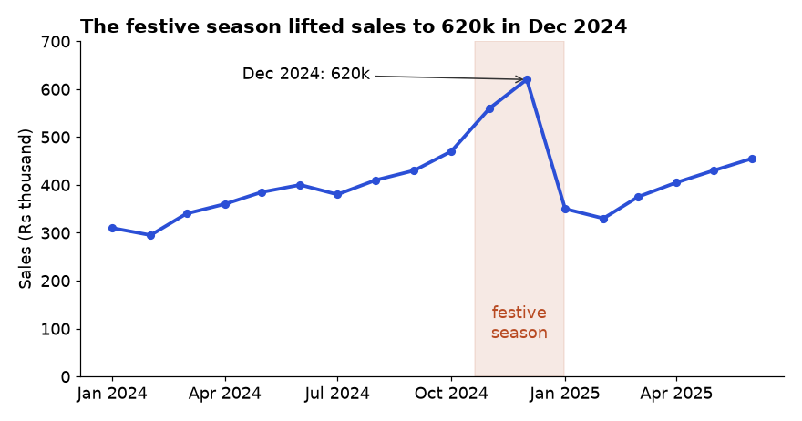
How to read it. The line rises slowly from 310k to 470k through October, jumps to 560k and 620k in November and December, then falls back to 350k in January 2025. The peak is 1.64 times the Jan to Oct 2024 average of 378k. The y-axis starts at zero, so the jump is shown at its true size.
monthly is a DatetimeIndex, so ax.plot(monthly.index, monthly.values) puts real dates on the x-axis and matplotlib spaces them by calendar time.monthly.loc["2024-01":"2024-10"] slices by date label (both ends included), a pandas feature that makes time series code readable.ax.axvspan(x_start, x_end, alpha=0.12) shades a vertical band to mark a period. A very low alpha (opacity) keeps it behind the data.mdates.MonthLocator(bymonth=[1, 4, 7, 10]) puts a tick every quarter; DateFormatter("%b %Y") prints "Jan 2024". Format codes: %b is the short month, %Y the 4-digit year, %d the day.import numpy as np, pandas as pd, matplotlib.pyplot as plt, seaborn as sns
sns.set_theme(style="white", font_scale=1.1, rc={"figure.figsize": (8, 4.2), "figure.dpi": 110,
"axes.titlesize": 14, "axes.titleweight": "bold", "axes.titlelocation": "left",
"axes.spines.top": False, "axes.spines.right": False})
BLUE, ORANGE, TEAL, RED, PURPLE, GREY = "#2b4fd6", "#b84a22", "#357a70", "#aa2d26", "#6a2fd0", "#9a9a9a"
months = pd.period_range("2024-01", "2025-06", freq="M").to_timestamp()
monthly = pd.Series([310, 295, 340, 360, 385, 400, 380, 410, 430, 470, 560, 620,
350, 330, 375, 405, 430, 455], index=months, name="sales_k")
df = monthly.rename_axis("month").reset_index()
ax = sns.lineplot(data=df, x="month", y="sales_k", color=BLUE, linewidth=2.5, marker="o")
ax.set(ylim=(0, 700), xlabel="", ylabel="Sales (Rs thousand)", title="The festive season lifted sales to 620k in Dec 2024")
ax.figure.autofmt_xdate()
ax.figure.tight_layout()
ax.figure.savefig("ch08v_line_sns.png", dpi=110)
print(df.tail(3).to_string(index=False))
print("saved") month sales_k
2025-04-01 405
2025-05-01 430
2025-06-01 455
savedsns.lineplot needs a tidy table (a column for x and a column for y). If several rows share the same x it averages them and draws a 95% confidence band, which is why it is the tool for repeated measurements (see the second multi-line block below). With one value per month there is nothing to average, so the picture is the same as the matplotlib one. autofmt_xdate() rotates and aligns the date labels.
import pandas as pd
import plotly.express as px
months = pd.period_range("2024-01", "2025-06", freq="M").to_timestamp()
sales = [310, 295, 340, 360, 385, 400, 380, 410, 430, 470, 560, 620, 350, 330, 375, 405, 430, 455]
df = pd.DataFrame({"month": months, "sales_k": sales})
fig = px.line(df, x="month", y="sales_k", markers=True, title="The festive season lifted sales to 620k in Dec 2024")
fig.update_yaxes(range=[0, 700], title="Sales (Rs thousand)")
fig.add_vrect(x0="2024-10-20", x1="2024-12-31", fillcolor="#b84a22", opacity=0.12, line_width=0)
fig.update_xaxes(rangeslider_visible=True) # a mini overview below the chart to zoom in timeNot run here. A line with markers; hovering shows the exact month and value. add_vrect is plotly's axvspan, and the optional range slider and the buttons to zoom time ranges are interactive features matplotlib cannot give you.
ax.plot(df["month_str"], df["sales"]). Right: df["month"] = pd.to_datetime(df["month_str"]) first, so gaps look like gaps.Answers: "How do 2 to 5 groups move relative to each other?" Do not use when: more than about 5 lines (switch to small multiples), or the lines have wildly different scales (index them to 100, or use small multiples).
import numpy as np, pandas as pd, matplotlib.pyplot as plt
plt.rcParams.update({"figure.figsize": (8, 4.2), "figure.dpi": 110, "font.size": 12,
"axes.titlesize": 14, "axes.titleweight": "bold", "axes.titlelocation": "left",
"axes.spines.top": False, "axes.spines.right": False})
BLUE, ORANGE, TEAL, RED, PURPLE, GREY = "#2b4fd6", "#b84a22", "#357a70", "#aa2d26", "#6a2fd0", "#9a9a9a"
rng = np.random.default_rng(8)
n = 300
category = rng.choice(["Electronics", "Home", "Fashion", "Grocery"], n, p=[0.2, 0.25, 0.3, 0.25])
mu = pd.Series({"Electronics": 7.4, "Home": 6.8, "Fashion": 6.4, "Grocery": 5.6})[category].to_numpy()
orders = pd.DataFrame({
"date": pd.Timestamp("2025-01-01") + pd.to_timedelta(rng.integers(0, 180, n), unit="D"),
"city": rng.choice(["Delhi", "Mumbai", "Pune"], n, p=[0.40, 0.35, 0.25]),
"category": category,
"channel": rng.choice(["App", "Web"], n, p=[0.6, 0.4]),
"amount": np.round(rng.lognormal(mu, 0.6)).astype(int)})
orders["month"] = orders["date"].dt.to_period("M").dt.to_timestamp()
city_m = orders.pivot_table(index="month", columns="city", values="amount", aggfunc="sum") / 1000
city_m = city_m.round(1)
print(city_m.to_string())
colors = {"Delhi": BLUE, "Mumbai": ORANGE, "Pune": GREY}
fig, ax = plt.subplots()
for city in city_m.columns:
ax.plot(city_m.index, city_m[city], color=colors[city], lw=2.8, marker="o")
ax.text(city_m.index[-1] + pd.Timedelta(days=6), city_m[city].iloc[-1], city,
color="#666" if city == "Pune" else colors[city], va="center", fontweight="bold")
ax.set_xticks(city_m.index, [d.strftime("%b") for d in city_m.index])
ax.set_xlim(city_m.index[0] - pd.Timedelta(days=8), city_m.index[-1] + pd.Timedelta(days=30))
ax.set_ylim(0, 35)
ax.set_ylabel("Sales (Rs thousand)")
ax.set_title("Delhi climbed to 30k in June while Mumbai fell")
fig.tight_layout()
fig.savefig("ch08v_multiline.png", dpi=110)
print("saved")city Delhi Mumbai Pune
month
2025-01-01 15.5 22.7 3.9
2025-02-01 12.0 23.0 13.3
2025-03-01 21.7 20.7 13.4
2025-04-01 17.2 11.5 4.5
2025-05-01 21.6 20.0 8.4
2025-06-01 30.0 10.3 6.5
saved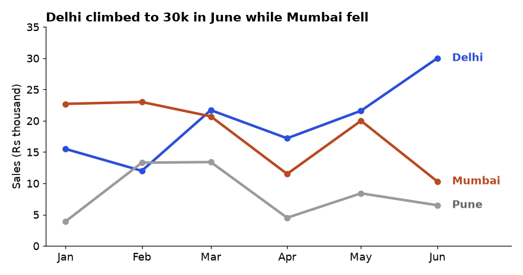
How to read it. Mumbai (orange) starts highest at 22.7k and ends at 10.3k; Delhi (blue) starts at 15.5k and ends at 30.0k, its highest month. Pune (grey) stays low and bumpy. Labelling each line at its right end saves the reader a trip to a legend. These are 300 synthetic orders, so single months are noisy; treat it as a drawing exercise, not a business fact.
dt.to_period("M").dt.to_timestamp() maps each date to the first day of its month, so orders group by month.pivot_table(index="month", columns="city", values="amount", aggfunc="sum") gives one column per line: the shape ax.plot wants.pd.Timedelta(days=6) pushes the text a little right of it).set_xticks(index, labels) with strftime("%b") shows only the month name; the year is the same for all points (put it in the subtitle).set_xlim(... + 30 days) adds blank room on the right so the labels do not fall off the chart.import numpy as np, pandas as pd, matplotlib.pyplot as plt, seaborn as sns
sns.set_theme(style="white", font_scale=1.1, rc={"figure.figsize": (8, 4.2), "figure.dpi": 110,
"axes.titlesize": 14, "axes.titleweight": "bold", "axes.titlelocation": "left",
"axes.spines.top": False, "axes.spines.right": False})
BLUE, ORANGE, TEAL, RED, PURPLE, GREY = "#2b4fd6", "#b84a22", "#357a70", "#aa2d26", "#6a2fd0", "#9a9a9a"
rng = np.random.default_rng(8)
n = 300
category = rng.choice(["Electronics", "Home", "Fashion", "Grocery"], n, p=[0.2, 0.25, 0.3, 0.25])
mu = pd.Series({"Electronics": 7.4, "Home": 6.8, "Fashion": 6.4, "Grocery": 5.6})[category].to_numpy()
orders = pd.DataFrame({
"date": pd.Timestamp("2025-01-01") + pd.to_timedelta(rng.integers(0, 180, n), unit="D"),
"city": rng.choice(["Delhi", "Mumbai", "Pune"], n, p=[0.40, 0.35, 0.25]),
"category": category,
"channel": rng.choice(["App", "Web"], n, p=[0.6, 0.4]),
"amount": np.round(rng.lognormal(mu, 0.6)).astype(int)})
orders["month"] = orders["date"].dt.to_period("M").dt.to_timestamp()
ax = sns.lineplot(data=orders, x="month", y="amount", hue="city", hue_order=["Delhi", "Mumbai", "Pune"],
estimator="mean", errorbar=("ci", 95), seed=8, palette=[BLUE, ORANGE, GREY], linewidth=2.5)
ax.set(xlabel="", ylabel="Average order value (Rs)", title="Average order value is noisy: the bands overlap")
ax.set_xticks(sorted(orders["month"].unique()), [d.strftime("%b") for d in sorted(orders["month"].unique())])
sns.move_legend(ax, "upper right", frameon=False, title=None)
ax.figure.tight_layout()
ax.figure.savefig("ch08v_multiline_sns.png", dpi=110)
print(orders.groupby(["month", "city"])["amount"].mean().round(0).unstack().to_string())
print("saved")city Delhi Mumbai Pune
month
2025-01-01 859.0 1133.0 646.0
2025-02-01 749.0 1097.0 885.0
2025-03-01 945.0 942.0 746.0
2025-04-01 1148.0 608.0 758.0
2025-05-01 798.0 951.0 761.0
2025-06-01 1306.0 1033.0 723.0
saved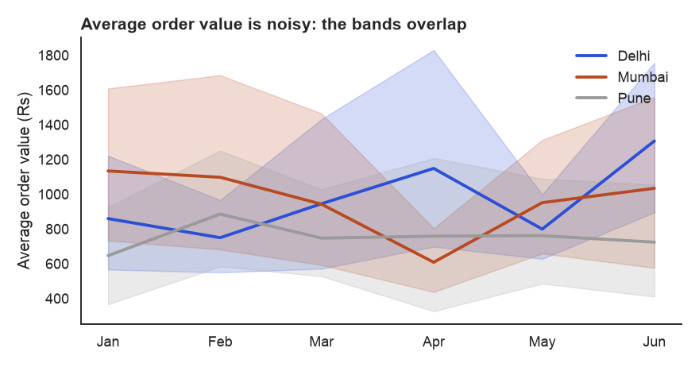
Here the same call shows a different quantity: the average order value, one point per month and city, built from many orders. Because each month has many rows, seaborn computes the mean and a 95% confidence band (errorbar=("ci", 95)). The bands overlap almost everywhere, so most of the month-to-month wiggles are noise. This is the honest way to draw a noisy average; one bare line would make small wiggles look like events. The band comes from bootstrapping (re-sampling the rows many times), so it is random; seed=8 makes it repeat exactly. In seaborn 0.13 the old ci= argument is replaced by errorbar=.
import plotly.express as px
# city_m is a long table: month, city, sales_k (use city_m.reset_index().melt(...) from the pivot)
fig = px.line(city_m, x="month", y="sales_k", color="city", markers=True,
color_discrete_map={"Delhi": "#2b4fd6", "Mumbai": "#b84a22", "Pune": "#9a9a9a"})
fig.update_layout(hovermode="x unified") # one tooltip shows all three cities for the month under the cursor
fig.update_traces(line_width=3)Not run here. hovermode="x unified" is the feature to remember: with several lines, a single tooltip lists every series at the same x. Long format means one row per month and city; pivot.reset_index().melt(id_vars="month", var_name="city", value_name="sales_k") makes that from the wide table above.
Answers: "How does the total change, and who contributes?" Do not use when: you need to compare the individual series precisely (only the bottom layer has a flat baseline; use lines or small multiples), or with negative values.
import numpy as np, pandas as pd, matplotlib.pyplot as plt
plt.rcParams.update({"figure.figsize": (8, 4.2), "figure.dpi": 110, "font.size": 12,
"axes.titlesize": 14, "axes.titleweight": "bold", "axes.titlelocation": "left",
"axes.spines.top": False, "axes.spines.right": False})
BLUE, ORANGE, TEAL, RED, PURPLE, GREY = "#2b4fd6", "#b84a22", "#357a70", "#aa2d26", "#6a2fd0", "#9a9a9a"
rng = np.random.default_rng(8)
n = 300
category = rng.choice(["Electronics", "Home", "Fashion", "Grocery"], n, p=[0.2, 0.25, 0.3, 0.25])
mu = pd.Series({"Electronics": 7.4, "Home": 6.8, "Fashion": 6.4, "Grocery": 5.6})[category].to_numpy()
orders = pd.DataFrame({
"date": pd.Timestamp("2025-01-01") + pd.to_timedelta(rng.integers(0, 180, n), unit="D"),
"city": rng.choice(["Delhi", "Mumbai", "Pune"], n, p=[0.40, 0.35, 0.25]),
"category": category,
"channel": rng.choice(["App", "Web"], n, p=[0.6, 0.4]),
"amount": np.round(rng.lognormal(mu, 0.6)).astype(int)})
orders["month"] = orders["date"].dt.to_period("M").dt.to_timestamp()
cat_m = orders.pivot_table(index="month", columns="category", values="amount", aggfunc="sum") / 1000
cat_m = cat_m[["Electronics", "Home", "Fashion", "Grocery"]].round(1)
print(cat_m.to_string())
fig, ax = plt.subplots()
ax.stackplot(cat_m.index, cat_m.T.values, labels=cat_m.columns, colors=[BLUE, TEAL, ORANGE, PURPLE], alpha=0.95)
totals = cat_m.sum(axis=1)
for d, t in totals.items():
ax.text(d, t + 1.2, f"{t:.0f}", ha="center", fontsize=11)
ax.set_xticks(cat_m.index, [d.strftime("%b") for d in cat_m.index])
ax.set_ylim(0, 62)
ax.set_ylabel("Sales (Rs thousand)")
ax.legend(frameon=False, loc="lower left", ncol=4, bbox_to_anchor=(0, 1.0), columnspacing=1.2)
ax.set_title("Electronics hit 31k in June while the rest shrank", pad=34)
fig.tight_layout()
fig.savefig("ch08v_area.png", dpi=110)
print("saved")category Electronics Home Fashion Grocery
month
2025-01-01 17.1 11.0 9.9 3.9
2025-02-01 20.9 10.4 10.7 6.3
2025-03-01 21.0 12.8 18.4 3.6
2025-04-01 11.0 11.8 8.0 2.6
2025-05-01 18.5 16.1 11.2 4.1
2025-06-01 31.1 6.9 6.7 2.1
saved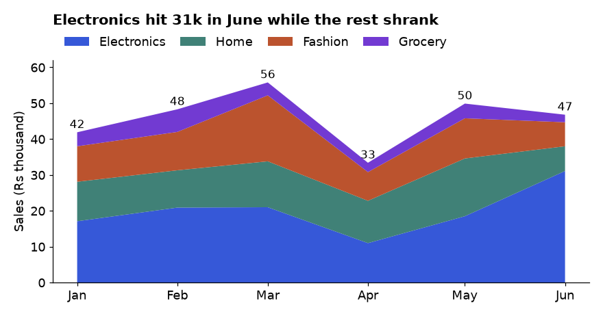
How to read it. The top edge is the monthly total (labelled). The blue bottom layer is Electronics; because it sits on the flat baseline we can read its size directly, and it jumps in June to 31.1k while the other three layers shrink, so the June total (47) is actually lower than May (50). The upper layers float, so their exact size is hard to read, which is the main weakness of the area chart.
ax.stackplot(x, y_matrix, labels=, colors=) draws stacked areas from a 2D array whose rows are series. cat_m.T.values transposes the table so each row is a category.cat_m.sum(axis=1) adds across categories for each month; the loop writes those totals above the stack.ncol=4, bbox_to_anchor) so it does not cover any data.import plotly.express as px
# cat_m_long: columns month, category, sales_k
fig = px.area(cat_m_long, x="month", y="sales_k", color="category",
color_discrete_sequence=["#2b4fd6", "#357a70", "#b84a22", "#6a2fd0"])
fig.update_layout(legend_orientation="h", legend_y=1.1)Not run here. px.area stacks by default. Use groupnorm="percent" to turn it into a 100% area chart of shares. seaborn has no stacked area; sns.histplot(..., multiple="fill") does shares for distributions, not for time totals. Use matplotlib's stackplot.
Answers: "Is each row going up, down or flat?" A sparkline is a tiny line chart without axes, drawn at word size. Do not use when: exact values matter or the scale differs a lot between rows (add the number next to it).
import numpy as np, pandas as pd, matplotlib.pyplot as plt
plt.rcParams.update({"figure.figsize": (8, 4.2), "figure.dpi": 110, "font.size": 12,
"axes.titlesize": 14, "axes.titleweight": "bold", "axes.titlelocation": "left",
"axes.spines.top": False, "axes.spines.right": False})
BLUE, ORANGE, TEAL, RED, PURPLE, GREY = "#2b4fd6", "#b84a22", "#357a70", "#aa2d26", "#6a2fd0", "#9a9a9a"
rng = np.random.default_rng(8)
n = 300
category = rng.choice(["Electronics", "Home", "Fashion", "Grocery"], n, p=[0.2, 0.25, 0.3, 0.25])
mu = pd.Series({"Electronics": 7.4, "Home": 6.8, "Fashion": 6.4, "Grocery": 5.6})[category].to_numpy()
orders = pd.DataFrame({
"date": pd.Timestamp("2025-01-01") + pd.to_timedelta(rng.integers(0, 180, n), unit="D"),
"city": rng.choice(["Delhi", "Mumbai", "Pune"], n, p=[0.40, 0.35, 0.25]),
"category": category,
"channel": rng.choice(["App", "Web"], n, p=[0.6, 0.4]),
"amount": np.round(rng.lognormal(mu, 0.6)).astype(int)})
orders["month"] = orders["date"].dt.to_period("M").dt.to_timestamp()
cat_m = (orders.pivot_table(index="month", columns="category", values="amount", aggfunc="sum") / 1000).round(1)
rows = cat_m.columns.tolist()
fig, axs = plt.subplots(len(rows), 1, figsize=(8, 3.6))
for ax, name in zip(axs, rows):
s = cat_m[name]
ax.plot(range(len(s)), s.values, color=GREY, lw=2)
ax.scatter([s.values.argmax(), len(s) - 1], [s.max(), s.iloc[-1]], color=[BLUE, RED], zorder=3, s=30)
ax.axis("off")
change = (s.iloc[-1] / s.iloc[0] - 1) * 100
ax.text(-0.9, s.mean(), name, ha="right", va="center", fontweight="bold")
ax.text(len(s) - 0.4, s.mean(), f"Jun {s.iloc[-1]:.1f}k ({change:+.0f}% vs Jan)", va="center")
ax.set_xlim(-0.2, len(s) + 3.5)
ax.margins(y=0.3)
fig.suptitle("Monthly sales by category, Jan to Jun (blue = best month, red = latest)", x=0.02, ha="left", fontweight="bold", fontsize=13)
fig.subplots_adjust(left=0.2, right=0.98, top=0.86, bottom=0.02, hspace=0.35)
fig.savefig("ch08v_sparkline.png", dpi=110)
print(cat_m.iloc[[0, -1]].to_string())
print("saved")category Electronics Fashion Grocery Home
month
2025-01-01 17.1 9.9 3.9 11.0
2025-06-01 31.1 6.7 2.1 6.9
saved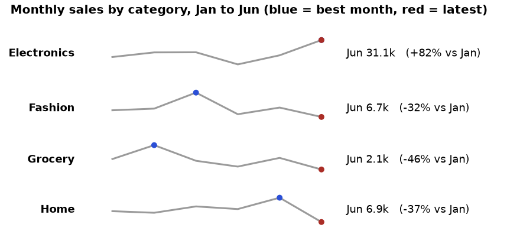
How to read it. Each row is a category's six months. Blue marks the best month, red the latest. Electronics is the only one finishing at its high point (the blue and red dots coincide). Because each row has its own scale, the text on the right gives the true June value and the change from January. Sparklines in a spreadsheet or Power BI table work the same way.
plt.subplots(len(rows), 1) makes one small axes per category stacked vertically; zip(axs, rows) pairs each axes with its data.ax.axis("off") removes all frames, ticks and labels: the sparkline's defining trait.s.values.argmax() is the position of the best month; two scatter points mark it and the last value.ax.text calls place the row name on the left and the numbers on the right, using data coordinates just outside the line.fig.suptitle(..., x=0.02, ha="left") sets a left-aligned figure title; subplots_adjust sets the margins by hand.import plotly.graph_objects as go
from plotly.subplots import make_subplots
fig = make_subplots(rows=4, cols=1, shared_xaxes=False, vertical_spacing=0.04,
subplot_titles=["Electronics", "Home", "Fashion", "Grocery"])
for i, name in enumerate(["Electronics", "Home", "Fashion", "Grocery"], start=1):
fig.add_trace(go.Scatter(y=cat_m[name], mode="lines", line_color="#9a9a9a", showlegend=False), row=i, col=1)
fig.update_xaxes(visible=False); fig.update_yaxes(visible=False)Not run here. In plotly you build sparklines with one tiny subplot per row and the axes hidden. For tables, spreadsheets and Power BI, a native sparkline column is simpler; use the picture version only in reports and slides.
Answers: nothing you cannot answer better. Two y-axes let the author choose each axis range freely, so the author, not the data, decides whether two lines look linked. Alternatives: two stacked panels sharing the x-axis, or both series indexed to 100 at the start.
import numpy as np, pandas as pd, matplotlib.pyplot as plt
plt.rcParams.update({"figure.figsize": (8, 4.2), "figure.dpi": 110, "font.size": 12,
"axes.titlesize": 14, "axes.titleweight": "bold", "axes.titlelocation": "left",
"axes.spines.top": False, "axes.spines.right": False})
BLUE, ORANGE, TEAL, RED, PURPLE, GREY = "#2b4fd6", "#b84a22", "#357a70", "#aa2d26", "#6a2fd0", "#9a9a9a"
sales = np.array([350, 330, 375, 405, 430, 455])
returns = np.array([52, 55, 49, 58, 54, 57])
months = ["Jan", "Feb", "Mar", "Apr", "May", "Jun"]
print(f"sales change Jan to Jun: {sales[-1] / sales[0] - 1:+.1%}; returns change: {returns[-1] / returns[0] - 1:+.1%}")
def dual(ax, lim, title):
ax.plot(months, sales, color=BLUE, lw=2.5, marker="o")
ax.set_ylim(0, 500); ax.set_ylabel("Sales (Rs thousand)", color=BLUE)
ax2 = ax.twinx()
ax2.plot(months, returns, color=RED, lw=2.5, marker="s")
ax2.set_ylim(*lim); ax2.set_ylabel("Returns (count)", color=RED)
ax2.spines["right"].set_visible(True)
ax.set_title(title, fontsize=12)
fig = plt.figure(figsize=(11, 4.4), layout="constrained")
gs = fig.add_gridspec(2, 3, width_ratios=[1.3, 1.3, 1])
dual(fig.add_subplot(gs[:, 0]), (0, 100), "A: returns look flat")
dual(fig.add_subplot(gs[:, 1]), (45, 60), "B: returns 'chase' sales")
top = fig.add_subplot(gs[0, 2]); bot = fig.add_subplot(gs[1, 2], sharex=top)
top.plot(months, sales, color=BLUE, lw=2.5, marker="o"); top.set_ylim(0, 500); top.set_title("C: separate panels", fontsize=12)
top.set_ylabel("Sales (k)"); top.tick_params(labelbottom=False)
bot.plot(months, returns, color=RED, lw=2.5, marker="s"); bot.set_ylim(0, 100); bot.set_ylabel("Returns")
fig.savefig("ch08v_dual_axis.png", dpi=110)
print("saved")sales change Jan to Jun: +30.0%; returns change: +9.6%
saved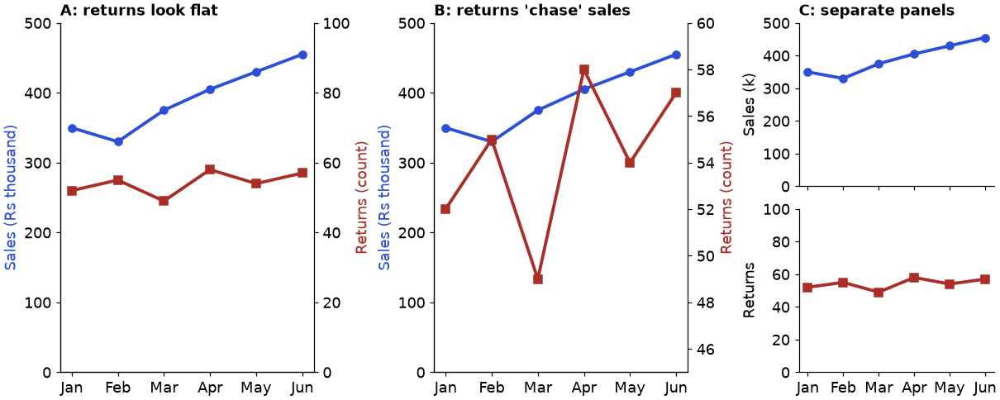
How to read it. Sales and returns are the same in A and B. In A the right axis runs 0 to 100, so returns look flat, which is right: they moved from 52 to 57 (+9.6%) while sales rose 30.0%. In B the right axis runs 45 to 60, so returns seem to zoom upward in step with sales, a story invented by the axis range. Panel C puts each series on its own panel with its own honest scale and lets the reader judge.
dual(ax, lim, title) draws both lines; only lim (the right-hand y-limits) changes between A and B. That one argument changes the story, which is the whole point.ax.twinx() adds the second y-axis; colour the axis labels like their lines so the reader knows which is which.layout="constrained" asks matplotlib to fit all labels, including the second y-axis labels, without overlap. fig.add_gridspec(2, 3, width_ratios=[...]) makes a 2 by 3 grid; gs[:, 0] means "all rows, column 0", so A and B each take a full column while C uses two rows of column 2 (GridSpec is covered in 8.7).sharex=top links the x-axes; tick_params(labelbottom=False) hides the duplicate month labels on the top panel.series / series.iloc[0] * 100: in June sales are at 130.0 and returns at 109.6), which shows relative growth on one honest axis. The Pareto chart in 8.3 is the exception because the right axis is the running percent of the same bars.Answers: "Which days and hours are busy?" It lays time out as a grid (day of week by week, or hour by day of week) and colours each cell by volume. Do not use when: you need exact values (add numbers in the cells) or the grid has fewer than about 20 cells.
import numpy as np, pandas as pd, matplotlib.pyplot as plt
plt.rcParams.update({"figure.figsize": (8, 4.2), "figure.dpi": 110, "font.size": 12,
"axes.titlesize": 14, "axes.titleweight": "bold", "axes.titlelocation": "left",
"axes.spines.top": False, "axes.spines.right": False})
BLUE, ORANGE, TEAL, RED, PURPLE, GREY = "#2b4fd6", "#b84a22", "#357a70", "#aa2d26", "#6a2fd0", "#9a9a9a"
rng = np.random.default_rng(8)
days = pd.date_range("2025-01-01", "2025-06-30")
base = np.where(days.dayofweek >= 5, 15, 9.5) # weekends are busier
orders_per_day = rng.poisson(base)
daily = pd.Series(orders_per_day, index=days, name="orders")
print(daily.groupby(daily.index.dayofweek).mean().round(1).rename(index=dict(enumerate(["Mon", "Tue", "Wed", "Thu", "Fri", "Sat", "Sun"]))).to_string())
first_monday = days[0] - pd.Timedelta(days=days[0].dayofweek)
week = ((days - first_monday).days // 7).to_numpy()
grid = np.full((7, week.max() + 1), np.nan)
grid[days.dayofweek, week] = daily.values
fig, ax = plt.subplots(figsize=(9, 3.4))
im = ax.imshow(grid, cmap="Blues", aspect="equal", vmin=0)
ax.set_yticks(range(7), ["Mon", "Tue", "Wed", "Thu", "Fri", "Sat", "Sun"])
month_start = [(d - first_monday).days // 7 for d in pd.date_range("2025-01-01", "2025-06-01", freq="MS")]
ax.set_xticks(month_start, ["Jan", "Feb", "Mar", "Apr", "May", "Jun"])
ax.tick_params(length=0)
for s in ax.spines.values(): s.set_visible(False)
cb = fig.colorbar(im, ax=ax, shrink=0.8, pad=0.02); cb.set_label("Orders per day")
ax.set_title("Saturdays and Sundays are the busiest days")
fig.tight_layout()
fig.savefig("ch08v_calendar.png", dpi=110)
print("saved")Mon 9.2
Tue 10.0
Wed 9.2
Thu 10.1
Fri 10.1
Sat 14.5
Sun 12.9
saved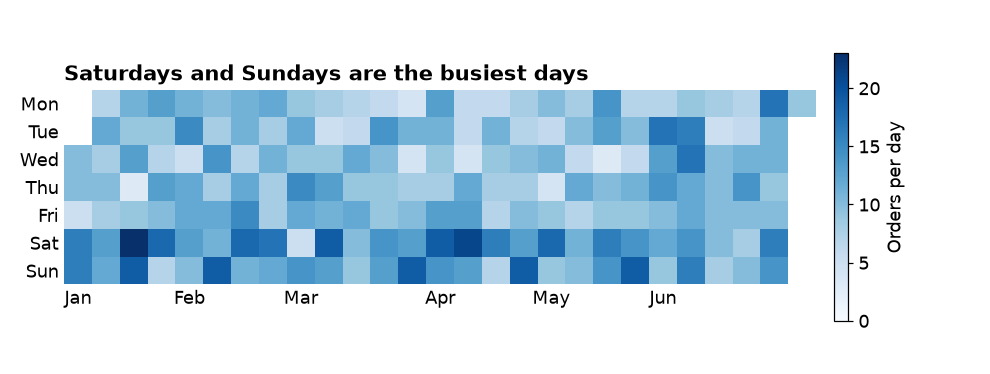
How to read it. Each small square is one day. Darker blue means more orders. The two bottom rows (Saturday and Sunday) are darker than the rest. The printed weekday averages confirm the picture: about 9 to 10 orders on weekdays and 13 to 14.5 on Saturday and Sunday.
rng.poisson(lam) draws counts of events with a given mean; it models "orders per day" well. The seeded generator makes the data identical on every run.first_monday is the Monday of the week containing 1 January, so the week number is (date - first_monday).days // 7.grid[days.dayofweek, week] = daily.values fills the cells by pairing each day's weekday row with its week column (fancy indexing); cells outside the date range stay NaN and are left blank.ax.imshow(grid, cmap="Blues", vmin=0) colours the grid; vmin=0 keeps a day with zero orders at the lightest shade so the scale is honest.fig.colorbar) is the legend for colour; always include one when colour carries numbers.import numpy as np, pandas as pd, matplotlib.pyplot as plt, seaborn as sns
sns.set_theme(style="white", font_scale=1.1, rc={"figure.figsize": (8, 4.2), "figure.dpi": 110,
"axes.titlesize": 14, "axes.titleweight": "bold", "axes.titlelocation": "left",
"axes.spines.top": False, "axes.spines.right": False})
BLUE, ORANGE, TEAL, RED, PURPLE, GREY = "#2b4fd6", "#b84a22", "#357a70", "#aa2d26", "#6a2fd0", "#9a9a9a"
rng = np.random.default_rng(8)
n = 2500
hours = np.arange(8, 24)
w = np.exp(-0.5 * ((hours - 20) / 3.0) ** 2) # evening peak around 8 pm
hour = rng.choice(hours, n, p=w / w.sum())
weekday = rng.choice(7, n, p=[0.12, 0.12, 0.12, 0.13, 0.14, 0.19, 0.18])
tbl = pd.crosstab(weekday, hour).reindex(index=range(7), columns=range(8, 24), fill_value=0)
tbl.index = ["Mon", "Tue", "Wed", "Thu", "Fri", "Sat", "Sun"]
print("busiest cell:", tbl.stack().idxmax(), "with", tbl.stack().max(), "orders")
ax = sns.heatmap(tbl, cmap="Blues", cbar_kws={"label": "Orders"}, linewidths=0.5, linecolor="white")
ax.set(xlabel="Hour of day (24-hour clock)", ylabel="", title="Orders peak around 8 pm, strongest on Saturday")
ax.tick_params(length=0)
ax.figure.tight_layout()
ax.figure.savefig("ch08v_timeheat_sns.png", dpi=110)
print("saved")busiest cell: ('Sat', 20) with 91 orders
saved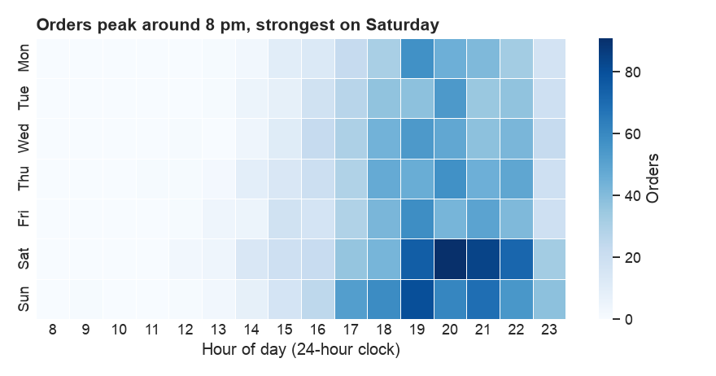
pd.crosstab(weekday, hour) counts how many rows fall in each weekday and hour pair, which is exactly the grid sns.heatmap draws. reindex(columns=range(8, 24), fill_value=0) forces one column for every hour from 8 to 23 (8 am to 11 pm) and fills any hour with no orders with 0, so no column is skipped. The hours are drawn with rng.choice using bell-shaped weights centred on 20. linewidths and linecolor draw the thin white gaps between cells. This hour-by-weekday heat map is the standard answer to "when should we send the notification" or "when should we staff the call centre".
import plotly.express as px
# tbl: rows = weekday, columns = hour (as built above)
fig = px.imshow(tbl, color_continuous_scale="Blues", aspect="auto",
labels=dict(x="Hour of day", y="", color="Orders"), text_auto=True)
fig.update_xaxes(side="bottom")Not run here. px.imshow draws any 2D table as a heat map; text_auto=True prints the value in each cell, and hovering gives "hour, weekday, orders".
All the charts in this section draw the same column, amount in the 300-row orders table. Before the code, here are the numbers, because a good habit is to describe first, draw second.
Answers: "What is the typical value, how wide is the spread, is it lopsided, are there outliers?" A histogram cuts the number line into equal-width bins and draws one bar per bin whose height is the count of values inside. Do not use when: you have fewer than about 30 values (use a dot plot), or you want to compare many groups (use box or violin).
import numpy as np, pandas as pd, matplotlib.pyplot as plt
plt.rcParams.update({"figure.figsize": (8, 4.2), "figure.dpi": 110, "font.size": 12,
"axes.titlesize": 14, "axes.titleweight": "bold", "axes.titlelocation": "left",
"axes.spines.top": False, "axes.spines.right": False})
BLUE, ORANGE, TEAL, RED, PURPLE, GREY = "#2b4fd6", "#b84a22", "#357a70", "#aa2d26", "#6a2fd0", "#9a9a9a"
rng = np.random.default_rng(8)
n = 300
category = rng.choice(["Electronics", "Home", "Fashion", "Grocery"], n, p=[0.2, 0.25, 0.3, 0.25])
mu = pd.Series({"Electronics": 7.4, "Home": 6.8, "Fashion": 6.4, "Grocery": 5.6})[category].to_numpy()
orders = pd.DataFrame({
"date": pd.Timestamp("2025-01-01") + pd.to_timedelta(rng.integers(0, 180, n), unit="D"),
"city": rng.choice(["Delhi", "Mumbai", "Pune"], n, p=[0.40, 0.35, 0.25]),
"category": category,
"channel": rng.choice(["App", "Web"], n, p=[0.6, 0.4]),
"amount": np.round(rng.lognormal(mu, 0.6)).astype(int)})
amt = orders["amount"]
print(amt.describe().round(0).to_string())
print(f"share under Rs 1,000: {(amt < 1000).mean():.0%} | mean {amt.mean():.0f} | median {amt.median():.0f}")
for width in (50, 200, 1000, 3000):
counts, _ = np.histogram(amt, bins=np.arange(0, amt.max() + width, width))
print(f"bin width {width:>4}: {len(counts):>3} bins, tallest bin holds {counts.max()} orders")
fig, ax = plt.subplots()
ax.hist(amt, bins=np.arange(0, 5800, 200), color=BLUE, edgecolor="white")
ax.axvline(amt.median(), color=ORANGE, lw=2.5)
ax.axvline(amt.mean(), color=RED, lw=2.5, ls="--")
ax.annotate(f"median {amt.median():,.0f}", xy=(amt.median(), 54), xytext=(1900, 54), color=ORANGE, va="center",
fontweight="bold", arrowprops=dict(arrowstyle="-", color=ORANGE))
ax.annotate(f"mean {amt.mean():,.0f}", xy=(amt.mean(), 45), xytext=(1900, 45), color=RED, va="center",
fontweight="bold", arrowprops=dict(arrowstyle="-", color=RED))
ax.set_xlabel("Order amount (Rs)"); ax.set_ylabel("Number of orders")
ax.set_title("Most orders are small; a few big ones pull the mean up")
fig.tight_layout()
fig.savefig("ch08v_hist.png", dpi=110)
print("saved")count 300.0
mean 921.0
std 859.0
min 59.0
25% 353.0
50% 695.0
75% 1120.0
max 5470.0
share under Rs 1,000: 69% | mean 921 | median 695
bin width 50: 110 bins, tallest bin holds 19 orders
bin width 200: 28 bins, tallest bin holds 62 orders
bin width 1000: 6 bins, tallest bin holds 208 orders
bin width 3000: 2 bins, tallest bin holds 291 orders
saved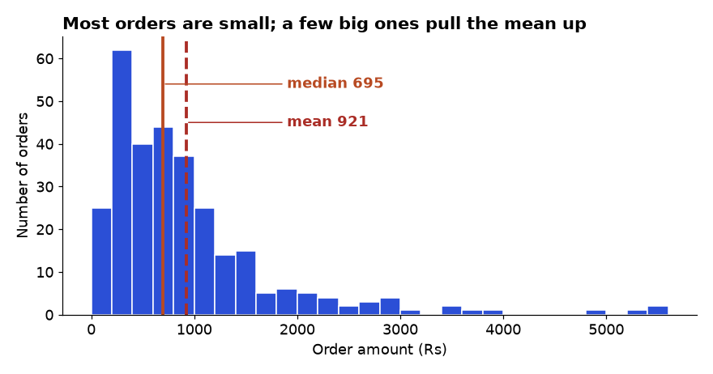
How to read it. Each bar counts orders in a Rs 200 slice. The tall bars are on the left, and a thin tail reaches past Rs 5,000. Half of all orders are under the median of Rs 695, but the mean is Rs 921 because the big orders pull it right. Quote the median (or both) for lopsided money data. The printed bin-width table shows the key trade-off: Rs 50 bins give a ragged picture (110 bins, the tallest holding only 19 orders); Rs 3,000 bins hide the shape (2 bins, 291 of 300 orders in one of them).
amt.describe() gives count, mean, std, min, quartiles (25%, 50% = median, 75%) and max in one call: always run it before drawing.np.histogram(amt, bins=edges) returns the counts per bin; the loop shows how the number of bins explodes as the width shrinks.np.arange(0, 5800, 200) builds the bin edges 0, 200, ..., 5600. Choosing equal-width bins is what lets bar height mean "count".ax.hist(..., edgecolor="white") draws bars with thin white borders so neighbouring bars stay visible.ax.axvline(x) draws a vertical reference line at a value. A dashed line is the mean, a solid one the median.import numpy as np, pandas as pd, matplotlib.pyplot as plt, seaborn as sns
sns.set_theme(style="white", font_scale=1.1, rc={"figure.figsize": (8, 4.2), "figure.dpi": 110,
"axes.titlesize": 14, "axes.titleweight": "bold", "axes.titlelocation": "left",
"axes.spines.top": False, "axes.spines.right": False})
BLUE, ORANGE, TEAL, RED, PURPLE, GREY = "#2b4fd6", "#b84a22", "#357a70", "#aa2d26", "#6a2fd0", "#9a9a9a"
rng = np.random.default_rng(8)
n = 300
category = rng.choice(["Electronics", "Home", "Fashion", "Grocery"], n, p=[0.2, 0.25, 0.3, 0.25])
mu = pd.Series({"Electronics": 7.4, "Home": 6.8, "Fashion": 6.4, "Grocery": 5.6})[category].to_numpy()
orders = pd.DataFrame({
"date": pd.Timestamp("2025-01-01") + pd.to_timedelta(rng.integers(0, 180, n), unit="D"),
"city": rng.choice(["Delhi", "Mumbai", "Pune"], n, p=[0.40, 0.35, 0.25]),
"category": category,
"channel": rng.choice(["App", "Web"], n, p=[0.6, 0.4]),
"amount": np.round(rng.lognormal(mu, 0.6)).astype(int)})
ax = sns.histplot(data=orders, x="amount", hue="channel", hue_order=["App", "Web"], multiple="stack",
binwidth=200, binrange=(0, 5600), palette={"App": BLUE, "Web": ORANGE}, edgecolor="white")
ax.set(xlabel="Order amount (Rs)", ylabel="Number of orders", title="App and Web orders have a similar shape")
sns.move_legend(ax, "upper right", frameon=False, title=None)
ax.figure.tight_layout()
ax.figure.savefig("ch08v_hist_sns.png", dpi=110)
print(orders.groupby("channel")["amount"].agg(["count", "median", "mean"]).round(0).to_string())
print("saved") count median mean
channel
App 188 716.0 961.0
Web 112 640.0 853.0
saved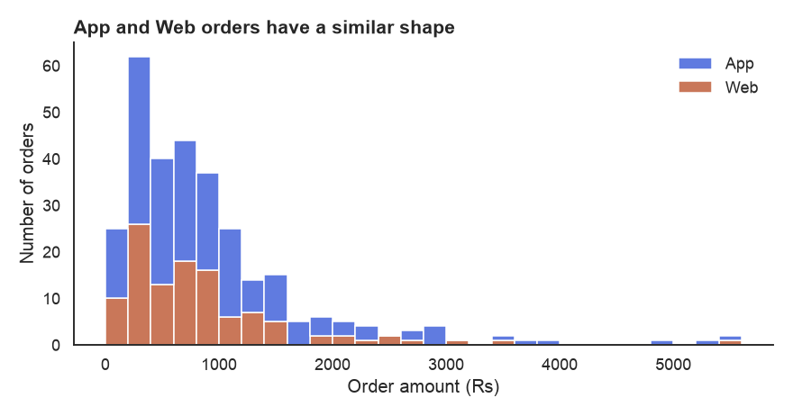
sns.histplot takes the whole DataFrame; hue="channel" splits every bin into two stacked colours and multiple="stack" says how to combine them (other options: "layer" overlaps, "dodge" puts bars side by side, "fill" shows shares). binwidth and binrange fix the bins to match the matplotlib version. Look at the printed table: the Web median is a little lower (Rs 640 against Rs 716 for App) but the two groups overlap heavily, which is the real message: channel changes little about what people spend.
import plotly.express as px
# orders: the DataFrame built above
fig = px.histogram(orders, x="amount", color="channel", nbins=28, barmode="stack",
color_discrete_map={"App": "#2b4fd6", "Web": "#b84a22"},
marginal="box", # a small box plot on top, sharing the x-axis
labels={"amount": "Order amount (Rs)"})
fig.update_layout(title="App and Web orders have a similar shape", bargap=0.05)
fig.add_vline(x=orders["amount"].median(), line_dash="dash", annotation_text="median")Not run here. px.histogram bins and counts for you (nbins is a hint, plotly picks round edges). marginal="box" adds a box plot along the top edge, a cheap way to show two views at once. Hover shows the bin range and count.
plt.hist(x) (10 bins whatever the data). Right: try 3 widths, pick the one where the shape is stable, and report the median beside the mean.There are rules of thumb. Sturges: bins = log2(n) + 1, good for small, bell-shaped data. Freedman-Diaconis: bin width = 2 x IQR / n1/3, which uses the spread of the middle half of the data (IQR = Q3 - Q1) and so copes better with skew. numpy offers them as bins="sturges" and bins="fd".
import numpy as np
rng = np.random.default_rng(8)
amt = np.round(rng.lognormal(6.8, 0.8, 300))
q1, q3 = np.percentile(amt, [25, 75])
iqr = q3 - q1
n = len(amt)
fd_width = 2 * iqr / n ** (1 / 3)
print(f"n={n} Q1={q1:.0f} Q3={q3:.0f} IQR={iqr:.0f}")
print(f"Freedman-Diaconis width = 2 x {iqr:.0f} / {n}^(1/3) = {fd_width:.0f}")
print("Sturges bins:", int(np.ceil(np.log2(n) + 1)))
print("numpy 'fd' bins:", len(np.histogram_bin_edges(amt, bins="fd")) - 1,
"| numpy 'sturges' bins:", len(np.histogram_bin_edges(amt, bins="sturges")) - 1)n=300 Q1=523 Q3=1593 IQR=1070
Freedman-Diaconis width = 2 x 1070 / 300^(1/3) = 320
Sturges bins: 10
numpy 'fd' bins: 22 | numpy 'sturges' bins: 10Check by hand: 300^(1/3) = 6.69, so the width is 2 x IQR / 6.69 = 0.299 x IQR; the printed numbers satisfy that. The rules disagree (Sturges counts bins, FD sets a width), and that is fine: they give a starting point, your eye decides.
Answers: the same question as the histogram, but the smooth curve makes it easy to overlay several groups and compare their shapes. A kernel density estimate (KDE) puts a small bell curve on each data point and adds them up. Do not use when: the data is bounded (the curve spills past the limits, e.g. below Rs 0), has fewer than about 30 values, or you must show exact counts.
import numpy as np, pandas as pd, matplotlib.pyplot as plt
plt.rcParams.update({"figure.figsize": (8, 4.2), "figure.dpi": 110, "font.size": 12,
"axes.titlesize": 14, "axes.titleweight": "bold", "axes.titlelocation": "left",
"axes.spines.top": False, "axes.spines.right": False})
BLUE, ORANGE, TEAL, RED, PURPLE, GREY = "#2b4fd6", "#b84a22", "#357a70", "#aa2d26", "#6a2fd0", "#9a9a9a"
rng = np.random.default_rng(8)
n = 300
category = rng.choice(["Electronics", "Home", "Fashion", "Grocery"], n, p=[0.2, 0.25, 0.3, 0.25])
mu = pd.Series({"Electronics": 7.4, "Home": 6.8, "Fashion": 6.4, "Grocery": 5.6})[category].to_numpy()
orders = pd.DataFrame({
"date": pd.Timestamp("2025-01-01") + pd.to_timedelta(rng.integers(0, 180, n), unit="D"),
"city": rng.choice(["Delhi", "Mumbai", "Pune"], n, p=[0.40, 0.35, 0.25]),
"category": category,
"channel": rng.choice(["App", "Web"], n, p=[0.6, 0.4]),
"amount": np.round(rng.lognormal(mu, 0.6)).astype(int)})
from scipy.stats import gaussian_kde
grid = np.linspace(0, 4500, 400)
colors = {"Electronics": BLUE, "Fashion": ORANGE, "Grocery": PURPLE}
fig, ax = plt.subplots()
for cat, color in colors.items():
x = orders.loc[orders["category"] == cat, "amount"].to_numpy()
dens = gaussian_kde(x)(grid)
ax.plot(grid, dens, color=color, lw=2.5)
ax.fill_between(grid, dens, color=color, alpha=0.12)
peak_x = grid[dens.argmax()]
ax.text(peak_x + 70, dens.max(), f"{cat} (n={len(x)})", color=color, va="bottom", fontweight="bold", fontsize=11)
print(f"{cat:<12} n={len(x):>3} median={np.median(x):>6.0f} curve peaks near Rs {peak_x:.0f}")
ax.set_xlabel("Order amount (Rs)"); ax.set_ylabel("Density"); ax.set_yticks([])
ax.set_title("Grocery orders are small and tight; Electronics are big and varied")
ax.set_xlim(0, 4500)
fig.tight_layout()
fig.savefig("ch08v_kde.png", dpi=110)
print("saved")Electronics n= 60 median= 1668 curve peaks near Rs 1331
Fashion n= 90 median= 609 curve peaks near Rs 496
Grocery n= 69 median= 232 curve peaks near Rs 214
saved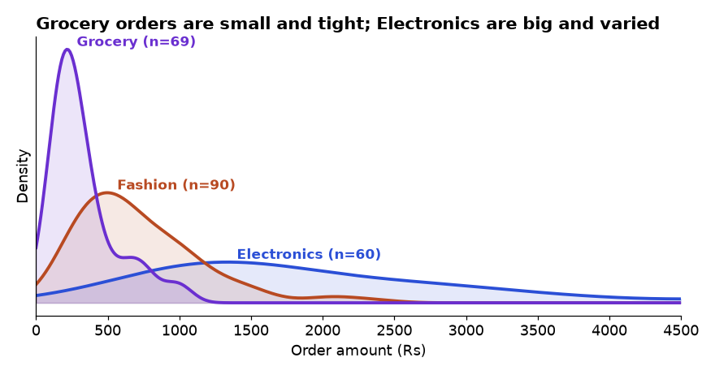
How to read it. Taller and narrower means more orders packed into a small range. Grocery (purple) peaks sharply near Rs 214 because grocery orders are all small. Electronics (blue) is low and wide: order sizes vary a lot. The y-axis has no numbers on purpose; "density" has no business meaning, only the shape matters. Each curve integrates to 1, so a category with few orders is not drawn smaller. The n= in each label keeps you honest about how many orders each curve rests on.
gaussian_kde(x) from scipy builds the estimator from the values; calling it on grid returns the density at 400 evenly spaced points. Its default bandwidth (how wide each little bell is) uses Scott's rule.fill_between(grid, dens, alpha=0.12) shades under each curve lightly. Light fill lets overlapping curves stay readable.grid[dens.argmax()] finds where each curve peaks; the label is placed there, so each curve is named directly.set_yticks([]) hides the density axis because its units are not meaningful to a reader.import numpy as np, pandas as pd, matplotlib.pyplot as plt, seaborn as sns
sns.set_theme(style="white", font_scale=1.1, rc={"figure.figsize": (8, 4.2), "figure.dpi": 110,
"axes.titlesize": 14, "axes.titleweight": "bold", "axes.titlelocation": "left",
"axes.spines.top": False, "axes.spines.right": False})
BLUE, ORANGE, TEAL, RED, PURPLE, GREY = "#2b4fd6", "#b84a22", "#357a70", "#aa2d26", "#6a2fd0", "#9a9a9a"
rng = np.random.default_rng(8)
n = 300
category = rng.choice(["Electronics", "Home", "Fashion", "Grocery"], n, p=[0.2, 0.25, 0.3, 0.25])
mu = pd.Series({"Electronics": 7.4, "Home": 6.8, "Fashion": 6.4, "Grocery": 5.6})[category].to_numpy()
orders = pd.DataFrame({
"date": pd.Timestamp("2025-01-01") + pd.to_timedelta(rng.integers(0, 180, n), unit="D"),
"city": rng.choice(["Delhi", "Mumbai", "Pune"], n, p=[0.40, 0.35, 0.25]),
"category": category,
"channel": rng.choice(["App", "Web"], n, p=[0.6, 0.4]),
"amount": np.round(rng.lognormal(mu, 0.6)).astype(int)})
ax = sns.kdeplot(data=orders[orders["category"] != "Home"], x="amount", hue="category", common_norm=False, cut=0, bw_adjust=1.0,
fill=True, alpha=0.15, linewidth=2.2, palette=[BLUE, ORANGE, PURPLE],
hue_order=["Electronics", "Fashion", "Grocery"])
ax.set(xlim=(0, 4500), yticks=[], ylabel="Density", xlabel="Order amount (Rs)",
title="Grocery orders are small and tight; Electronics are big and varied")
sns.move_legend(ax, "upper right", frameon=False, title=None)
ax.figure.tight_layout()
ax.figure.savefig("ch08v_kde_sns.png", dpi=110)
print("saved")savedSame plot in one call. Two arguments matter: common_norm=False scales each group's curve to area 1 separately (the default True would make big groups taller and small groups flatter), and cut=0 stops the curve at the data's minimum and maximum instead of extending past them (needed for amounts that cannot be negative). bw_adjust multiplies the smoothing: 0.5 for a wigglier curve, 2 for a smoother one. The picture matches the matplotlib one.
import plotly.figure_factory as ff
names = ["Electronics", "Fashion", "Grocery"]
groups = [orders.loc[orders["category"] == c, "amount"] for c in names]
fig = ff.create_distplot(groups, names, show_hist=False, show_rug=False, colors=["#2b4fd6", "#b84a22", "#6a2fd0"])
fig.update_layout(title="Grocery orders are small and tight; Electronics are big and varied")Not run here. plotly has no px.kde; the figure factory create_distplot draws KDE curves (and optionally histograms and a rug of ticks). In plotly Express a violin or a histogram with histnorm="probability density" gives similar information.
Answers: "How do medians and spreads differ between many groups?" A box plot draws the middle half of the data as a box (from Q1, the 25th percentile, to Q3, the 75th), the median as a line, whiskers out to the last point inside 1.5 times the box height (IQR), and dots for anything beyond. A violin draws the KDE shape mirrored around the middle, so it also shows two humps if there are two. Do not use when: a group has fewer than about 10 points (draw the points), or the audience has never met a box plot (explain it once in a caption).
import numpy as np
x = np.array([12, 15, 18, 20, 22, 25, 60])
q1, med, q3 = np.percentile(x, [25, 50, 75])
iqr = q3 - q1
low_fence, high_fence = q1 - 1.5 * iqr, q3 + 1.5 * iqr
inside = x[(x >= low_fence) & (x <= high_fence)]
print(f"Q1={q1} median={med} Q3={q3} IQR={iqr}")
print(f"fences: {low_fence} to {high_fence}")
print(f"whiskers end at {inside.min()} and {inside.max()}; outliers: {x[(x < low_fence) | (x > high_fence)].tolist()}")Q1=16.5 median=20.0 Q3=23.5 IQR=7.0
fences: 6.0 to 34.0
whiskers end at 12 and 25; outliers: [60]Problem 8.5.1 Compute by hand the box plot of the seven values 12, 15, 18, 20, 22, 25, 60.
| Step 1: sort and median | Already sorted. The median is the 4th of 7 values: 20. |
|---|---|
| Step 2: quartiles | numpy's method interpolates: Q1 sits at position 0.25 x (7 - 1) = 1.5 (counting from 0), halfway between 15 and 18, so Q1 = 16.5. Q3 at position 4.5, halfway between 22 and 25, so Q3 = 23.5. |
| Step 3: IQR | 23.5 - 16.5 = 7. |
| Step 4: fences | Low fence = 16.5 - 1.5 x 7 = 6.0. High fence = 23.5 + 10.5 = 34.0. |
| Step 5: whiskers and outliers | The upper whisker stops at the largest value inside the fences: 25. The lower whisker stops at 12. 60 is above 34, so it is plotted as a dot. |
| Check | The block above prints exactly these numbers. |
| Meaning | The "typical" range of the middle half is 16.5 to 23.5, and one value (60) is flagged as unusual. Whiskers are not min and max; they are the last point inside the fences. |
Different tools use slightly different quartile methods (interpolated, exclusive, inclusive), so the same 7 numbers can give Q1 of 15 or 16.5. Pandas and numpy default to the interpolated method shown. Mention the method if it matters.
import numpy as np, pandas as pd, matplotlib.pyplot as plt
plt.rcParams.update({"figure.figsize": (8, 4.2), "figure.dpi": 110, "font.size": 12,
"axes.titlesize": 14, "axes.titleweight": "bold", "axes.titlelocation": "left",
"axes.spines.top": False, "axes.spines.right": False})
BLUE, ORANGE, TEAL, RED, PURPLE, GREY = "#2b4fd6", "#b84a22", "#357a70", "#aa2d26", "#6a2fd0", "#9a9a9a"
rng = np.random.default_rng(8)
n = 300
category = rng.choice(["Electronics", "Home", "Fashion", "Grocery"], n, p=[0.2, 0.25, 0.3, 0.25])
mu = pd.Series({"Electronics": 7.4, "Home": 6.8, "Fashion": 6.4, "Grocery": 5.6})[category].to_numpy()
orders = pd.DataFrame({
"date": pd.Timestamp("2025-01-01") + pd.to_timedelta(rng.integers(0, 180, n), unit="D"),
"city": rng.choice(["Delhi", "Mumbai", "Pune"], n, p=[0.40, 0.35, 0.25]),
"category": category,
"channel": rng.choice(["App", "Web"], n, p=[0.6, 0.4]),
"amount": np.round(rng.lognormal(mu, 0.6)).astype(int)})
order = ["Electronics", "Home", "Fashion", "Grocery"]
colors = [BLUE, TEAL, ORANGE, PURPLE]
data = [np.log10(orders.loc[orders["category"] == c, "amount"]) for c in order]
print(orders.groupby("category")["amount"].median().loc[order].to_string())
ticks = np.log10([100, 300, 1000, 3000]); ticklabels = ["100", "300", "1,000", "3,000"]
fig, (ax1, ax2) = plt.subplots(1, 2, figsize=(9, 4), sharey=True)
bp = ax1.boxplot(data, orientation="horizontal", tick_labels=order, patch_artist=True, widths=0.6,
medianprops=dict(color="white", lw=2.5), flierprops=dict(marker="o", ms=4, mfc="none", mec="#555"))
for patch, color in zip(bp["boxes"], colors): patch.set(facecolor=color, edgecolor=color)
ax1.set_title("Box plot")
vp = ax2.violinplot(data, orientation="horizontal", showmedians=True, showextrema=False)
for body, color in zip(vp["bodies"], colors): body.set(facecolor=color, alpha=0.8)
vp["cmedians"].set(color="white", lw=2.5)
ax2.set_title("Violin plot")
for ax in (ax1, ax2):
ax.set_xticks(ticks, ticklabels); ax.set_xlabel("Order amount (Rs, log scale)")
ax1.invert_yaxis()
fig.tight_layout()
fig.savefig("ch08v_boxviolin.png", dpi=110)
print("saved")category
Electronics 1668.5
Home 783.0
Fashion 609.0
Grocery 232.0
saved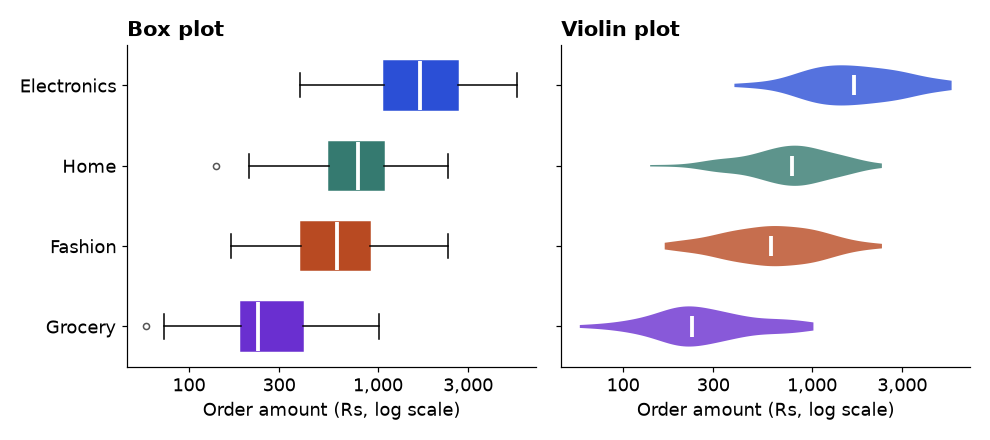
How to read it. Electronics has the highest median (Rs 1,668) and Grocery the lowest (Rs 232); the printed medians give the exact values. The box shows where the middle half of each category sits; circles are individual unusually large or small orders. The violin shows the same ranking and also the shape: all four are single-humped. Axis ticks at 100, 300, 1,000 and 3,000 are spaced evenly because the axis is logarithmic (each step is about times 3).
np.log10(amount) first and relabel the ticks, because money data spans a factor of 100 and the small categories would be squashed on a linear axis. The label trick set_xticks(np.log10([100, ...]), ["100", ...]) keeps the axis readable in rupees.ax.boxplot(data, orientation="horizontal", tick_labels=..., patch_artist=True) takes a list of arrays, one per box. patch_artist=True makes boxes real shapes so they can be coloured. In older matplotlib the arguments are vert=False and labels=.facecolor. medianprops makes the median line white and thick so it stands out from the filled box.ax.violinplot(data, showmedians=True, showextrema=False) draws one KDE shape per array; showextrema=False removes the min and max caps for a cleaner look.sharey=True shares the category axis, so the names are written once; invert_yaxis() puts Electronics at the top.import numpy as np, pandas as pd, matplotlib.pyplot as plt, seaborn as sns
sns.set_theme(style="white", font_scale=1.1, rc={"figure.figsize": (8, 4.2), "figure.dpi": 110,
"axes.titlesize": 14, "axes.titleweight": "bold", "axes.titlelocation": "left",
"axes.spines.top": False, "axes.spines.right": False})
BLUE, ORANGE, TEAL, RED, PURPLE, GREY = "#2b4fd6", "#b84a22", "#357a70", "#aa2d26", "#6a2fd0", "#9a9a9a"
rng = np.random.default_rng(8)
n = 300
category = rng.choice(["Electronics", "Home", "Fashion", "Grocery"], n, p=[0.2, 0.25, 0.3, 0.25])
mu = pd.Series({"Electronics": 7.4, "Home": 6.8, "Fashion": 6.4, "Grocery": 5.6})[category].to_numpy()
orders = pd.DataFrame({
"date": pd.Timestamp("2025-01-01") + pd.to_timedelta(rng.integers(0, 180, n), unit="D"),
"city": rng.choice(["Delhi", "Mumbai", "Pune"], n, p=[0.40, 0.35, 0.25]),
"category": category,
"channel": rng.choice(["App", "Web"], n, p=[0.6, 0.4]),
"amount": np.round(rng.lognormal(mu, 0.6)).astype(int)})
order = ["Electronics", "Home", "Fashion", "Grocery"]
pal = [BLUE, TEAL, ORANGE, PURPLE]
fig, (ax1, ax2) = plt.subplots(1, 2, figsize=(10, 4), sharey=True)
sns.boxplot(data=orders, x="amount", y="category", order=order, hue="category", hue_order=order, palette=pal,
log_scale=True, legend=False, fliersize=3, saturation=1, ax=ax1)
ax1.set(title="Box plot", xlabel="Order amount (Rs, log scale)", ylabel="")
sns.violinplot(data=orders, x="amount", y="category", order=order, hue="category", hue_order=order, palette=pal,
log_scale=True, cut=0, inner="quartile", legend=False, saturation=1, ax=ax2)
sns.stripplot(data=orders, x="amount", y="category", order=order, color="black", size=2, alpha=0.35, ax=ax2)
ax2.set(title="Violin + every order", xlabel="Order amount (Rs, log scale)", ylabel="")
for ax in (ax1, ax2):
ax.set_xticks([100, 300, 1000, 3000], ["100", "300", "1,000", "3,000"]); ax.minorticks_off()
fig.tight_layout()
fig.savefig("ch08v_boxviolin_sns.png", dpi=110)
print(orders.groupby("category")["amount"].describe()[["count", "25%", "50%", "75%"]].round(0).loc[order].to_string())
print("saved") count 25% 50% 75%
category
Electronics 60.0 1080.0 1668.0 2638.0
Home 81.0 549.0 783.0 1073.0
Fashion 90.0 392.0 609.0 910.0
Grocery 69.0 189.0 232.0 402.0
saved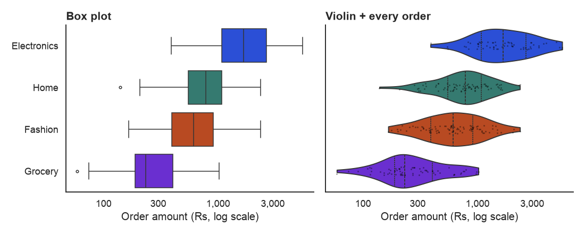
seaborn does the log axis (log_scale=True), the colours (hue plus palette) and the tidy-table lookup for you. inner="quartile" draws the three quartile lines inside each violin. The black dots (sns.stripplot) overlay all 300 raw points, a good habit: it shows the sample size (Fashion has 90 orders, Electronics only 60) so a viewer does not mistake a smooth shape for a lot of data. saturation=1 keeps the exact palette colours (seaborn dims them to 75% by default).
import plotly.express as px
fig = px.box(orders, x="amount", y="category", color="category", log_x=True, points="outliers",
category_orders={"category": ["Electronics", "Home", "Fashion", "Grocery"]},
color_discrete_sequence=["#2b4fd6", "#357a70", "#b84a22", "#6a2fd0"])
fig.update_layout(showlegend=False, xaxis_title="Order amount (Rs, log scale)")
# the violin version: px.violin(orders, x="amount", y="category", box=True, points="all", log_x=True)Not run here. Hovering a plotly box shows min, Q1, median, Q3, max and the fences, which is the best way to teach a box plot. px.violin(..., box=True, points="all") gives violin, inner box and every point at once.
orders.groupby("category")["amount"].mean().plot.bar() as the only view. Right: box or violin, or bars with the median and the points visible.Skew: if the median line sits near one end of the box or the upper whisker is much longer than the lower, the data is skewed. Bimodality (two humps) is invisible in a box plot and obvious in a violin or KDE, so when in doubt about the shape, draw the violin or histogram first and the box plot second. For very large groups, the letter-value (boxen) plot, sns.boxenplot, draws more quantile boxes and handles the extra tail data better than the 1.5 x IQR rule, which flags many points as outliers once n is large.
Several entries use a 52-week marketing table (weekly): advertising spend, site visits, orders, average discount, revenue and returns, made with a fixed seed so every reader gets the same numbers. It is synthetic; the relationships were built in so you can check that the charts find them.
Answers: "Is there a relationship between X and Y, how strong, are there outliers or clusters?" Do not use when: one axis is a category (use box or strip), or you have millions of points (use hexbin or a density plot; see the performance note in 8.13). Remember: a pattern is a question, not an explanation. Correlation is not causation.
import numpy as np, pandas as pd, matplotlib.pyplot as plt
plt.rcParams.update({"figure.figsize": (8, 4.2), "figure.dpi": 110, "font.size": 12,
"axes.titlesize": 14, "axes.titleweight": "bold", "axes.titlelocation": "left",
"axes.spines.top": False, "axes.spines.right": False})
BLUE, ORANGE, TEAL, RED, PURPLE, GREY = "#2b4fd6", "#b84a22", "#357a70", "#aa2d26", "#6a2fd0", "#9a9a9a"
rng = np.random.default_rng(8)
n = 52
ad_spend = rng.uniform(20, 100, n).round(1) # Rs thousand per week
visits = (900 + 25 * ad_spend + rng.normal(0, 250, n)).round()
discount = rng.uniform(0, 25, n).round(1) # average discount, %
orders_n = (0.05 * visits + 0.6 * discount + rng.normal(0, 8, n)).round()
revenue_k = (0.9 * orders_n * (1 - discount / 200) + rng.normal(0, 4, n)).round(1)
returns = (0.04 * orders_n + 0.25 * discount + rng.normal(0, 2, n)).round().clip(0)
weekly = pd.DataFrame({"ad_spend": ad_spend, "visits": visits, "discount": discount,
"orders": orders_n, "revenue_k": revenue_k, "returns": returns})
r = np.corrcoef(weekly["ad_spend"], weekly["revenue_k"])[0, 1]
slope, intercept = np.polyfit(weekly["ad_spend"], weekly["revenue_k"], 1)
print(f"r = {r:.2f} revenue = {intercept:.1f} + {slope:.2f} x ad_spend r squared = {r ** 2:.2f}")
resid = weekly["revenue_k"] - (intercept + slope * weekly["ad_spend"])
worst = resid.abs().idxmax()
print(f"biggest miss: week {worst}, ad spend {weekly.loc[worst, 'ad_spend']}, revenue {weekly.loc[worst, 'revenue_k']}, "
f"expected {intercept + slope * weekly.loc[worst, 'ad_spend']:.1f}")
fig, ax = plt.subplots()
ax.scatter(weekly["ad_spend"], weekly["revenue_k"], s=45, color=BLUE, alpha=0.75, edgecolor="white", linewidth=0.8)
xs = np.array([weekly["ad_spend"].min(), weekly["ad_spend"].max()])
ax.plot(xs, intercept + slope * xs, color=ORANGE, lw=2.5)
ax.annotate(f"week {worst}", xy=(weekly.loc[worst, "ad_spend"], weekly.loc[worst, "revenue_k"]),
xytext=(weekly.loc[worst, "ad_spend"] + 14, weekly.loc[worst, "revenue_k"] - 10),
arrowprops=dict(arrowstyle="->", color="#333"))
ax.text(24, 155, f"r = {r:.2f}\n+Rs {slope:.1f}k revenue per Rs 1k ads", color=ORANGE, fontweight="bold", va="top")
ax.set_xlabel("Weekly ad spend (Rs thousand)"); ax.set_ylabel("Weekly revenue (Rs thousand)")
ax.set_title("Weeks with more ad spend had more revenue")
fig.tight_layout()
fig.savefig("ch08v_scatter.png", dpi=110)
print("saved")r = 0.85 revenue = 48.3 + 1.01 x ad_spend r squared = 0.73
biggest miss: week 49, ad spend 42.1, revenue 60.4, expected 90.9
saved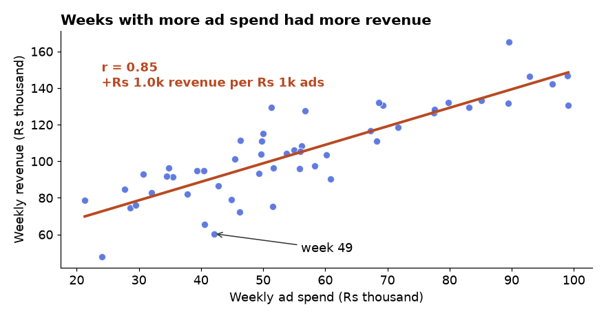
How to read it. The cloud climbs from lower left to upper right: more spend, more revenue. The trend line says about Rs 1.0k more revenue per Rs 1k extra spend, and r = 0.85 means the line is a good summary (r squared = 0.73, i.e. spend explains about 73% of the variation in weekly revenue in this sample). The annotated dot is the week that missed the line by the most. This chart shows association, not proof that ads cause revenue: seasonality or promotions could drive both.
np.corrcoef(x, y)[0, 1] returns Pearson's r, a number between -1 and 1 for how closely the points follow a straight line.np.polyfit(x, y, 1) fits a straight line (degree 1) and returns the slope and intercept; the line is drawn between the minimum and maximum x.ax.scatter(..., s=45, alpha=0.75, edgecolor="white") draws dots. alpha makes them see-through so overlapping dots darken, and the white edge separates close ones.resid.abs().idxmax() picks the row with the largest gap from the line; the annotation labels it, because a reader's first question is "what is that dot?"import numpy as np, pandas as pd, matplotlib.pyplot as plt, seaborn as sns
sns.set_theme(style="white", font_scale=1.1, rc={"figure.figsize": (8, 4.2), "figure.dpi": 110,
"axes.titlesize": 14, "axes.titleweight": "bold", "axes.titlelocation": "left",
"axes.spines.top": False, "axes.spines.right": False})
BLUE, ORANGE, TEAL, RED, PURPLE, GREY = "#2b4fd6", "#b84a22", "#357a70", "#aa2d26", "#6a2fd0", "#9a9a9a"
rng = np.random.default_rng(8)
n = 52
ad_spend = rng.uniform(20, 100, n).round(1) # Rs thousand per week
visits = (900 + 25 * ad_spend + rng.normal(0, 250, n)).round()
discount = rng.uniform(0, 25, n).round(1) # average discount, %
orders_n = (0.05 * visits + 0.6 * discount + rng.normal(0, 8, n)).round()
revenue_k = (0.9 * orders_n * (1 - discount / 200) + rng.normal(0, 4, n)).round(1)
returns = (0.04 * orders_n + 0.25 * discount + rng.normal(0, 2, n)).round().clip(0)
weekly = pd.DataFrame({"ad_spend": ad_spend, "visits": visits, "discount": discount,
"orders": orders_n, "revenue_k": revenue_k, "returns": returns})
weekly["season"] = np.where(weekly["discount"] > 12.5, "High discount", "Low discount")
ax = sns.scatterplot(data=weekly, x="ad_spend", y="revenue_k", hue="season", style="season",
palette={"High discount": ORANGE, "Low discount": BLUE}, s=60)
sns.regplot(data=weekly, x="ad_spend", y="revenue_k", scatter=False, color="#444", ci=95, line_kws={"lw": 2})
ax.set(xlabel="Weekly ad spend (Rs thousand)", ylabel="Weekly revenue (Rs thousand)",
title="Revenue rises with ad spend in both discount groups")
sns.move_legend(ax, "lower right", frameon=False, title=None)
ax.figure.tight_layout()
ax.figure.savefig("ch08v_scatter_sns.png", dpi=110)
print(weekly.groupby("season")[["ad_spend", "revenue_k"]].mean().round(1).to_string())
print("saved") ad_spend revenue_k
season
High discount 58.1 108.3
Low discount 53.1 100.3
saved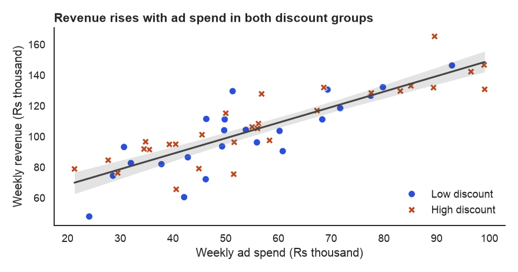
Two seaborn calls give three extra things. hue and style encode a third variable (discount level) with colour and marker shape, so the plot still works in greyscale or for a colour-blind reader. sns.regplot(scatter=False, ci=95) adds the fitted line with a shaded 95% confidence band: the range of lines the data supports. Use sns.lmplot if you want one fitted line per group (it is a figure-level function; see 8.8).
import plotly.express as px
fig = px.scatter(weekly, x="ad_spend", y="revenue_k", color="season", symbol="season",
trendline="ols", hover_data=["visits", "orders"], # trendline needs statsmodels installed
color_discrete_map={"High discount": "#b84a22", "Low discount": "#2b4fd6"},
labels={"ad_spend": "Weekly ad spend (Rs thousand)", "revenue_k": "Weekly revenue (Rs thousand)"})Not run here. Every dot has a tooltip, and hover_data adds more columns to it, so you can ask "which week is this?" by pointing. trendline="ols" draws one fitted line per colour group (it needs the statsmodels package). You can zoom into a cluster with a drag.
Answers: "Where does each item sit on two measures, and how big is it on a third?" Do not use when: the size variable is the main message (use a bar), or more than about 15 bubbles overlap. Make the bubble area proportional to the value, never the radius, and label the bubbles directly.
import numpy as np, pandas as pd, matplotlib.pyplot as plt
plt.rcParams.update({"figure.figsize": (8, 4.2), "figure.dpi": 110, "font.size": 12,
"axes.titlesize": 14, "axes.titleweight": "bold", "axes.titlelocation": "left",
"axes.spines.top": False, "axes.spines.right": False})
BLUE, ORANGE, TEAL, RED, PURPLE, GREY = "#2b4fd6", "#b84a22", "#357a70", "#aa2d26", "#6a2fd0", "#9a9a9a"
price = pd.Series({"Wireless earbuds": 2500, "Smart watch": 4500, "Air fryer": 3500, "Yoga mat": 800, "Backpack": 1200,
"Desk lamp": 900, "Water bottle": 400, "Phone case": 300, "Notebook": 150, "Pen set": 120})
revenue_k = pd.Series({"Wireless earbuds": 412, "Smart watch": 388, "Air fryer": 301, "Yoga mat": 187, "Backpack": 176,
"Desk lamp": 152, "Water bottle": 129, "Phone case": 96, "Notebook": 64, "Pen set": 41})
units = (revenue_k * 1000 / price).round().astype(int)
df = pd.DataFrame({"price": price, "units": units, "revenue_k": revenue_k})
print(df.sort_values("revenue_k", ascending=False).head(4).to_string())
fig, ax = plt.subplots(figsize=(8, 4.6))
ax.scatter(df["price"], df["units"], s=df["revenue_k"] * 5, color=BLUE, alpha=0.55, edgecolor="white", linewidth=1.5)
offsets = {"Wireless earbuds": (-8, 46), "Smart watch": (22, 44), "Air fryer": (-26, 42), "Yoga mat": (0, 28),
"Backpack": (0, -34), "Desk lamp": (30, 26), "Water bottle": (0, 24), "Phone case": (40, -14),
"Notebook": (0, 22), "Pen set": (0, -28)}
for name, (dx, dy) in offsets.items():
ax.annotate(name, (df.loc[name, "price"], df.loc[name, "units"]), xytext=(dx, dy), textcoords="offset points",
ha="center", va="center", fontsize=10)
ax.set_xscale("log"); ax.set_xlim(80, 7000)
ax.set_xticks([100, 300, 1000, 3000], ["100", "300", "1,000", "3,000"])
ax.set_ylim(0, 520)
ax.set_xlabel("Unit price (Rs, log scale)"); ax.set_ylabel("Units sold")
ax.set_title("Cheap items sell most units; pricey ones earn most revenue")
ax.text(0.99, 0.97, "bubble area = revenue", transform=ax.transAxes, ha="right", va="top", color="#555")
fig.tight_layout()
fig.savefig("ch08v_bubble.png", dpi=110)
print("saved") price units revenue_k
Wireless earbuds 2500 165 412
Smart watch 4500 86 388
Air fryer 3500 86 301
Yoga mat 800 234 187
saved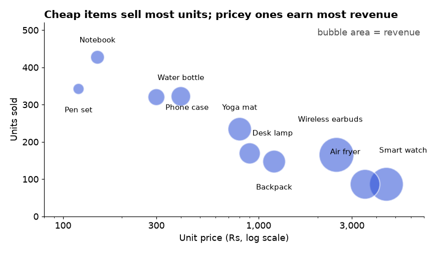
How to read it. Left side: cheap items (pen set, notebook, phone case) sell hundreds of units but make small bubbles. Right side: the earbuds, smart watch and air fryer sell only 86 to 165 units but have the biggest bubbles, because price times units is large. Each bubble's area is proportional to revenue (the table prints the top four).
units = (revenue_k * 1000 / price).round() derives units from revenue and price (revenue = price times units).s=df["revenue_k"] * 5 sets marker area in points squared. Because s is already an area, passing the value directly makes area proportional to revenue: the right encoding.ax.annotate(name, xy, xytext=(dx, dy), textcoords="offset points") writes the name at a small offset from the bubble, in points, so labels stay readable whatever the axis scale. The offsets dictionary is hand-tuned to avoid overlaps, which is normal for a final chart.set_xscale("log") spreads prices from 120 to 4,500 evenly; on a linear axis the cheap items would pile up at the left.import numpy as np, pandas as pd, matplotlib.pyplot as plt, seaborn as sns
sns.set_theme(style="white", font_scale=1.1, rc={"figure.figsize": (8, 4.2), "figure.dpi": 110,
"axes.titlesize": 14, "axes.titleweight": "bold", "axes.titlelocation": "left",
"axes.spines.top": False, "axes.spines.right": False})
BLUE, ORANGE, TEAL, RED, PURPLE, GREY = "#2b4fd6", "#b84a22", "#357a70", "#aa2d26", "#6a2fd0", "#9a9a9a"
price = pd.Series({"Wireless earbuds": 2500, "Smart watch": 4500, "Air fryer": 3500, "Yoga mat": 800, "Backpack": 1200,
"Desk lamp": 900, "Water bottle": 400, "Phone case": 300, "Notebook": 150, "Pen set": 120})
revenue_k = pd.Series({"Wireless earbuds": 412, "Smart watch": 388, "Air fryer": 301, "Yoga mat": 187, "Backpack": 176,
"Desk lamp": 152, "Water bottle": 129, "Phone case": 96, "Notebook": 64, "Pen set": 41})
df = pd.DataFrame({"price": price, "revenue_k": revenue_k})
df["units"] = (df["revenue_k"] * 1000 / df["price"]).round().astype(int)
ax = sns.scatterplot(data=df, x="price", y="units", size="revenue_k", sizes=(60, 1800), color=BLUE, alpha=0.55,
legend="brief")
ax.set(xscale="log", xlabel="Unit price (Rs, log scale)", ylabel="Units sold", title="Cheap items sell most units")
sns.move_legend(ax, "upper right", title="Revenue (Rs thousand)", frameon=False, labelspacing=1.4)
ax.figure.tight_layout()
ax.figure.savefig("ch08v_bubble_sns.png", dpi=110)
print(df.loc[["Smart watch", "Pen set"]].to_string())
print("saved") price revenue_k units
Smart watch 4500 388 86
Pen set 120 41 342
savedsize="revenue_k", sizes=(60, 1800) tells seaborn which column drives the bubble size and the smallest and largest marker area. seaborn scales area linearly between those limits by default, so area stays honest, and it builds a size legend for you. (It does not draw name labels; use ax.annotate as above.) The picture is like the matplotlib one, with a size key.
import plotly.express as px
fig = px.scatter(df.reset_index(names="product"), x="price", y="units", size="revenue_k", text="product",
log_x=True, size_max=55, labels={"price": "Unit price (Rs, log scale)", "units": "Units sold"})
fig.update_traces(marker=dict(color="#2b4fd6", opacity=0.55), textposition="top center")Not run here. size= in plotly Express scales bubble area by default (sizemode="area"), and size_max sets the biggest bubble's pixel size. Hovering shows product, price, units and revenue. Animated bubble charts over time (animation_frame="year") are the famous gapminder-style demo; see 8.9.
Answers: "Which combinations of two categories are high or low?" Do not use when: you need exact comparisons without numbers in the cells, or there are more than about 15 by 15 cells. Colour is the weakest encoding (8.1), so write the number in each cell and choose a sequential palette for one-directional values.
import numpy as np, pandas as pd, matplotlib.pyplot as plt
plt.rcParams.update({"figure.figsize": (8, 4.2), "figure.dpi": 110, "font.size": 12,
"axes.titlesize": 14, "axes.titleweight": "bold", "axes.titlelocation": "left",
"axes.spines.top": False, "axes.spines.right": False})
BLUE, ORANGE, TEAL, RED, PURPLE, GREY = "#2b4fd6", "#b84a22", "#357a70", "#aa2d26", "#6a2fd0", "#9a9a9a"
rng = np.random.default_rng(8)
n = 300
category = rng.choice(["Electronics", "Home", "Fashion", "Grocery"], n, p=[0.2, 0.25, 0.3, 0.25])
mu = pd.Series({"Electronics": 7.4, "Home": 6.8, "Fashion": 6.4, "Grocery": 5.6})[category].to_numpy()
orders = pd.DataFrame({
"date": pd.Timestamp("2025-01-01") + pd.to_timedelta(rng.integers(0, 180, n), unit="D"),
"city": rng.choice(["Delhi", "Mumbai", "Pune"], n, p=[0.40, 0.35, 0.25]),
"category": category,
"channel": rng.choice(["App", "Web"], n, p=[0.6, 0.4]),
"amount": np.round(rng.lognormal(mu, 0.6)).astype(int)})
order = ["Electronics", "Home", "Fashion", "Grocery"]
grid = orders.pivot_table(index="category", columns="city", values="amount", aggfunc="mean").loc[order, ["Delhi", "Mumbai", "Pune"]].round(0)
print(grid.to_string())
fig, ax = plt.subplots(figsize=(7, 4))
im = ax.imshow(grid.values, cmap="Blues", vmin=0, vmax=2500)
ax.set_xticks(range(3), grid.columns); ax.set_yticks(range(4), grid.index)
ax.xaxis.tick_top(); ax.tick_params(length=0)
for i in range(grid.shape[0]):
for j in range(grid.shape[1]):
v = grid.values[i, j]
ax.text(j, i, f"{v:,.0f}", ha="center", va="center", fontsize=13, fontweight="bold",
color="white" if v > 1250 else "#222")
for s in ax.spines.values(): s.set_visible(False)
cb = fig.colorbar(im, ax=ax, shrink=0.85); cb.set_label("Average order (Rs)")
fig.suptitle("Electronics orders are biggest in Delhi and Mumbai", x=0.02, ha="left", fontweight="bold", fontsize=14)
fig.tight_layout()
fig.savefig("ch08v_heatmap.png", dpi=110)
print("saved")city Delhi Mumbai Pune
category
Electronics 2129.0 2138.0 1482.0
Home 839.0 812.0 992.0
Fashion 777.0 719.0 633.0
Grocery 338.0 336.0 309.0
saved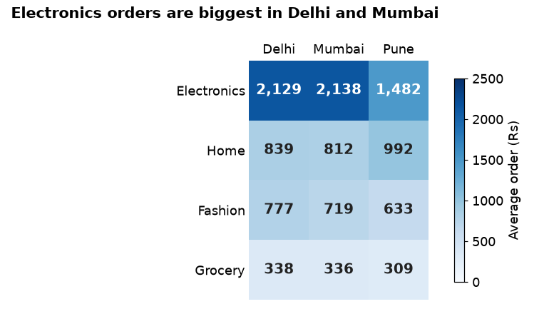
How to read it. Rows are categories, columns are cities, colour is the average order. The darkest cells are Electronics in Delhi and Mumbai (Rs 2,129 and Rs 2,138, nearly the same); Pune Electronics is lower at Rs 1,482, while Pune Home is the highest Home cell (Rs 992). The lightest row is Grocery everywhere (about Rs 300 to 340). The write-in numbers are the reliable part; colour gives the quick pattern.
pivot_table(..., aggfunc="mean").loc[rows, cols] builds the grid in the order you want; the order of rows and columns is part of the message.ax.imshow(grid.values, cmap="Blues", vmin=0, vmax=2500) turns a 2D array into coloured squares. Fixing vmin and vmax pins the colour scale, so two charts can be compared fairly.v > 1250) and stays dark on light ones: always check contrast.ax.xaxis.tick_top() puts column names on top, like a table. fig.suptitle(..., x=0.02, ha="left") writes the title across the whole figure width, so a long headline is not clipped by the narrow heat map.import numpy as np, pandas as pd, matplotlib.pyplot as plt, seaborn as sns
sns.set_theme(style="white", font_scale=1.1, rc={"figure.figsize": (8, 4.2), "figure.dpi": 110,
"axes.titlesize": 14, "axes.titleweight": "bold", "axes.titlelocation": "left",
"axes.spines.top": False, "axes.spines.right": False})
BLUE, ORANGE, TEAL, RED, PURPLE, GREY = "#2b4fd6", "#b84a22", "#357a70", "#aa2d26", "#6a2fd0", "#9a9a9a"
rng = np.random.default_rng(8)
n = 300
category = rng.choice(["Electronics", "Home", "Fashion", "Grocery"], n, p=[0.2, 0.25, 0.3, 0.25])
mu = pd.Series({"Electronics": 7.4, "Home": 6.8, "Fashion": 6.4, "Grocery": 5.6})[category].to_numpy()
orders = pd.DataFrame({
"date": pd.Timestamp("2025-01-01") + pd.to_timedelta(rng.integers(0, 180, n), unit="D"),
"city": rng.choice(["Delhi", "Mumbai", "Pune"], n, p=[0.40, 0.35, 0.25]),
"category": category,
"channel": rng.choice(["App", "Web"], n, p=[0.6, 0.4]),
"amount": np.round(rng.lognormal(mu, 0.6)).astype(int)})
order = ["Electronics", "Home", "Fashion", "Grocery"]
grid = orders.pivot_table(index="category", columns="city", values="amount", aggfunc="mean").loc[order, ["Delhi", "Mumbai", "Pune"]]
ax = sns.heatmap(grid, annot=True, fmt=",.0f", cmap="Blues", vmin=0, vmax=2500, linewidths=1, linecolor="white",
annot_kws={"fontsize": 13, "fontweight": "bold"}, cbar_kws={"label": "Average order (Rs)"})
ax.set(xlabel="", ylabel="")
ax.figure.suptitle("Electronics orders are biggest in Delhi and Mumbai", x=0.02, ha="left", fontweight="bold", fontsize=14, y=1.03)
ax.xaxis.tick_top(); ax.tick_params(length=0)
ax.figure.savefig("ch08v_heatmap_sns.png", dpi=110, bbox_inches="tight")
print(grid.round(0).loc["Electronics"].to_string())
print("saved")city
Delhi 2129.0
Mumbai 2138.0
Pune 1482.0
savedThe whole nested loop collapses to annot=True, fmt=",.0f". seaborn also switches the text colour for contrast automatically. The result matches the matplotlib heat map above. sns.heatmap expects a DataFrame: rows and columns come from its index and column names.
import plotly.express as px
fig = px.imshow(grid, text_auto=",.0f", color_continuous_scale="Blues", zmin=0, zmax=2500,
labels=dict(color="Average order (Rs)"))
fig.update_xaxes(side="top")
fig.update_layout(title="Electronics orders are biggest in Delhi and Mumbai")Not run here. One call, with the value in each cell (text_auto) and a hover tooltip. If your data is in long form, px.density_heatmap bins and counts for you.
Answers: "Which of these numeric columns move together?" Each cell is Pearson's r between two columns. Do not use when: variables are categories, relationships are curved (r only sees straight lines), or you have hundreds of columns (cluster first). Use a diverging palette centred on 0 and show each pair once.
import numpy as np, pandas as pd, matplotlib.pyplot as plt, seaborn as sns
sns.set_theme(style="white", font_scale=1.1, rc={"figure.figsize": (8, 4.2), "figure.dpi": 110,
"axes.titlesize": 14, "axes.titleweight": "bold", "axes.titlelocation": "left",
"axes.spines.top": False, "axes.spines.right": False})
BLUE, ORANGE, TEAL, RED, PURPLE, GREY = "#2b4fd6", "#b84a22", "#357a70", "#aa2d26", "#6a2fd0", "#9a9a9a"
rng = np.random.default_rng(8)
n = 52
ad_spend = rng.uniform(20, 100, n).round(1) # Rs thousand per week
visits = (900 + 25 * ad_spend + rng.normal(0, 250, n)).round()
discount = rng.uniform(0, 25, n).round(1) # average discount, %
orders_n = (0.05 * visits + 0.6 * discount + rng.normal(0, 8, n)).round()
revenue_k = (0.9 * orders_n * (1 - discount / 200) + rng.normal(0, 4, n)).round(1)
returns = (0.04 * orders_n + 0.25 * discount + rng.normal(0, 2, n)).round().clip(0)
weekly = pd.DataFrame({"ad_spend": ad_spend, "visits": visits, "discount": discount,
"orders": orders_n, "revenue_k": revenue_k, "returns": returns})
corr = weekly.corr().round(2)
print(corr.to_string())
mask = np.triu(np.ones_like(corr, dtype=bool), k=1) # hide the mirror-image upper triangle
ax = sns.heatmap(corr, mask=mask, annot=True, fmt=".2f", cmap="RdBu_r", vmin=-1, vmax=1, center=0,
square=True, linewidths=1, linecolor="white", cbar_kws={"label": "Correlation (r)", "shrink": 0.8})
ax.set(title="Visits and orders move with revenue; discount links to returns")
ax.tick_params(length=0)
plt.setp(ax.get_xticklabels(), rotation=30, ha="right")
ax.figure.savefig("ch08v_corr_sns.png", dpi=110, bbox_inches="tight")
print("saved") ad_spend visits discount orders revenue_k returns
ad_spend 1.00 0.88 0.12 0.85 0.85 0.39
visits 0.88 1.00 0.08 0.93 0.93 0.38
discount 0.12 0.08 1.00 0.31 0.12 0.72
orders 0.85 0.93 0.31 1.00 0.97 0.56
revenue_k 0.85 0.93 0.12 0.97 1.00 0.44
returns 0.39 0.38 0.72 0.56 0.44 1.00
saved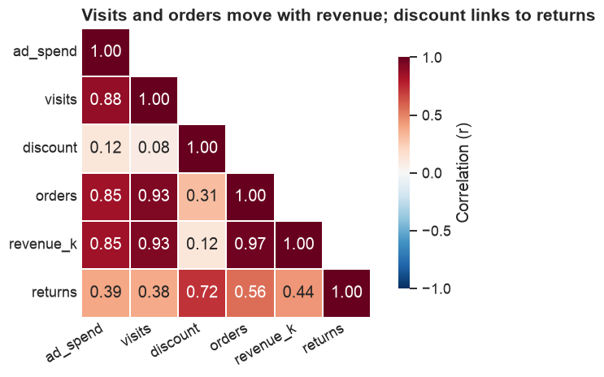
How to read it. The diagonal is 1 (each column with itself). Orders and revenue: r = 0.97, almost a straight line. Visits and orders: 0.93. The discount is nearly unrelated to revenue (0.12) but strongly related to returns (0.72): in this data, deep-discount weeks bring more returns. That last finding is the kind of thing a correlation matrix is for: you did not ask for it, it showed up.
weekly.corr() computes Pearson r for every pair of numeric columns. The result is a symmetric 6 by 6 table.np.triu(np.ones_like(corr, dtype=bool), k=1) builds a True mask for the cells above the diagonal. mask=mask hides them, since r(A,B) = r(B,A). Half the ink, no information lost.cmap="RdBu_r", vmin=-1, vmax=1, center=0: a diverging palette whose middle (white) is exactly 0. Without center and the limits, white could land on a non-zero value and mislead.square=True keeps cells square; rotate the x labels so the names do not collide.import numpy as np, pandas as pd, matplotlib.pyplot as plt
plt.rcParams.update({"figure.figsize": (8, 4.2), "figure.dpi": 110, "font.size": 12,
"axes.titlesize": 14, "axes.titleweight": "bold", "axes.titlelocation": "left",
"axes.spines.top": False, "axes.spines.right": False})
BLUE, ORANGE, TEAL, RED, PURPLE, GREY = "#2b4fd6", "#b84a22", "#357a70", "#aa2d26", "#6a2fd0", "#9a9a9a"
rng = np.random.default_rng(8)
n = 52
ad_spend = rng.uniform(20, 100, n).round(1) # Rs thousand per week
visits = (900 + 25 * ad_spend + rng.normal(0, 250, n)).round()
discount = rng.uniform(0, 25, n).round(1) # average discount, %
orders_n = (0.05 * visits + 0.6 * discount + rng.normal(0, 8, n)).round()
revenue_k = (0.9 * orders_n * (1 - discount / 200) + rng.normal(0, 4, n)).round(1)
returns = (0.04 * orders_n + 0.25 * discount + rng.normal(0, 2, n)).round().clip(0)
weekly = pd.DataFrame({"ad_spend": ad_spend, "visits": visits, "discount": discount,
"orders": orders_n, "revenue_k": revenue_k, "returns": returns})
corr = weekly.corr()
labels = corr.columns.tolist()
fig, ax = plt.subplots(figsize=(6.4, 5.4))
im = ax.imshow(corr.values, cmap="RdBu_r", vmin=-1, vmax=1)
ax.set_xticks(range(len(labels)), labels, rotation=30, ha="right"); ax.set_yticks(range(len(labels)), labels)
for i in range(len(labels)):
for j in range(len(labels)):
ax.text(j, i, f"{corr.values[i, j]:.2f}", ha="center", va="center", fontsize=10,
color="white" if abs(corr.values[i, j]) > 0.6 else "#222")
fig.colorbar(im, ax=ax, shrink=0.8, label="Correlation (r)")
ax.set_title("Correlation matrix")
fig.tight_layout()
fig.savefig("ch08v_corr_mpl.png", dpi=110)
print("strongest pair:", corr.where(~np.eye(6, dtype=bool)).abs().stack().idxmax())
print("saved")strongest pair: ('orders', 'revenue_k')
savedmatplotlib needs a loop for the numbers, but the logic is the same: imshow with a diverging colormap and fixed limits of -1 and 1. The printed line finds the strongest pair by hiding the diagonal (np.eye) and taking the largest absolute value; the pair order in the tuple is arbitrary.
import plotly.express as px
fig = px.imshow(weekly.corr().round(2), text_auto=True, zmin=-1, zmax=1, color_continuous_scale="RdBu_r",
aspect="equal", title="Visits and orders move with revenue; discount links to returns")Not run here. For a matrix of scatter plots (the next step after a correlation matrix), px.scatter_matrix(weekly) in plotly and sns.pairplot(weekly) in seaborn (8.8) draw every pair as dots.
Answers: "Of the customers who joined in month X, what share was still active k months later?" Rows are cohorts (the join month), columns are months since joining, cells are retention percentages. Read down a column to see whether newer cohorts do better. Do not use when: cohorts are tiny (percentages jump around) or you only want one average curve. Chapter 12 shows how to build the cohort table with SQL and pandas.
import numpy as np, pandas as pd, matplotlib.pyplot as plt, seaborn as sns
sns.set_theme(style="white", font_scale=1.1, rc={"figure.figsize": (8, 4.2), "figure.dpi": 110,
"axes.titlesize": 14, "axes.titleweight": "bold", "axes.titlelocation": "left",
"axes.spines.top": False, "axes.spines.right": False})
BLUE, ORANGE, TEAL, RED, PURPLE, GREY = "#2b4fd6", "#b84a22", "#357a70", "#aa2d26", "#6a2fd0", "#9a9a9a"
rng = np.random.default_rng(8)
cohorts = ["Jan", "Feb", "Mar", "Apr", "May", "Jun"]
size = [520, 560, 610, 580, 640, 700]
base = np.array([1.0, 0.46, 0.36, 0.31, 0.28, 0.26])
rows = []
for i in range(6):
r = base.copy()
r[1:] = np.clip(r[1:] * (1 + 0.04 * i) + rng.normal(0, 0.012, 5), 0, 1) # later cohorts retain a bit better
r = np.concatenate([r[: 6 - i], np.full(i, np.nan)]) # months not observed yet stay empty
rows.append(r)
ret = pd.DataFrame(rows, index=[f"{c} (n={n})" for c, n in zip(cohorts, size)], columns=[f"M{k}" for k in range(6)])
print((ret * 100).round(0).to_string(na_rep="-"))
m1 = ret["M1"]
ax = sns.heatmap(ret.drop(columns="M0") * 100, annot=True, fmt=".0f", cmap="Blues", vmin=20, vmax=60,
linewidths=1.5, linecolor="white", cbar_kws={"label": "Customers still active (%)"},
annot_kws={"fontsize": 12, "fontweight": "bold"})
ax.set(xlabel="Months since joining", ylabel="Cohort (month joined)",
title=f"Month-1 retention rose from {m1.iloc[0]:.0%} to {m1.iloc[4]:.0%}")
ax.tick_params(length=0)
ax.figure.savefig("ch08v_cohort.png", dpi=110, bbox_inches="tight")
print("saved") M0 M1 M2 M3 M4 M5
Jan (n=520) 100.0 44.0 34.0 29.0 28.0 23.0
Feb (n=560) 100.0 48.0 36.0 33.0 30.0 -
Mar (n=610) 100.0 51.0 39.0 35.0 - -
Apr (n=580) 100.0 52.0 40.0 - - -
May (n=640) 100.0 54.0 - - - -
Jun (n=700) 100.0 - - - - -
saved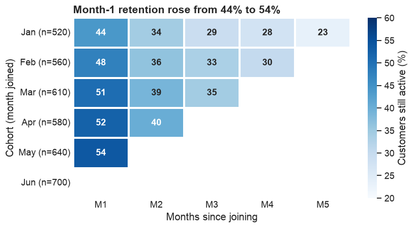
How to read it. Row = people who joined in that month. Reading right along a row shows how that cohort decays: from 44% after one month to 23% after five (January joiners). Reading down a column compares cohorts at the same age: month-1 retention climbs from 44% (January joiners) to 54% (May joiners), so newer customers stay somewhat better. The triangle is empty because June joiners have not yet lived five months. In real data, check for what changed when the line bends (a new onboarding flow, a price change).
(1 + 0.04 * i) plus noise. This is only to make synthetic data with a built-in improvement.np.concatenate([r[: 6 - i], np.full(i, np.nan)]) keeps only the months already observed and leaves the rest NaN (empty). Blank cells for unobserved months are essential; filling them with zero would suggest customers vanished.ret.drop(columns="M0") removes the all-100% column, which would waste the dark end of the colour scale. vmin=20, vmax=60 uses the full colour range for the interesting values.import plotly.express as px
# ret: the DataFrame built above; show retention as percent
fig = px.imshow((ret.drop(columns="M0") * 100).round(0), text_auto=True, color_continuous_scale="Blues",
zmin=20, zmax=60, labels=dict(x="Months since joining", y="Cohort", color="% active"))
fig.update_layout(title="Month-1 retention rose from 44% to 54%")Not run here. Plotly leaves NaN cells blank automatically. For matplotlib, use the imshow loop from the heatmap entry with np.ma.masked_invalid to hide NaN cells.
Answers: "How does the pattern look in each group?" when overlaying the groups would make spaghetti. Same chart, same scales, repeated in a grid (Tufte's "small multiples"). Do not use when: there are only 2 or 3 groups that overlay cleanly, or you cannot afford the space for more than about 12 panels.
import numpy as np, pandas as pd, matplotlib.pyplot as plt
plt.rcParams.update({"figure.figsize": (8, 4.2), "figure.dpi": 110, "font.size": 12,
"axes.titlesize": 14, "axes.titleweight": "bold", "axes.titlelocation": "left",
"axes.spines.top": False, "axes.spines.right": False})
BLUE, ORANGE, TEAL, RED, PURPLE, GREY = "#2b4fd6", "#b84a22", "#357a70", "#aa2d26", "#6a2fd0", "#9a9a9a"
rng = np.random.default_rng(8)
n = 300
category = rng.choice(["Electronics", "Home", "Fashion", "Grocery"], n, p=[0.2, 0.25, 0.3, 0.25])
mu = pd.Series({"Electronics": 7.4, "Home": 6.8, "Fashion": 6.4, "Grocery": 5.6})[category].to_numpy()
orders = pd.DataFrame({
"date": pd.Timestamp("2025-01-01") + pd.to_timedelta(rng.integers(0, 180, n), unit="D"),
"city": rng.choice(["Delhi", "Mumbai", "Pune"], n, p=[0.40, 0.35, 0.25]),
"category": category,
"channel": rng.choice(["App", "Web"], n, p=[0.6, 0.4]),
"amount": np.round(rng.lognormal(mu, 0.6)).astype(int)})
orders["month"] = orders["date"].dt.to_period("M").dt.to_timestamp()
cat_m = (orders.pivot_table(index="month", columns="category", values="amount", aggfunc="sum") / 1000)
cat_m = cat_m[["Electronics", "Home", "Fashion", "Grocery"]]
print(cat_m.round(1).agg(["min", "max"]).to_string())
x = np.arange(len(cat_m))
fig, axs = plt.subplots(2, 2, figsize=(8, 5), sharex=True, sharey=True)
for ax, cat in zip(axs.ravel(), cat_m.columns):
for other in cat_m.columns:
ax.plot(x, cat_m[other], color="#dddddd", lw=1.5) # all categories as faint context
ax.plot(x, cat_m[cat], color=BLUE, lw=3) # this panel's category on top
ax.set_title(cat, fontsize=12)
ax.set_xticks(x, [d.strftime("%b") for d in cat_m.index])
for ax in axs[:, 0]: ax.set_ylabel("Sales (Rs thousand)")
fig.suptitle("Electronics swings most; Grocery stays small", x=0.01, ha="left", fontweight="bold", fontsize=14)
fig.tight_layout()
fig.savefig("ch08v_smallmult.png", dpi=110)
print("saved")category Electronics Home Fashion Grocery
min 11.0 6.9 6.7 2.1
max 31.1 16.1 18.4 6.3
saved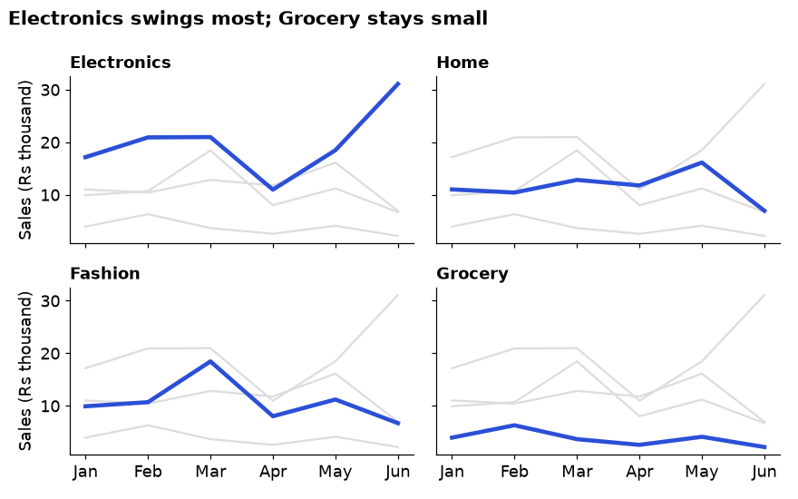
How to read it. Every panel uses the same x and y scale (sharex, sharey), so heights can be compared across panels. In each panel the blue line is that category and the grey lines are the others, so you always see where it sits in the group. Electronics (top left) swings from 11k to 31k; Grocery (bottom right) never leaves the bottom.
plt.subplots(2, 2, sharex=True, sharey=True) makes four panels with a common scale. Shared scales are the rule that makes small multiples honest; only break it on purpose and say so.axs.ravel() flattens the 2 by 2 array of axes into a list so a simple loop can walk over them with zip.fig.suptitle(..., x=0.01, ha="left") sets a left-aligned overall title.import seaborn as sns
orders["month"] = orders["date"].dt.to_period("M").dt.to_timestamp()
cat_month = orders.groupby(["month", "category"], as_index=False)["amount"].sum()
g = sns.relplot(data=cat_month, x="month", y="amount", col="category", col_wrap=2, kind="line",
height=2.3, aspect=1.6, color="#2b4fd6", lw=3,
col_order=["Electronics", "Home", "Fashion", "Grocery"])
g.set_titles("{col_name}")
g.figure.savefig("small_multiples_sns.png", dpi=110)That is the seaborn equivalent, and it is where seaborn shines: col="category" makes one panel per category and col_wrap=2 wraps them into rows; shared axes are the default. (I show it as an outline, not run, to keep the figure count down; the grid it draws is the same as the matplotlib picture without the grey context lines. Section 8.8 runs seaborn's FacetGrid for real.) In plotly, px.line(cat_month, x="month", y="amount", facet_col="category", facet_col_wrap=2) does the same, and clicking a panel's legend or zooming one panel zooms all of them.
Answers: "How does it vary by region?" Maps are tempting, but they have three traps. (1) Area bias: big regions look important whether or not they matter; a small dense city disappears. (2) Counts versus rates: a map of raw counts mostly maps population. Show a rate (orders per 1,000 residents) instead. (3) Colour: choropleths (shaded regions) use colour, the weakest encoding. Do not use a map when the places have no real geographic story: a sorted bar of regions is clearer. When you do want a map-like view, a tile grid gives every region the same size.
import numpy as np, pandas as pd, matplotlib.pyplot as plt
plt.rcParams.update({"figure.figsize": (8, 4.2), "figure.dpi": 110, "font.size": 12,
"axes.titlesize": 14, "axes.titleweight": "bold", "axes.titlelocation": "left",
"axes.spines.top": False, "axes.spines.right": False})
BLUE, ORANGE, TEAL, RED, PURPLE, GREY = "#2b4fd6", "#b84a22", "#357a70", "#aa2d26", "#6a2fd0", "#9a9a9a"
region = pd.DataFrame({"orders_k": [640, 60, 570, 330, 250, 540], "pop_m": [320, 46, 190, 280, 250, 270]},
index=["North", "Northeast", "West", "Central", "East", "South"])
region["per_1000"] = (region["orders_k"] / region["pop_m"]).round(2)
print(region.to_string())
print("rank by count :", region["orders_k"].sort_values(ascending=False).index.tolist())
print("rank by rate :", region["per_1000"].sort_values(ascending=False).index.tolist())
pos = {"North": (1, 0), "Northeast": (2, 0), "West": (0, 1), "Central": (1, 1), "East": (2, 1), "South": (1, 2)}
fig, axs = plt.subplots(1, 2, figsize=(9, 4.2))
for ax, col, title, cmap, fmt in [(axs[0], "orders_k", "Orders (thousand): maps population", "Greys", "{:.0f}"),
(axs[1], "per_1000", "Orders per 1,000 residents", "Blues", "{:.1f}")]:
vals = region[col]
for name, (cx, cy) in pos.items():
shade = plt.get_cmap(cmap)(0.15 + 0.7 * (vals[name] - vals.min()) / (vals.max() - vals.min()))
ax.add_patch(plt.Rectangle((cx, cy), 0.95, 0.95, color=shade))
dark = (vals[name] - vals.min()) / (vals.max() - vals.min()) > 0.55
ax.text(cx + 0.475, cy + 0.6, name, ha="center", va="center", fontsize=10, color="white" if dark else "#222")
ax.text(cx + 0.475, cy + 0.32, fmt.format(vals[name]), ha="center", va="center", fontsize=13,
fontweight="bold", color="white" if dark else "#222")
ax.set(xlim=(0, 3), ylim=(3, 0), aspect="equal", title=title); ax.axis("off")
ax.set_title(title, fontsize=12, loc="left")
fig.tight_layout()
fig.savefig("ch08v_tilemap.png", dpi=110)
print("saved") orders_k pop_m per_1000
North 640 320 2.00
Northeast 60 46 1.30
West 570 190 3.00
Central 330 280 1.18
East 250 250 1.00
South 540 270 2.00
rank by count : ['North', 'West', 'South', 'Central', 'East', 'Northeast']
rank by rate : ['West', 'North', 'South', 'Northeast', 'Central', 'East']
saved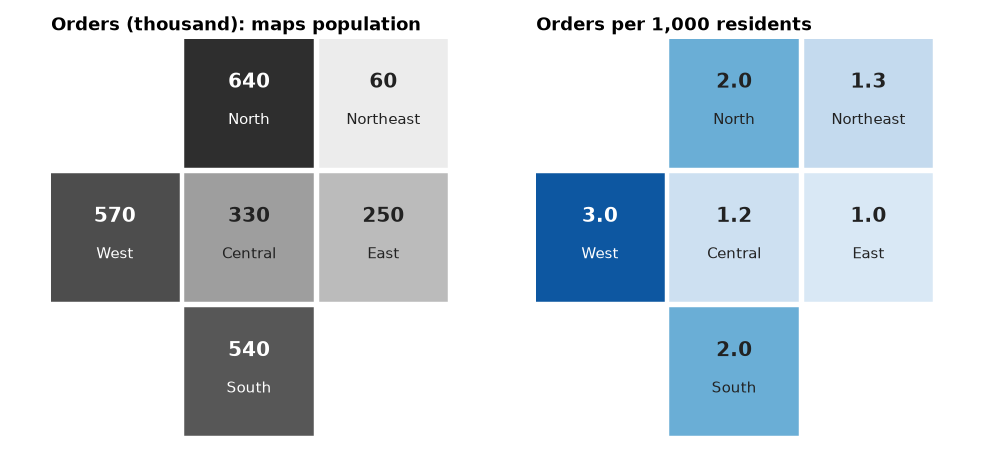
How to read it. On the left, North has the most orders (640 thousand), but North also has 320 million residents. On the right, the rate per 1,000 residents tells a different story: West leads with 3.0, North only ties South at 2.0, and Central (about 1.2) and East (1.0) are the weakest. The Northeast, tiny in count, has a rate of 1.3, above Central and East. The raw map mostly measures population; the rate map measures behaviour.
region["orders_k"] / region["pop_m"] divides thousand orders by million residents, which is exactly orders per 1,000 residents (thousand per million = per thousand).plt.Rectangle((x, y), w, h) is one tile; pos places each region on a rough geographic layout (north at the top). Every tile has the same size, which removes area bias.import plotly.express as px
# Real maps need a boundary file (GeoJSON) for your regions; this is the shape of the call.
fig = px.choropleth(region_df, geojson=india_states_geojson, locations="state", featureidkey="properties.ST_NM",
color="per_1000", color_continuous_scale="Blues",
labels={"per_1000": "Orders per 1,000 residents"})
fig.update_geos(fitbounds="locations", visible=False)Not run here. A real choropleth needs geometry (a GeoJSON file or a shapefile); geopandas reads shapefiles and its .plot(column="per_1000", cmap="Blues", legend=True) draws a choropleth in matplotlib. px.scatter_geo and px.scatter_mapbox put dots at latitude and longitude, which avoids the area bias (the dot size is under your control). In Power BI the filled map and the shape map do the same job (Chapter 11).
import numpy as np, pandas as pd, matplotlib.pyplot as plt
plt.rcParams.update({"figure.figsize": (8, 4.2), "figure.dpi": 110, "font.size": 12,
"axes.titlesize": 14, "axes.titleweight": "bold", "axes.titlelocation": "left",
"axes.spines.top": False, "axes.spines.right": False})
BLUE, ORANGE, TEAL, RED, PURPLE, GREY = "#2b4fd6", "#b84a22", "#357a70", "#aa2d26", "#6a2fd0", "#9a9a9a"
from matplotlib.patches import FancyBboxPatch
fig = plt.figure(figsize=(8, 4.4))
bg = fig.add_axes([0, 0, 1, 1]); bg.set(xlim=(0, 100), ylim=(-4, 55)); bg.axis("off")
def box(x, y, w, h, fc, ec, label, size=12, weight="bold", tc="#222"):
bg.add_patch(FancyBboxPatch((x, y), w, h, boxstyle="round,pad=0.4,rounding_size=1.2", fc=fc, ec=ec, lw=2))
bg.text(x + 1.2, y + h - 2.4, label, fontsize=size, fontweight=weight, color=tc, va="center")
box(2, 2, 96, 50, "#f4f6fb", BLUE, "Figure (the canvas: size, dpi, saving) fig = plt.figure() or plt.subplots()")
box(6, 6, 58, 38, "white", TEAL, "Axes (one plot) ax = fig.add_subplot()")
box(10, 10, 24, 12, "#eef6f4", TEAL, "xaxis (ticks)", 10)
box(38, 10, 24, 12, "#eef6f4", TEAL, "yaxis (ticks)", 10)
box(10, 26, 24, 11, "#fbf1ec", ORANGE, "Line2D ax.plot()", 10)
box(37, 26, 23, 11, "#fbf1ec", ORANGE, "Bars ax.bar()", 10)
box(68, 24, 28, 12, "#f4f0fb", PURPLE, "Legend / Text / Annotation", 10)
box(68, 8, 28, 12, "#f4f0fb", PURPLE, "Second Axes (subplots)", 10)
bg.text(50, -2, "Every box is an object. Methods on ax change one plot; methods on fig change the whole canvas.",
ha="center", fontsize=10.5, color="#444")
fig.savefig("ch08v_mplmodel.png", dpi=110)
print("saved")saved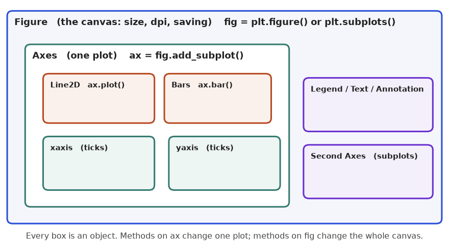
| Object | What it is | Typical calls |
|---|---|---|
| Figure | The whole canvas: size, resolution, overall title, saving | fig.savefig, fig.suptitle, fig.tight_layout |
| Axes | One plot with its own coordinates, data, title and labels | ax.plot, ax.set_title, ax.set_xlim |
| Axis | The x or y number line of an Axes (with ticks, tick labels, scale) | ax.xaxis.set_major_locator, ax.set_yscale |
| Artist | Anything drawn: a line, bar, text, legend, patch | the return values of ax.plot, ax.bar, ax.text |
Method names follow a pattern: set_ methods change a property (ax.set_title, ax.set_xlim), get_ methods read it, add_ methods put new objects in. The shortcut ax.set(title=..., xlabel=..., ylim=...) sets many properties in one call.
import numpy as np
import matplotlib.pyplot as plt
x = np.arange(1, 7)
y = np.array([350, 330, 375, 405, 430, 455])
# Style 1: the pyplot "state machine" (acts on the current figure and axes)
plt.figure(figsize=(6, 3))
plt.plot(x, y, color="#2b4fd6")
plt.title("Sales")
plt.xlabel("Month")
line_a = plt.gca().lines[0].get_ydata() # gca() = "get current axes"
plt.close()
# Style 2: object-oriented (you hold fig and ax and call methods on them)
fig, ax = plt.subplots(figsize=(6, 3))
ax.plot(x, y, color="#2b4fd6")
ax.set_title("Sales")
ax.set_xlabel("Month")
line_b = ax.lines[0].get_ydata()
plt.close(fig)
print("same data drawn:", bool((line_a == line_b).all()))
print("figures still open after closing both:", len(plt.get_fignums()))same data drawn: True
figures still open after closing both: 0Both draw the same chart. The difference is control. With pyplot, plt.title goes to "the current axes", and as soon as you have two subplots you must remember which one is current. With the object-oriented style, ax1.set_title and ax2.set_title cannot be confused. Rule for this chapter, and for any code you share: use fig, ax = plt.subplots() and call methods on ax. Use plt only for plt.subplots, plt.rcParams, plt.show() and plt.close(). The last printed line shows the tidy habit: close each figure when you are done, so none are left open.
fig, (ax1, ax2) = plt.subplots(1, 2) then plt.title("A") (it lands on the last axes you touched). Right: ax1.set_title("A"). Another classic: forgetting that in a loop each plt.figure() stays open and uses memory. Close with plt.close(fig) after saving.Almost every block in this chapter starts with the same four lines. Here is what each does and how to see the effect.
import matplotlib.pyplot as plt
from matplotlib import rc_context
from matplotlib.colors import to_hex
print("default figure size:", plt.rcParams["figure.figsize"], "| dpi:", plt.rcParams["figure.dpi"],
"| font size:", plt.rcParams["font.size"])
print("default top spine visible:", plt.rcParams["axes.spines.top"])
print("first 3 colours of the default cycle:", [to_hex(d["color"]) for d in plt.rcParams["axes.prop_cycle"]][:3])
house = {"figure.figsize": (8, 4.2), "figure.dpi": 110, "font.size": 12, "axes.titlesize": 14,
"axes.titleweight": "bold", "axes.titlelocation": "left",
"axes.spines.top": False, "axes.spines.right": False}
with rc_context(house): # temporary: restored when the block ends
print("inside context :", plt.rcParams["figure.figsize"], plt.rcParams["axes.titlelocation"])
print("after context :", plt.rcParams["figure.figsize"], plt.rcParams["axes.titlelocation"])default figure size: [6.4, 4.8] | dpi: 100.0 | font size: 10.0
default top spine visible: True
first 3 colours of the default cycle: ['#1f77b4', '#ff7f0e', '#2ca02c']
inside context : [8.0, 4.2] left
after context : [6.4, 4.8] centerplt.rcParams is a dictionary of ~300 default settings (the "run commands" parameters). plt.rcParams.update({...}) changes several at once for the rest of the program."figure.figsize": (8, 4.2) is the canvas in inches (width, height). With "figure.dpi": 110 the PNG is 8 x 110 = 880 pixels wide and 462 tall."font.size": 12 is the base size in points (1/72 inch). Tick labels and legends use it; axes.titlesize and axes.labelsize can differ. Aim for 11 to 14 pt on the final size."axes.titlelocation": "left" with "axes.titleweight": "bold" gives left-aligned bold headline titles, which is where eyes start."axes.spines.top": False and right remove the box frame. A spine is one of the four lines around the plotting area.BLUE, ORANGE, ... = "#2b4fd6", ... are plain strings holding hex colours (#RRGGBB: red, green, blue amounts from 00 to ff). Naming them once keeps colours consistent.rc_context applies settings temporarily, perfect for one special chart inside a long script.A grid of equal panels is plt.subplots(nrows, ncols), which returns an array of axes (one axes if 1 by 1, a 1D array if one row or column, a 2D array otherwise). When panels differ in size, use a mosaic: draw the layout as text, one letter per panel, repeated letters merge cells.
import numpy as np, pandas as pd, matplotlib.pyplot as plt
plt.rcParams.update({"figure.figsize": (8, 4.2), "figure.dpi": 110, "font.size": 12,
"axes.titlesize": 14, "axes.titleweight": "bold", "axes.titlelocation": "left",
"axes.spines.top": False, "axes.spines.right": False})
BLUE, ORANGE, TEAL, RED, PURPLE, GREY = "#2b4fd6", "#b84a22", "#357a70", "#aa2d26", "#6a2fd0", "#9a9a9a"
months = pd.period_range("2024-01", "2025-06", freq="M").to_timestamp()
monthly = pd.Series([310, 295, 340, 360, 385, 400, 380, 410, 430, 470, 560, 620,
350, 330, 375, 405, 430, 455], index=months, name="sales_k")
rng = np.random.default_rng(8)
n = 300
category = rng.choice(["Electronics", "Home", "Fashion", "Grocery"], n, p=[0.2, 0.25, 0.3, 0.25])
mu = pd.Series({"Electronics": 7.4, "Home": 6.8, "Fashion": 6.4, "Grocery": 5.6})[category].to_numpy()
orders = pd.DataFrame({
"date": pd.Timestamp("2025-01-01") + pd.to_timedelta(rng.integers(0, 180, n), unit="D"),
"city": rng.choice(["Delhi", "Mumbai", "Pune"], n, p=[0.40, 0.35, 0.25]),
"category": category,
"channel": rng.choice(["App", "Web"], n, p=[0.6, 0.4]),
"amount": np.round(rng.lognormal(mu, 0.6)).astype(int)})
import matplotlib.dates as mdates
fig, axd = plt.subplot_mosaic("AAB;AAC;DDD", figsize=(8, 5.2), layout="constrained")
axd["A"].plot(monthly.index, monthly.values, color=BLUE, lw=2.5)
axd["A"].set_title("A: wide panel"); axd["A"].set_ylim(0, 700)
axd["A"].xaxis.set_major_locator(mdates.MonthLocator(bymonth=[1, 4, 7, 10]))
axd["A"].xaxis.set_major_formatter(mdates.DateFormatter("%b %y"))
city = orders.groupby("city")["amount"].sum().sort_values()
axd["B"].barh(city.index, city.values / 1000, color=GREY); axd["B"].set_title("B")
axd["C"].hist(orders["amount"], bins=15, color=TEAL); axd["C"].set_title("C")
yoy = (monthly.pct_change(12) * 100).dropna()
axd["D"].bar(yoy.index.strftime("%b"), yoy.values, color=ORANGE); axd["D"].set_title("D: full-width strip: YoY growth, %")
for ax in axd.values(): ax.tick_params(labelsize=9)
print("panels:", list(axd), "| A size (inches):", np.round(axd["A"].get_figure().get_size_inches(), 1))
fig.savefig("ch08v_mosaic.png", dpi=110)
print("saved")panels: ['A', 'B', 'C', 'D'] | A size (inches): [8. 5.2]
saved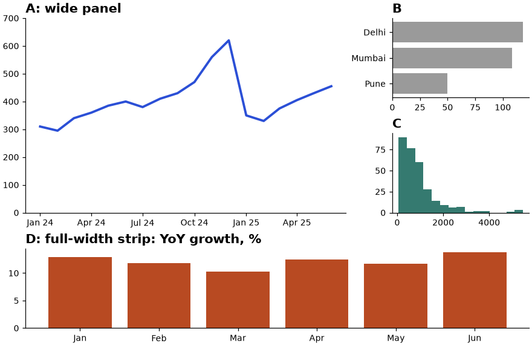
"AAB;AAC;DDD" is a 3-row, 3-column drawing: rows are separated by ;, and a letter repeated across cells merges them into one panel. A is 2 by 2 cells, B and C are single cells, D spans the bottom row.layout="constrained" lets matplotlib solve the spacing between panels and their labels. It replaces most manual tight_layout and subplots_adjust calls and handles colour bars better.axd is a dictionary: axd["A"] is the Axes named A. Naming panels beats counting indexes.monthly.pct_change(12) * 100 is year-on-year growth (this month versus 12 rows earlier); .dropna() keeps the six months that have a partner.The older, more manual tool is GridSpec: gs = fig.add_gridspec(2, 3, width_ratios=[2, 1, 1], height_ratios=[3, 1]) and ax = fig.add_subplot(gs[0, :2]) (row 0, columns 0 and 1). The dual-axis figure in 8.4 used it. Use GridSpec when you need exact ratios or spacing (wspace, hspace); use mosaic when a text picture of the layout is clearer.
A style is a bundle of rcParams. You can switch the whole look with one line.
import numpy as np, pandas as pd, matplotlib.pyplot as plt
plt.rcParams.update({"figure.figsize": (8, 4.2), "figure.dpi": 110, "font.size": 12,
"axes.titlesize": 14, "axes.titleweight": "bold", "axes.titlelocation": "left",
"axes.spines.top": False, "axes.spines.right": False})
BLUE, ORANGE, TEAL, RED, PURPLE, GREY = "#2b4fd6", "#b84a22", "#357a70", "#aa2d26", "#6a2fd0", "#9a9a9a"
import matplotlib as mpl
print("styles that ship with matplotlib:", len(plt.style.available))
print([s for s in plt.style.available if s in ("ggplot", "fivethirtyeight", "bmh", "seaborn-v0_8-whitegrid", "classic", "dark_background")])
x = np.arange(1, 7); y1 = np.array([350, 330, 375, 405, 430, 455]); y2 = np.array([310, 295, 340, 360, 385, 400])
fig = plt.figure(figsize=(9, 5))
for k, style in enumerate(["default", "ggplot", "seaborn-v0_8-whitegrid", "bmh"], start=1):
with plt.style.context(style):
ax = fig.add_subplot(2, 2, k)
ax.plot(x, y1, lw=2.5, label="2025"); ax.plot(x, y2, lw=2.5, label="2024")
ax.set_title(style, fontsize=11); ax.legend(fontsize=9, loc="lower right")
fig.tight_layout()
fig.savefig("ch08v_styles.png", dpi=110)
print("saved")styles that ship with matplotlib: 28
['bmh', 'classic', 'dark_background', 'fivethirtyeight', 'ggplot', 'seaborn-v0_8-whitegrid']
saved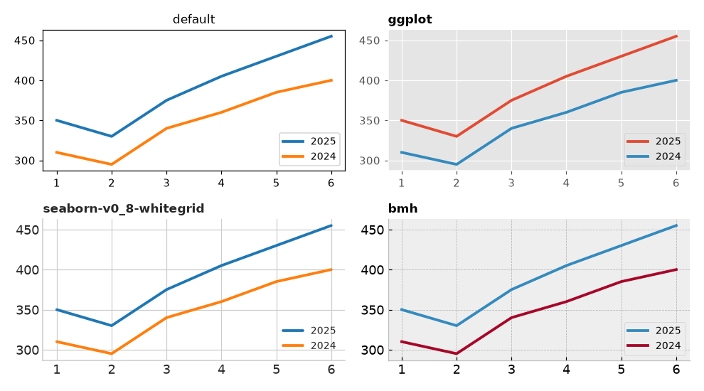
Styles are a good starting point, but for work you share, set your own house style once (as in the header) so every chart in a report looks like the same author drew it. Create a style file house.mplstyle with lines like axes.spines.top: False and load it with plt.style.use("house.mplstyle").
| Setting | What it does | Typical value |
|---|---|---|
font.family | Typeface; matplotlib falls back to DejaVu Sans if yours is missing | "sans-serif", or ["Arial", "DejaVu Sans"] |
font.size | Base text size in points | 11 to 14 |
axes.prop_cycle | The sequence of colours used for successive lines | cycler(color=[...]) from cycler |
lines.linewidth | Default line thickness | 2 to 3 for slides, 1.5 for print |
savefig.dpi | Resolution of saved files | 150 (screen), 300 (print) |
axes.grid, grid.color | Gridlines on or off, and how faint | off, or "#dddddd" |
figure.constrained_layout.use | Automatic spacing | True |
Colormaps (the cmap= argument) turn numbers into colours: sequential ("Blues", "viridis"), diverging ("RdBu_r", "coolwarm") and qualitative ("tab10"). Add _r to reverse any of them. Choosing among them is a design question and is covered in 8.10.
import numpy as np
import matplotlib.pyplot as plt
import tempfile, os
fig, ax = plt.subplots(figsize=(8, 4.2))
ax.plot([1, 2, 3], [3, 1, 2])
tmp = tempfile.mkdtemp()
for dpi in (72, 110, 300):
path = os.path.join(tmp, f"chart_{dpi}.png")
fig.savefig(path, dpi=dpi)
h, w = plt.imread(path).shape[:2]
print(f"dpi {dpi:>3}: {w} x {h} pixels (= 8 x {dpi}, 4.2 x {dpi})")
fig.savefig(os.path.join(tmp, "chart.svg"))
fig.savefig(os.path.join(tmp, "chart.pdf"))
print("formats written:", sorted(f.split(".")[-1] for f in os.listdir(tmp) if not f.startswith("chart_")))dpi 72: 576 x 302 pixels (= 8 x 72, 4.2 x 72)
dpi 110: 880 x 462 pixels (= 8 x 110, 4.2 x 110)
dpi 300: 2400 x 1260 pixels (= 8 x 300, 4.2 x 300)
formats written: ['pdf', 'svg']bbox_inches="tight" trims blank margins but can change the final pixel size, so do not combine it with exact size requirements. transparent=True removes the white background for dark slides.pdf.fonttype: 42 in rcParams to embed editable TrueType fonts.import numpy as np, pandas as pd, matplotlib.pyplot as plt
plt.rcParams.update({"figure.figsize": (8, 4.2), "figure.dpi": 110, "font.size": 12,
"axes.titlesize": 14, "axes.titleweight": "bold", "axes.titlelocation": "left",
"axes.spines.top": False, "axes.spines.right": False})
BLUE, ORANGE, TEAL, RED, PURPLE, GREY = "#2b4fd6", "#b84a22", "#357a70", "#aa2d26", "#6a2fd0", "#9a9a9a"
months = pd.period_range("2024-01", "2025-06", freq="M").to_timestamp()
monthly = pd.Series([310, 295, 340, 360, 385, 400, 380, 410, 430, 470, 560, 620,
350, 330, 375, 405, 430, 455], index=months, name="sales_k")
import matplotlib.dates as mdates
fig, ax = plt.subplots()
ax.plot(monthly.index, monthly.values, color=BLUE, lw=2.5)
target = 450
ax.axhline(target, color=GREY, ls="--", lw=1.5)
ax.text(monthly.index[0], target + 8, "target: 450k", color="#555")
ax.fill_between(monthly.index, monthly.values, target, where=monthly.values >= target, color=TEAL, alpha=0.35,
interpolate=True)
peak = monthly.idxmax()
ax.annotate("Festive peak\n620k", xy=(peak, 620), xytext=(pd.Timestamp("2024-06-15"), 600),
fontsize=12, ha="center", va="center", color=RED,
bbox=dict(boxstyle="round,pad=0.4", fc="white", ec=RED),
arrowprops=dict(arrowstyle="-|>", color=RED, connectionstyle="arc3,rad=-0.25", lw=1.8))
ax.set_ylim(250, 700); ax.set_ylabel("Sales (Rs thousand)")
ax.xaxis.set_major_locator(mdates.MonthLocator(bymonth=[1, 4, 7, 10]))
ax.xaxis.set_major_formatter(mdates.DateFormatter("%b %Y"))
ax.set_title("Only four months beat the 450k target")
fig.tight_layout()
fig.savefig("ch08v_annotate.png", dpi=110)
print("months above target:", monthly[monthly >= target].index.strftime("%b %Y").tolist())
print("saved")months above target: ['Oct 2024', 'Nov 2024', 'Dec 2024', 'Jun 2025']
saved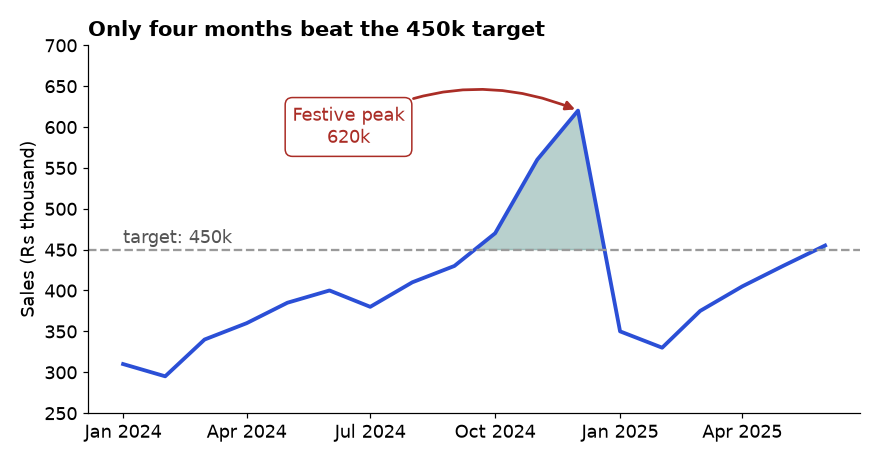
ax.axhline(y, ls="--") draws a horizontal reference line across the axes (axvline for vertical). Use it for targets, averages and zero.fill_between(x, y1, y2, where=condition, interpolate=True) shades between two curves only where the condition holds; interpolate=True makes the edges meet exactly at the crossings.ax.annotate(text, xy=, xytext=, bbox=, arrowprops=): bbox boxes the text; arrowprops controls the arrow (arrowstyle="-|>" is a filled head, connectionstyle="arc3,rad=-0.25" bends it).Coordinates: by default xy and xytext are in data units (the axis values). Use xycoords="axes fraction" (0 to 1 across the plot), "figure fraction" or textcoords="offset points" when you want a position that survives changes of the data range, as we did with the bubble labels.
import numpy as np, pandas as pd, matplotlib.pyplot as plt
plt.rcParams.update({"figure.figsize": (8, 4.2), "figure.dpi": 110, "font.size": 12,
"axes.titlesize": 14, "axes.titleweight": "bold", "axes.titlelocation": "left",
"axes.spines.top": False, "axes.spines.right": False})
BLUE, ORANGE, TEAL, RED, PURPLE, GREY = "#2b4fd6", "#b84a22", "#357a70", "#aa2d26", "#6a2fd0", "#9a9a9a"
months = np.arange(0, 11)
signups = 100 * 2 ** months # doubles every month
print("signups:", signups.tolist())
fig, (ax1, ax2, ax3) = plt.subplots(1, 3, figsize=(11, 3.8), layout="constrained")
ax1.plot(months, signups, color=BLUE, lw=2.5, marker="o"); ax1.set_title("Linear axis")
ax1.yaxis.set_major_formatter("{x:,.0f}")
ax2.plot(months, signups, color=BLUE, lw=2.5, marker="o"); ax2.set_yscale("log"); ax2.set_title("Log axis: a straight line")
ax2.set_yticks([100, 1000, 10000, 100000], ["100", "1,000", "10,000", "100,000"]); ax2.minorticks_off()
rs = np.array([350, 330, 375, 405, 430, 455])
ax3.plot(["Jan", "Feb", "Mar", "Apr", "May", "Jun"], rs, color=ORANGE, lw=2.5, marker="o")
ax3.set_title("Second axis, other unit"); ax3.set_ylabel("Rs thousand"); ax3.set_ylim(300, 500)
sec = ax3.secondary_yaxis("right", functions=(lambda r: r / 84, lambda d: d * 84)) # illustrative rate: Rs 84 per US dollar
sec.set_ylabel("US dollars thousand (at Rs 84)"); sec.spines["right"].set_visible(True)
for ax in (ax1, ax2):
ax.set_xlabel("Months since launch"); ax.set_ylabel("Signups"); ax.set_xticks(range(0, 11, 2))
fig.savefig("ch08v_scales.png", dpi=110)
print("log10 of the values:", np.round(np.log10(signups[[0, 5, 10]]), 2).tolist())
print("saved")signups: [100, 200, 400, 800, 1600, 3200, 6400, 12800, 25600, 51200, 102400]
log10 of the values: [2.0, 3.51, 5.01]
saved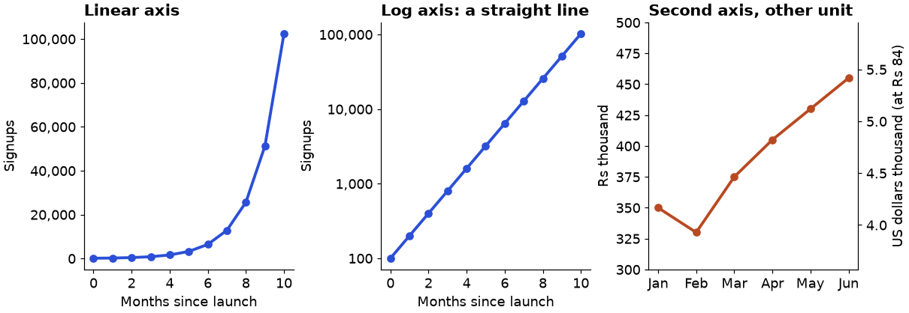
When to use a log axis. When values span orders of magnitude (money per customer, web traffic, populations) or when you care about percent change: on a log axis the same distance always means the same ratio. Doubling from 100 to 200 and from 25,600 to 51,200 is the same step. The cost: readers need to know the axis is logarithmic, so label it ("log scale"). It cannot show zero or negative values; for data with both signs use ax.set_yscale("symlog"), which is linear near zero and logarithmic far from it.
Second axis done right. ax.secondary_yaxis("right", functions=(forward, inverse)) adds an axis that is a pure re-expression of the first, in other units (Celsius and Fahrenheit, Rs and dollars). It cannot mislead, because it has no data of its own, unlike a twinx axis. Compare the last block of 8.4.
Give matplotlib real datetimes, then control ticks with locators (where) and formatters (how). The common ones:
| Goal | Locator | Formatter |
|---|---|---|
| A tick every quarter | mdates.MonthLocator(bymonth=[1, 4, 7, 10]) | mdates.DateFormatter("%b %Y") |
| A tick every Monday | mdates.WeekdayLocator(byweekday=mdates.MO) | DateFormatter("%d %b") |
| A tick every 2 years | mdates.YearLocator(2) | DateFormatter("%Y") |
| Smart automatic choice | mdates.AutoDateLocator() | mdates.ConciseDateFormatter(locator) |
Pandas helpers: pd.to_datetime(col) to convert, df.set_index("date").resample("MS").sum() to aggregate to month starts. If dates show as integers like 19000, the column was not converted.
import numpy as np
import pandas as pd
import matplotlib
matplotlib.use("Agg")
import matplotlib.pyplot as plt
def attempt(label, fn):
try:
fn()
except Exception as e:
print(f"{label}\n {type(e).__name__}: {str(e)[:110]}")
fig, ax = plt.subplots()
attempt("1 title on the Figure", lambda: fig.set_title("x"))
attempt("2 x and y lengths differ", lambda: ax.plot([1, 2, 3], [1, 2, 3, 4]))
axs = plt.subplots(2, 2)[1]
attempt("3 indexing a 2D array of axes as one", lambda: axs.plot([1, 2]))
df = pd.DataFrame({"amount": [1, 2]})
attempt("4 column name typo", lambda: ax.hist(df["Amount"]))
attempt("5 style name typo", lambda: plt.style.use("ggplotx"))
attempt("6 bar with text heights", lambda: ax.bar(["a", "b"], [1, "two"]))1 title on the Figure
AttributeError: 'Figure' object has no attribute 'set_title'
2 x and y lengths differ
ValueError: x and y must have same first dimension, but have shapes (3,) and (4,)
3 indexing a 2D array of axes as one
AttributeError: 'numpy.ndarray' object has no attribute 'plot'
4 column name typo
KeyError: 'Amount'
5 style name typo
OSError: 'ggplotx' is not a valid package style, path of style file, URL of style file, or library style name (library
6 bar with text heights
UFuncTypeError: ufunc 'add' did not contain a loop with signature matching types (dtype('int64'), dtype('<U1')) -> None| Symptom | Cause | Fix |
|---|---|---|
AttributeError: 'Figure' object has no attribute 'set_title' | Called an Axes method on the Figure | ax.set_title or fig.suptitle |
ValueError: x and y must have same first dimension | Different lengths after a filter or merge | Print len(x), len(y); align with the same index |
AttributeError: 'numpy.ndarray' object has no attribute 'plot' | plt.subplots(2, 2) returns an array of axes | axs[0, 1].plot or axs.ravel() |
KeyError: 'Amount' | Column name case or spelling | print(df.columns.tolist()) |
| Blank or half-empty PNG | savefig called after plt.show() closed the figure | Save first, then show (or use fig.savefig on the object) |
| Overlapping labels and titles | Default margins | layout="constrained" or fig.tight_layout() |
| Chart shows in notebook but file is empty or cut | Labels outside canvas | bbox_inches="tight", then re-check pixel size |
| Dates look like 19000 | Strings or integers instead of datetimes | pd.to_datetime |
| Legend says "_child0" or is empty | No label= on the artists | Add label= to each plot call, then ax.legend() |
| Script hangs on a server | An interactive backend is trying to open a window | matplotlib.use("Agg") before importing pyplot |
plt.show() and then plt.savefig(). In a normal script, show() blocks until you close the window, and the figure is empty afterwards, so the saved file is a blank white image. Wrong: plt.show(); plt.savefig("a.png"). Right: fig.savefig("a.png"); plt.show().A backend turns the figure into pixels or a file: Agg writes PNG without a screen (use this on servers, in scheduled jobs and in this chapter), macosx and QtAgg open windows, pdf and svg write vector files. Under the hood everything is an Artist; the Figure draws its Axes, which draw their lines, patches and text, in order of zorder. For hundreds of thousands of points, ax.plot with markers gets slow; use rasterized=True on the heavy artist so a vector PDF stays small, or reduce the data first (see 8.13).
Every seaborn plotting function belongs to a family. Pick the family from your question, then the function inside it.
| Family | Question | Axes-level functions | Figure-level function |
|---|---|---|---|
| Relational | How do two numbers relate? | scatterplot, lineplot | relplot (kind="scatter" or "line") |
| Distribution | How is one number (or a pair) spread? | histplot, kdeplot, ecdfplot, rugplot | displot (also jointplot, pairplot) |
| Categorical | How does a number differ between categories? | stripplot, swarmplot, boxplot, violinplot, boxenplot, pointplot, barplot, countplot | catplot (kind= any of those) |
| Regression | Is there a straight-line trend? | regplot, residplot | lmplot |
| Matrix | A grid of numbers as colour | heatmap | clustermap |
The first two columns are the thinking, the last two are the code. Notice the pattern: each figure-level function is a wrapper that can draw any axes-level function of its family, split into panels.
import numpy as np, pandas as pd, matplotlib.pyplot as plt, seaborn as sns
sns.set_theme(style="white", font_scale=1.1, rc={"figure.figsize": (8, 4.2), "figure.dpi": 110,
"axes.titlesize": 14, "axes.titleweight": "bold", "axes.titlelocation": "left",
"axes.spines.top": False, "axes.spines.right": False})
BLUE, ORANGE, TEAL, RED, PURPLE, GREY = "#2b4fd6", "#b84a22", "#357a70", "#aa2d26", "#6a2fd0", "#9a9a9a"
rng = np.random.default_rng(8)
n = 300
category = rng.choice(["Electronics", "Home", "Fashion", "Grocery"], n, p=[0.2, 0.25, 0.3, 0.25])
mu = pd.Series({"Electronics": 7.4, "Home": 6.8, "Fashion": 6.4, "Grocery": 5.6})[category].to_numpy()
orders = pd.DataFrame({
"date": pd.Timestamp("2025-01-01") + pd.to_timedelta(rng.integers(0, 180, n), unit="D"),
"city": rng.choice(["Delhi", "Mumbai", "Pune"], n, p=[0.40, 0.35, 0.25]),
"category": category,
"channel": rng.choice(["App", "Web"], n, p=[0.6, 0.4]),
"amount": np.round(rng.lognormal(mu, 0.6)).astype(int)})
rng = np.random.default_rng(8)
n = 52
ad_spend = rng.uniform(20, 100, n).round(1) # Rs thousand per week
visits = (900 + 25 * ad_spend + rng.normal(0, 250, n)).round()
discount = rng.uniform(0, 25, n).round(1) # average discount, %
orders_n = (0.05 * visits + 0.6 * discount + rng.normal(0, 8, n)).round()
revenue_k = (0.9 * orders_n * (1 - discount / 200) + rng.normal(0, 4, n)).round(1)
returns = (0.04 * orders_n + 0.25 * discount + rng.normal(0, 2, n)).round().clip(0)
weekly = pd.DataFrame({"ad_spend": ad_spend, "visits": visits, "discount": discount,
"orders": orders_n, "revenue_k": revenue_k, "returns": returns})
fig, axs = plt.subplots(1, 3, figsize=(12, 3.9), layout="constrained")
# Relational: x, y, plus colour (hue) and area (size) for two more variables
sns.scatterplot(data=weekly, x="ad_spend", y="revenue_k", hue="discount", size="orders", sizes=(15, 110),
palette="viridis", legend=False, ax=axs[0])
axs[0].set(title="Relational: scatterplot", xlabel="Ad spend (Rs thousand)", ylabel="Revenue (Rs thousand)")
# Distribution: empirical cumulative distribution, one line per channel
sns.ecdfplot(data=orders, x="amount", hue="channel", palette={"App": BLUE, "Web": ORANGE}, linewidth=2.5, ax=axs[1])
axs[1].set(title="Distribution: ecdfplot", xlabel="Order amount (Rs)", ylabel="Share of orders up to this amount")
# Categorical: mean per category with a 95% bootstrap interval
sns.pointplot(data=orders, x="category", y="amount", hue="channel", palette={"App": BLUE, "Web": ORANGE},
order=["Electronics", "Home", "Fashion", "Grocery"], hue_order=["App", "Web"], dodge=0.3, errorbar=("ci", 95), seed=8, ax=axs[2])
axs[2].set(title="Categorical: pointplot", xlabel="", ylabel="Average order (Rs)")
sns.move_legend(axs[1], "lower right", title=None, frameon=False)
sns.move_legend(axs[2], "upper right", title=None, frameon=False)
fig.savefig("ch08v_sns_families.png", dpi=110)
print(type(axs[0]).__name__, "| median App:", orders.loc[orders.channel == "App", "amount"].median(),
"| median Web:", orders.loc[orders.channel == "Web", "amount"].median())
print("saved")Axes | median App: 716.5 | median Web: 640.5
saved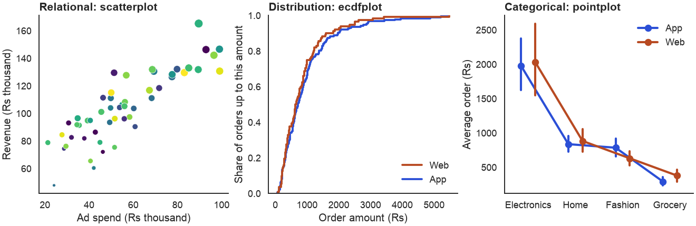
hue="discount" maps a continuous column to colour (a sequential colormap, here viridis) and size="orders" maps another column to marker area. One scatter plot now carries four variables. Use this sparingly: more than three encodings overload the reader, and a continuous hue is better explained with a colour bar than the crowded legend seaborn would build (so the legend is switched off here).ecdfplot plots, for each amount on the x-axis, the share of orders at or below it. It needs no bins and no smoothing, and two groups can be compared exactly: the curve that is further right has larger orders. Reading off the 0.5 line gives the median.pointplot draws the mean of each group as a dot and a 95% bootstrap confidence interval as a line, which is the honest alternative to bars when the question is "do the groups differ?". Wide, overlapping intervals (here, most categories) mean you cannot tell.ax= and draw into the axes you give them, so you can mix them in one matplotlib figure.| Axes-level | Figure-level | |
|---|---|---|
| Examples | scatterplot, histplot, boxplot, heatmap | relplot, displot, catplot, lmplot, pairplot, jointplot |
| Returns | A matplotlib Axes | A seaborn grid object (FacetGrid, PairGrid, JointGrid) that owns the whole figure |
| Draws into your axes | Yes: ax=ax | No: it creates its own figure |
| Size is set by | plt.subplots(figsize=...) | height= and aspect= per panel |
| Panels by column value | Not built in | col=, row=, col_wrap= |
| Legend | Inside the axes; move with sns.move_legend | Outside the plot by default |
| Use when | You want one plot or a custom layout | You want a grid of panels in one call |
import numpy as np, pandas as pd, matplotlib.pyplot as plt, seaborn as sns
sns.set_theme(style="white", font_scale=1.1, rc={"figure.figsize": (8, 4.2), "figure.dpi": 110,
"axes.titlesize": 14, "axes.titleweight": "bold", "axes.titlelocation": "left",
"axes.spines.top": False, "axes.spines.right": False})
BLUE, ORANGE, TEAL, RED, PURPLE, GREY = "#2b4fd6", "#b84a22", "#357a70", "#aa2d26", "#6a2fd0", "#9a9a9a"
rng = np.random.default_rng(8)
n = 300
category = rng.choice(["Electronics", "Home", "Fashion", "Grocery"], n, p=[0.2, 0.25, 0.3, 0.25])
mu = pd.Series({"Electronics": 7.4, "Home": 6.8, "Fashion": 6.4, "Grocery": 5.6})[category].to_numpy()
orders = pd.DataFrame({
"date": pd.Timestamp("2025-01-01") + pd.to_timedelta(rng.integers(0, 180, n), unit="D"),
"city": rng.choice(["Delhi", "Mumbai", "Pune"], n, p=[0.40, 0.35, 0.25]),
"category": category,
"channel": rng.choice(["App", "Web"], n, p=[0.6, 0.4]),
"amount": np.round(rng.lognormal(mu, 0.6)).astype(int)})
g = sns.displot(data=orders, x="amount", col="city", row="channel", col_order=["Delhi", "Mumbai", "Pune"], row_order=["App", "Web"], binwidth=400, binrange=(0, 5600),
color=BLUE, height=2.0, aspect=1.5, facet_kws={"margin_titles": True})
g.set_axis_labels("Order amount (Rs)", "Orders")
g.set_titles(col_template="{col_name}", row_template="{row_name}")
g.set(xticks=[0, 2000, 4000])
g.figure.suptitle("Order sizes have the same shape in every city and channel", x=0.02, ha="left", fontweight="bold", y=1.04)
g.figure.savefig("ch08v_sns_facet.png", dpi=110, bbox_inches="tight")
print(type(g).__name__, "| panels:", g.axes.shape, "| figure size (in):", np.round(g.figure.get_size_inches(), 1).tolist())
print(orders.groupby(["channel", "city"]).size().unstack().to_string())
print("saved")FacetGrid | panels: (2, 3) | figure size (in): [9.0, 4.0]
city Delhi Mumbai Pune
channel
App 80 68 40
Web 42 45 25
saved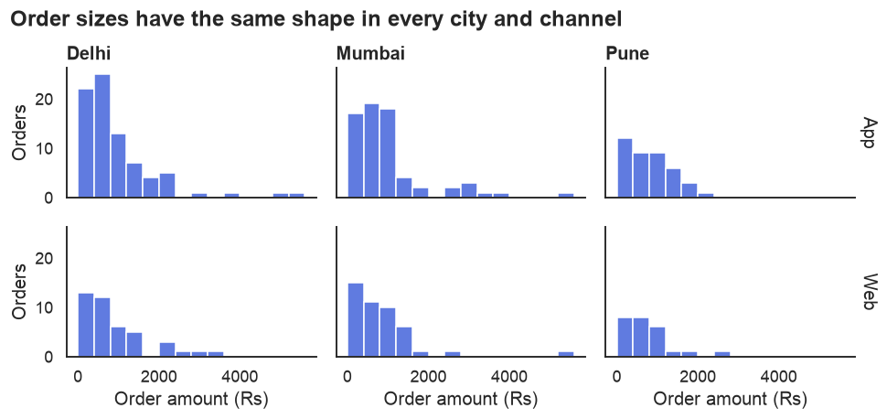
sns.displot(..., col="city", row="channel") splits the data by those two columns and draws one histogram per combination: the figure-level power. The returned g is a FacetGrid.height=2.0, aspect=1.5 size each panel (2 inches tall, 3 inches wide), so the figure grows with the number of panels. This is why figsize does nothing here.g.set_axis_labels, g.set_titles and g.set apply a setting to every panel at once. margin_titles=True writes the row name in the right margin instead of repeating it above every panel.sharex=True, sharey=True), which is what makes small multiples honest. Pass facet_kws={"sharey": False} only when you must, and say so.import numpy as np, pandas as pd, matplotlib.pyplot as plt, seaborn as sns
sns.set_theme(style="white", font_scale=1.1, rc={"figure.figsize": (8, 4.2), "figure.dpi": 110,
"axes.titlesize": 14, "axes.titleweight": "bold", "axes.titlelocation": "left",
"axes.spines.top": False, "axes.spines.right": False})
BLUE, ORANGE, TEAL, RED, PURPLE, GREY = "#2b4fd6", "#b84a22", "#357a70", "#aa2d26", "#6a2fd0", "#9a9a9a"
rng = np.random.default_rng(8)
n = 52
ad_spend = rng.uniform(20, 100, n).round(1) # Rs thousand per week
visits = (900 + 25 * ad_spend + rng.normal(0, 250, n)).round()
discount = rng.uniform(0, 25, n).round(1) # average discount, %
orders_n = (0.05 * visits + 0.6 * discount + rng.normal(0, 8, n)).round()
revenue_k = (0.9 * orders_n * (1 - discount / 200) + rng.normal(0, 4, n)).round(1)
returns = (0.04 * orders_n + 0.25 * discount + rng.normal(0, 2, n)).round().clip(0)
weekly = pd.DataFrame({"ad_spend": ad_spend, "visits": visits, "discount": discount,
"orders": orders_n, "revenue_k": revenue_k, "returns": returns})
weekly["discount level"] = np.where(weekly["discount"] > 12.5, "High", "Low")
cols = ["ad_spend", "visits", "revenue_k", "returns"]
g = sns.pairplot(weekly, vars=cols, hue="discount level", palette={"High": ORANGE, "Low": BLUE}, corner=True,
diag_kind="kde", height=1.9, plot_kws={"s": 28, "alpha": 0.8}, diag_kws={"fill": True, "alpha": 0.25})
g.figure.suptitle("Every pair of weekly columns at once", x=0.02, ha="left", fontweight="bold", y=1.01)
g.figure.savefig("ch08v_sns_pair.png", dpi=110, bbox_inches="tight")
print(type(g).__name__, "| grid:", g.axes.shape, "| weeks per level:", weekly["discount level"].value_counts().to_dict())
print("saved")PairGrid | grid: (4, 4) | weeks per level: {'High': 29, 'Low': 23}
saved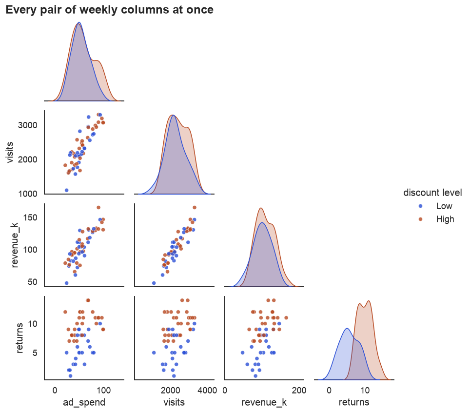
How to read it. The diagonal shows each column's own distribution; each other cell shows two columns against each other. Ad spend, visits and revenue form tilted clouds (they move together), while returns separates by colour: the orange high-discount weeks sit higher on the returns axis. A pair plot is for exploration (Chapter 7); once you know which pair matters, draw that one pair properly. corner=True drops the mirror-image upper triangle.
| Argument | Maps a column to | Good for | Watch out |
|---|---|---|---|
hue | Colour | A category (qualitative palette) or a number (sequential palette) | More than 5 categories; red and green together |
style | Marker shape or line dash | A category; duplicates hue for accessibility | More than 4 shapes |
size | Marker area or line width | A positive number | Small differences are invisible (8.1) |
col, row | Panel | A category with 2 to 12 levels | Panels that are too small to read |
order, hue_order | Order of the categories | Always set for ordered categories (months, age bands) | Alphabetical default |
palette | Colours for the hue levels | A name ("colorblind") or dict {level: colour} | A name with no hue (deprecated, see the errors block) |
import seaborn as sns
sns.set_theme(style="white", context="notebook", palette="colorblind", font_scale=1.0)
print("colorblind palette:", sns.color_palette("colorblind").as_hex()[:6])
print("default notebook font size:", sns.plotting_context("notebook")["axes.labelsize"],
"| talk:", sns.plotting_context("talk")["axes.labelsize"],
"| poster:", sns.plotting_context("poster")["axes.labelsize"])
print("styles:", ["white", "whitegrid", "dark", "darkgrid", "ticks"])
print("blues (5 steps):", sns.color_palette("Blues", 5).as_hex())
print("diverging:", sns.diverging_palette(250, 30, n=5).as_hex())colorblind palette: ['#0173b2', '#de8f05', '#029e73', '#d55e00', '#cc78bc', '#ca9161']
default notebook font size: 12 | talk: 18.0 | poster: 24
styles: ['white', 'whitegrid', 'dark', 'darkgrid', 'ticks']
blues (5 steps): ['#d6e6f4', '#abd0e6', '#6aaed6', '#3787c0', '#105ba4']
diverging: ['#4479bb', '#9bb6d7', '#f2f1f1', '#d1a994', '#af6339']"white", "whitegrid", "ticks", "dark", "darkgrid") sets background, grid and spines. For reports "white" or "whitegrid" with despined top and right edges (sns.despine()) is the cleanest."paper", "notebook", "talk", "poster") scales all text and line widths together: 11 pt for a document, 16.5 pt (notebook 12 x 1.5 scale) for slides. The printed label sizes show the scale."colorblind" (qualitative, safe), "Blues" (sequential), "vlag" or "RdBu_r" (diverging), "viridis" and "rocket" (perceptually uniform). sns.color_palette(name, n) returns n colours; .as_hex() shows them.set_theme resets matplotlib rcParams. Pass your own rc dict through rc={...} (as in the chapter header) or call it once, before everything else.import warnings
import pandas as pd
import seaborn as sns
import matplotlib
matplotlib.use("Agg")
import matplotlib.pyplot as plt
df = pd.DataFrame({"city": ["Delhi", "Pune", "Delhi", "Pune"], "amount": [10, 20, 30, 40]})
def attempt(label, fn):
try:
with warnings.catch_warnings(record=True) as w:
warnings.simplefilter("always")
fn()
for item in w:
print(f"{label}\n {item.category.__name__}: {' '.join(str(item.message).split())[:100]}")
except Exception as e:
print(f"{label}\n {type(e).__name__}: {str(e)[:110]}")
attempt("1 wrong column name", lambda: sns.barplot(data=df, x="City", y="amount"))
attempt("2 palette without hue", lambda: sns.barplot(data=df, x="city", y="amount", palette="Set2"))
fig, ax = plt.subplots()
attempt("3 ax= on a figure-level function", lambda: sns.displot(data=df, x="amount", ax=ax))
attempt("4 hue column name typo", lambda: sns.scatterplot(data=df, x="amount", y="amount", hue="Amount"))1 wrong column name
ValueError: Could not interpret value `City` for `x`. An entry with this name does not appear in `data`.
2 palette without hue
FutureWarning: Passing `palette` without assigning `hue` is deprecated and will be removed in v0.14.0. Assign the `
3 ax= on a figure-level function
UserWarning: `displot` is a figure-level function and does not accept the ax= parameter. You may wish to try hist
4 hue column name typo
ValueError: Could not interpret value `Amount` for `hue`. An entry with this name does not appear in `data`.| Symptom | Cause | Fix |
|---|---|---|
ValueError: Could not interpret value ... for x | Column name wrong (case, spaces) or data= missing | print(df.columns.tolist()); pass data=df |
FutureWarning: Passing `palette` without assigning `hue` | seaborn 0.13 wants hue whenever a palette is given | hue="city", legend=False |
UserWarning: displot is a figure-level function and does not accept the ax= parameter | Figure-level functions create their own figure, so the plot does not land in your axes | Use the axes-level function (histplot, boxplot, scatterplot) with ax= |
| Confidence band differs between runs | The bootstrap is random | seed= in lineplot/pointplot, or errorbar=None |
| Bars have a black line at the top | barplot shows a mean with error bars by default | errorbar=None for sums and pre-aggregated data; set estimator="sum" to sum |
| Colours look washed out | Default saturation=0.75 | saturation=1 |
Title or legend cut off after savefig | Legend outside the axes | bbox_inches="tight" |
barplot average silently. sns.barplot(data=orders, x="city", y="amount") draws the mean order per city with an error bar, not the total. If you wanted totals, say so: estimator="sum", errorbar=None, or aggregate with pandas first. Always check one bar against groupby(...).agg(...).Under the hood every seaborn plot follows the same recipe: map data variables to visual properties (semantics), split the data by them, apply a statistic (mean, density estimate, bootstrap interval) and draw a mark. Since version 0.12 the seaborn.objects interface (so.Plot(df, x=, y=).add(so.Line())) exposes that recipe directly and is the modern direction, but the function-based API above is what you will meet in 95% of real code. Two practical consequences: bootstrap-based intervals cost time on large data (use errorbar=("sd") or None past a few hundred thousand rows), and any statistic seaborn computes is also computable by you with pandas, so you can always verify a bar or a band.
pip install plotly (add kaleido for static image export and statsmodels for trendline="ols"). Run each block once on your machine and compare it with my description.The following block needs no plotly. It writes by hand the recipe that plotly builds for a bar chart, and prints it. Reading it once removes the mystery from fig.update_layout.
import json
figure = {
"data": [{"type": "bar", "x": ["Delhi", "Mumbai", "Pune"], "y": [3298, 3047, 2995],
"marker": {"color": ["#2b4fd6", "#9a9a9a", "#9a9a9a"]},
"hovertemplate": "%{x}: Rs %{y:,.0f}<extra></extra>"}],
"layout": {"title": {"text": "Delhi sold the most: Rs 3,298 of Rs 9,340"},
"yaxis": {"title": {"text": "Sales (Rs)"}, "range": [0, 3800]},
"template": "plotly_white"},
}
print(json.dumps(figure["data"][0]))
print(json.dumps(figure["layout"]))
print("traces:", len(figure["data"]), "| trace type:", figure["data"][0]["type"],
"| layout keys:", sorted(figure["layout"])){"type": "bar", "x": ["Delhi", "Mumbai", "Pune"], "y": [3298, 3047, 2995], "marker": {"color": ["#2b4fd6", "#9a9a9a", "#9a9a9a"]}, "hovertemplate": "%{x}: Rs %{y:,.0f}<extra></extra>"}
{"title": {"text": "Delhi sold the most: Rs 3,298 of Rs 9,340"}, "yaxis": {"title": {"text": "Sales (Rs)"}, "range": [0, 3800]}, "template": "plotly_white"}
traces: 1 | trace type: bar | layout keys: ['template', 'title', 'yaxis']Two top-level parts: data is a list of traces (one bar series, one line, one scatter cloud: each with a type and its values), and layout controls everything around them (titles, axes, legend, size, template). Every plotly function, express or not, ends up building this dictionary. fig.update_traces(...) edits the traces; fig.update_layout(...) edits the layout; fig.update_xaxes(...) and fig.update_yaxes(...) are shortcuts for the axis parts of the layout.
plotly express (px) | graph_objects (go) | |
|---|---|---|
| Style | One function call per chart, from a tidy DataFrame | Build a Figure and add traces one by one |
| Typical call | px.bar(df, x="city", y="amount", color="city") | go.Figure(go.Bar(x=..., y=...)) |
| Colour, facets, trendlines | Built in (color=, facet_col=, trendline=) | You do it yourself |
| Control | High-level, fast, 90% of needs | Full: custom traces, waterfall, funnel area, subplots with mixed types, secondary axes |
| Returns | A go.Figure you can still modify | A go.Figure |
| Use when | Exploring, standard charts | Fine-tuning, combining chart types, unusual traces |
They are not rivals: start with express, then refine with fig.update_* or add a trace with fig.add_trace(go.Scatter(...)). The same chart in both styles:
import pandas as pd
import plotly.express as px
import plotly.graph_objects as go
df = pd.DataFrame({"city": ["Delhi", "Mumbai", "Pune"], "amount": [3298, 3047, 2995]})
# 1. express: one line, columns by name
fig1 = px.bar(df, x="city", y="amount", text_auto=",.0f")
# 2. graph_objects: the same, building the trace yourself
fig2 = go.Figure(go.Bar(x=df["city"], y=df["amount"], text=df["amount"], texttemplate="%{text:,.0f}"))
for fig in (fig1, fig2):
fig.update_layout(template="plotly_white", title="Sales by city (Rs)", yaxis_range=[0, 3800])
print(fig1.data[0].type, fig2.data[0].type) # both print: barNot run here. Both figures contain one bar trace and draw the same three bars; the last line would print bar bar. text_auto (express) and texttemplate (graph_objects) both put the value on the bar.
| Chart | Function | Key arguments |
|---|---|---|
| Bar, grouped, stacked | px.bar | x, y, color, barmode="group", orientation="h", text_auto |
| Line, multi-line | px.line | x, y, color, markers=True, line_dash |
| Area | px.area | x, y, color, groupnorm="percent" |
| Scatter, bubble | px.scatter | x, y, color, size, symbol, hover_name, trendline, log_x, render_mode="webgl" |
| Histogram | px.histogram | x, color, nbins, barmode, marginal="box", histnorm |
| Box, violin | px.box, px.violin | x, y, color, points="all", box=True |
| Heatmap of a matrix | px.imshow | text_auto, color_continuous_scale, zmin, zmax |
| Heatmap by binning | px.density_heatmap | x, y, nbinsx, nbinsy |
| Pie, sunburst, treemap | px.pie, px.sunburst, px.treemap | names, values, path, hole |
| Funnel | px.funnel | x, y |
| Scatter matrix | px.scatter_matrix | dimensions, color |
| Maps | px.choropleth, px.scatter_geo | locations, geojson, color |
| Time bars | px.timeline | x_start, x_end, y |
Hover turns the chart into a lookup tool and lets you keep the chart clean while the detail is one mouse move away. Three levels of control:
hover_name="product" puts a bold title in the tooltip; hover_data=["price", "units"] adds columns (or hover_data={"units": ":,.0f", "price": False} to format or hide).fig.update_traces(hovertemplate=...) gives full control with a template in which %{x}, %{y}, %{customdata[0]} insert values and <br> breaks lines; end with <extra></extra> to remove the grey secondary box.fig.update_layout(hovermode="x unified") shows one tooltip for all lines at the x under the cursor (best for time series); "closest" is the default for scatter.import plotly.express as px
fig = px.line(city_m, x="month", y="sales_k", color="city", markers=True) # city_m: month, city, sales_k
fig.update_traces(hovertemplate="%{x|%b %Y}<br>Rs %{y:,.1f}k<extra>%{fullData.name}</extra>")
fig.update_layout(hovermode="x unified", template="plotly_white")Not run here. Hovering over March shows "Mar 2025", then a line per city such as "Delhi: Rs 21.7k". %{x|%b %Y} formats a date with the same codes as matplotlib; %{y:,.1f} is a d3 number format (comma, one decimal). %{fullData.name} in <extra> prints the series name.
Facets are small multiples: add facet_col="category" (and facet_row=, facet_col_wrap=3). Axes are shared so panels compare fairly; to give each panel its own y-range, call fig.update_yaxes(matches=None). Clean up the panel titles with fig.for_each_annotation(lambda a: a.update(text=a.text.split("=")[-1])), because express writes "category=Home" by default.
Animation adds a play button and slider: animation_frame="year" picks the column that defines frames, animation_group="country" says which rows are the same object from frame to frame so the bubble moves instead of jumping. Set the axis ranges yourself (range_x, range_y) or the axes will rescale every frame and the picture will jitter.
import plotly.express as px
gap = px.data.gapminder() # built-in data: country, year, lifeExp, pop, gdpPercap, continent
fig = px.scatter(gap, x="gdpPercap", y="lifeExp", size="pop", color="continent", hover_name="country",
log_x=True, size_max=55, range_x=[200, 100000], range_y=[25, 90],
animation_frame="year", animation_group="country",
labels={"gdpPercap": "GDP per person (US$, log)", "lifeExp": "Life expectancy (years)"})
fig.update_layout(template="plotly_white")
fig.write_html("gapminder.html", include_plotlyjs="cdn")Not run here. A bubble chart with a Play button and a year slider. Bubbles slide from 1952 to 2007 because animation_group matches each country across frames. Animations are powerful in a live talk and weak on paper: a static small-multiples view of two or three years is almost always clearer to read (Chapter 14 on storytelling).
| Goal | Code | Notes |
|---|---|---|
| Standalone interactive file | fig.write_html("chart.html") | Bundles plotly.js (several megabytes); opens in any browser, works offline |
| Small HTML that needs internet | fig.write_html("chart.html", include_plotlyjs="cdn") | A few kilobytes of data plus a link to the library |
| HTML snippet for a web page | fig.to_html(full_html=False, include_plotlyjs="cdn") | Paste the returned string into your page or template |
| Static image (PNG, SVG, PDF) | fig.write_image("chart.png", scale=2) | Requires pip install kaleido; scale=2 doubles the resolution |
| Save the recipe | fig.write_json("chart.json") then plotly.io.read_json | Good for version control and for regenerating later |
| In Jupyter | fig.show() | Renderer chosen automatically; pio.renderers.default = "browser" for scripts |
fig.write_html("c.html") as the default for everything. Right: a static PNG (write_image) for slides and e-mail; an HTML file with include_plotlyjs="cdn" or a hosted dashboard for people who need to explore.When one chart is not enough you need controls (a dropdown for city, a date range) that redraw the charts. Two Python frameworks do that without writing JavaScript.
| Streamlit | Dash | |
|---|---|---|
| Idea | The script re-runs top to bottom when a widget changes | You declare a layout and write callbacks: function(Input) returns Output |
| Learning curve | Very gentle: 15 lines make an app | Steeper: layout and callbacks, closer to a web framework |
| Charts | st.plotly_chart(fig), st.pyplot(fig), st.dataframe | dcc.Graph(figure=fig) |
| Best for | Analyst prototypes, internal tools | Larger, production-style dashboards, fine control of layout and state |
| Run | streamlit run app.py | python app.py (local server) |
| Compared with Power BI | More flexible, needs Python hosting; no built-in security model | Same; Power BI gives governance and sharing out of the box (Chapter 11) |
# app.py : run with streamlit run app.py (not run here)
import pandas as pd
import plotly.express as px
import streamlit as st
st.set_page_config(page_title="Sales", layout="wide")
orders = pd.read_csv("orders.csv", parse_dates=["date"]) # your data file
cities = st.sidebar.multiselect("City", sorted(orders["city"].unique()), default=["Delhi", "Mumbai", "Pune"])
view = orders[orders["city"].isin(cities)] # the widget filters the DataFrame
c1, c2, c3 = st.columns(3)
c1.metric("Sales (Rs)", f"{view['amount'].sum():,}")
c2.metric("Orders", f"{len(view):,}")
c3.metric("Average order (Rs)", f"{view['amount'].mean():,.0f}")
monthly = view.groupby(view["date"].dt.to_period("M").dt.to_timestamp())["amount"].sum().reset_index()
st.plotly_chart(px.line(monthly, x="date", y="amount", markers=True, title="Monthly sales"), use_container_width=True)Not run here. Each time the user changes the City selector, Streamlit re-runs the script, filters orders, recomputes the three numbers and redraws the chart. The pattern to remember is always the same: widget value, filtered DataFrame, aggregation, figure. The same aggregation code you use for a static chart is what feeds the interactive one.
# dash_app.py : run with python dash_app.py (not run here)
from dash import Dash, dcc, html, Input, Output
import plotly.express as px
app = Dash(__name__)
app.layout = html.Div([
dcc.Dropdown(["Delhi", "Mumbai", "Pune"], "Delhi", id="city"),
dcc.Graph(id="chart"),
])
@app.callback(Output("chart", "figure"), Input("city", "value"))
def update(city):
view = orders[orders["city"] == city]
return px.histogram(view, x="amount", nbins=25, title=f"Order sizes in {city}")
if __name__ == "__main__":
app.run(debug=True)Not run here. The decorator @app.callback wires the dropdown (Input) to the chart (Output); Dash calls update whenever the dropdown changes and replaces the figure with what the function returns.
render_mode="webgl" in px.scatter (or go.Scattergl) for up to a few hundred thousand, and aggregate or bin (px.density_heatmap, datashader in 8.13) beyond that. A browser cannot usefully show a million points anyway; a screen has about two million pixels.template="plotly_white" is the cleanest default; set once with import plotly.io as pio; pio.templates.default = "plotly_white". The default plotly colour sequence is not colour-blind-tuned: override with color_discrete_sequence (use the house palette of this chapter).The type of data decides the type of palette. Mixing them up is the most common colour error.
| Data | Palette type | How many colours | Examples (matplotlib name) |
|---|---|---|---|
| Categories with no order (city, channel) | Qualitative: clearly different hues | 3 to 5 at most | the house palette; "tab10", "Set2" |
| One number from low to high | Sequential: one hue, light to dark | 5 to 9 steps, or continuous | "Blues", "viridis" |
| A number with a meaningful middle (growth, difference from target, correlation) | Diverging: two hues meeting at a neutral | Continuous, centred on the middle value | "RdBu_r", "coolwarm" |
| Everything except the one thing that matters | Grey plus one accent | 2 | context grey #9a9a9a, accent blue #2b4fd6 |
import numpy as np, pandas as pd, matplotlib.pyplot as plt
plt.rcParams.update({"figure.figsize": (8, 4.2), "figure.dpi": 110, "font.size": 12,
"axes.titlesize": 14, "axes.titleweight": "bold", "axes.titlelocation": "left",
"axes.spines.top": False, "axes.spines.right": False})
BLUE, ORANGE, TEAL, RED, PURPLE, GREY = "#2b4fd6", "#b84a22", "#357a70", "#aa2d26", "#6a2fd0", "#9a9a9a"
from matplotlib.patches import Rectangle
rows = [("Categorical (max 5)", [BLUE, ORANGE, TEAL, RED, PURPLE], "name by direct label, not by memory"),
("Grey + accent", [GREY, GREY, GREY, GREY, BLUE], "the default for a single message"),
("Sequential: Blues", list(plt.cm.Blues(np.linspace(0.2, 0.95, 7))), "low to high, one hue"),
("Sequential: viridis", list(plt.cm.viridis(np.linspace(0, 1, 7))), "perceptually even, survives greyscale"),
("Diverging: RdBu_r", list(plt.cm.RdBu_r(np.linspace(0.05, 0.95, 7))), "centre = neutral (zero, target)"),
("Avoid: jet", list(plt.cm.jet(np.linspace(0, 1, 7))), "bright bands, false edges, not greyscale-safe")]
fig, ax = plt.subplots(figsize=(9, 4.2))
for i, (label, cols, note) in enumerate(rows):
y = len(rows) - 1 - i
for j, c in enumerate(cols):
ax.add_patch(Rectangle((j * 1.05, y), 1, 0.8, color=c))
ax.text(-0.2, y + 0.4, label, ha="right", va="center", fontsize=12, fontweight="bold", color=RED if label.startswith("Avoid") else "#222")
ax.text(len(cols) * 1.05 + 0.2, y + 0.4, note, va="center", fontsize=11, color="#444")
ax.set(xlim=(-3.2, 15), ylim=(-0.1, len(rows)), aspect="auto"); ax.axis("off")
fig.tight_layout()
fig.savefig("ch08v_palettes.png", dpi=110)
print("house palette:", [BLUE, ORANGE, TEAL, RED, PURPLE])
print("saved")house palette: ['#2b4fd6', '#b84a22', '#357a70', '#aa2d26', '#6a2fd0']
saved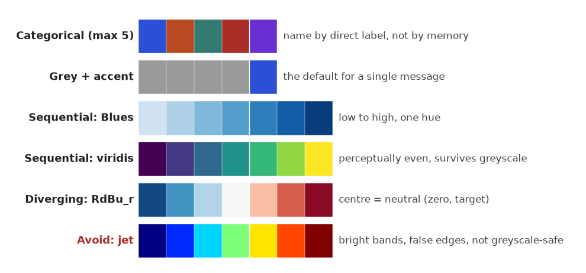
Reading the rows. Row 1 is for unordered groups. Row 2 is the workhorse of this chapter: four grey bars and one blue. Rows 3 and 4 run from light (low) to dark (high). Row 5 has its neutral middle at the centre. Row 6, the rainbow, looks vivid but the eye sees bands (yellow and cyan look like peaks), the order of the colours is not obvious (is green higher than orange?), and it turns into meaningless grey stripes when printed.
About 1 in 12 men and 1 in 200 women have a colour-vision deficiency, most often red-green (deuteranopia and protanopia). The fix is partly colour choice and partly redundant coding: also vary marker shape, line style or add direct labels. The block below simulates two common types with published matrices (Machado, Oliveira and Fernandes, 2009; an approximation, not a medical test) and measures how different the colours still look using ΔE, the distance between two colours in the CIE Lab space (about 2 is barely visible, 10 or more is clearly different).
import numpy as np, pandas as pd, matplotlib.pyplot as plt
plt.rcParams.update({"figure.figsize": (8, 4.2), "figure.dpi": 110, "font.size": 12,
"axes.titlesize": 14, "axes.titleweight": "bold", "axes.titlelocation": "left",
"axes.spines.top": False, "axes.spines.right": False})
BLUE, ORANGE, TEAL, RED, PURPLE, GREY = "#2b4fd6", "#b84a22", "#357a70", "#aa2d26", "#6a2fd0", "#9a9a9a"
from matplotlib.colors import to_rgb
def lin(c):
c = np.asarray(c, float)
return np.where(c <= 0.04045, c / 12.92, ((c + 0.055) / 1.055) ** 2.4)
def delin(c):
c = np.clip(c, 0, 1)
return np.where(c <= 0.0031308, c * 12.92, 1.055 * c ** (1 / 2.4) - 0.055)
def to_lab(rgb):
M = np.array([[0.4124, 0.3576, 0.1805], [0.2126, 0.7152, 0.0722], [0.0193, 0.1192, 0.9505]])
xyz = (M @ lin(rgb)) / np.array([0.95047, 1.0, 1.08883])
f = np.where(xyz > 216 / 24389, np.cbrt(xyz), (24389 / 27 * xyz + 16) / 116)
return np.array([116 * f[1] - 16, 500 * (f[0] - f[1]), 200 * (f[1] - f[2])])
DEUT = np.array([[0.367322, 0.860646, -0.227968], [0.280085, 0.672501, 0.047413], [-0.011820, 0.042940, 0.968881]])
PROT = np.array([[0.152286, 1.052583, -0.204868], [0.114503, 0.786281, 0.099216], [-0.003882, -0.048116, 1.051998]])
sim = lambda h, M: delin(M @ lin(to_rgb(h)))
grey = lambda h: np.repeat(delin(lin(to_rgb(h)) @ np.array([0.2126, 0.7152, 0.0722])), 3)
def pair_de(a, b):
return np.linalg.norm(to_lab(a) - to_lab(b))
house = [BLUE, ORANGE, TEAL, RED, PURPLE]
classic = ["#d62728", "#2ca02c", "#1f77b4", "#ff7f0e", "#9467bd"]
conds = [("normal", lambda h: np.array(to_rgb(h))), ("deuteranopia", lambda h: sim(h, DEUT)),
("protanopia", lambda h: sim(h, PROT)), ("greyscale", grey)]
fig, ax = plt.subplots(figsize=(8, 5))
y = 0
for pname, pal in [("House palette", house), ("Red/green palette", classic)]:
for cname, f in conds:
for j, h in enumerate(pal):
ax.add_patch(plt.Rectangle((j, -y), 0.94, 0.8, color=np.clip(f(h), 0, 1)))
ax.text(-0.2, -y + 0.4, f"{pname}: {cname}", ha="right", va="center", fontsize=10.5)
y += 1
y += 0.5
ax.set(xlim=(-4.6, 5), ylim=(-y + 0.3, 1)); ax.axis("off")
fig.tight_layout()
fig.savefig("ch08v_cvd.png", dpi=110)
for pname, pal in [("house", house), ("house 3", house[:3]), ("classic", classic)]:
out = []
for cname, M in [("normal", None), ("deut", DEUT), ("prot", PROT)]:
cols = [np.array(to_rgb(h)) if M is None else sim(h, M) for h in pal]
d = [(np.linalg.norm(to_lab(a) - to_lab(b)), i, j) for i, a in enumerate(cols) for j, b in enumerate(cols) if i < j]
out.append(f"{cname} {min(d)[0]:.1f}")
print(f"{pname:<8} smallest pairwise delta-E:", ", ".join(out))
print("(house 3 = blue, orange, teal)")
worst = sorted(((pair_de(sim(a, DEUT), sim(b, DEUT)), na, nb) for (na, a), (nb, b) in
[(("blue", BLUE), ("orange", ORANGE)), (("blue", BLUE), ("teal", TEAL)), (("orange", ORANGE), ("teal", TEAL)),
(("orange", ORANGE), ("red", RED)), (("teal", TEAL), ("red", RED)), (("blue", BLUE), ("purple", PURPLE))]))[:2]
print("house pairs that collide most under deuteranopia:", [(a, b, round(float(d), 1)) for d, a, b in worst])
print("saved")house smallest pairwise delta-E: normal 14.4, deut 3.3, prot 6.9
house 3 smallest pairwise delta-E: normal 81.0, deut 51.0, prot 36.5
classic smallest pairwise delta-E: normal 38.2, deut 7.3, prot 4.6
(house 3 = blue, orange, teal)
house pairs that collide most under deuteranopia: [('blue', 'purple', 3.3), ('orange', 'red', 10.8)]
saved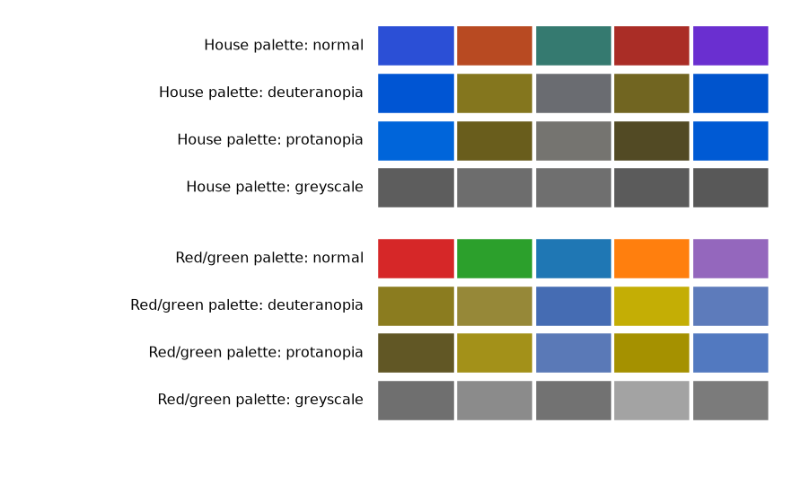
How to read it. The printed numbers are the smallest pairwise ΔE among the colours under each condition. Honest result: no five-colour palette survives colour blindness unaided. Under normal vision the house palette's closest pair is ΔE 14.4 (clearly different), but under simulated deuteranopia its blue and purple collapse to 3.3 (nearly the same), and under protanopia the closest pair is 6.9. The classic palette fares no better where it counts: red and green, 120 apart for normal vision, fall to 7.3 under deuteranopia. The house palette's first three colours (blue, orange, teal) keep a large gap (smallest ΔE 36.5 or more in every condition), which is exactly why this chapter keeps most charts to three colours or fewer. Look also at the greyscale rows: all five house colours turn into similar mid-greys, so in a black-and-white print only labels and markers can tell series apart. The rules that follow: never put blue and purple side by side without another cue, label lines directly, and add a second cue (marker, dash, label) whenever two series must be told apart.
lin and delin convert between the stored sRGB values and linear light. The simulation matrices act on linear light, not on the stored numbers, a common mistake in hand-made simulations.sim(h, DEUT) multiplies a colour by the 3x3 matrix for deuteranopia (no working green receptors); PROT does the same for protanopia (no red).to_lab converts to CIE Lab, a colour space designed so that equal numeric distances look roughly equal to the eye. pair_de is the straight-line distance, called ΔE (CIE76).grey keeps only luminance (Y), i.e. what a black-and-white printer would do: the swatches that become the same grey cannot be told apart in print.For text and thin lines the key number is contrast ratio: (L1 + 0.05) / (L2 + 0.05), where L is the relative luminance (0 black, 1 white) of the lighter and darker colour. The accessibility guideline WCAG asks for at least 4.5:1 for normal text and 3:1 for large text and graphics.
import numpy as np
from matplotlib.colors import to_rgb
def luminance(hex_colour):
c = np.array(to_rgb(hex_colour))
c = np.where(c <= 0.04045, c / 12.92, ((c + 0.055) / 1.055) ** 2.4)
return float(c @ np.array([0.2126, 0.7152, 0.0722]))
def contrast(a, b="#ffffff"):
la, lb = sorted([luminance(a), luminance(b)], reverse=True)
return (la + 0.05) / (lb + 0.05)
for name, h in [("light grey (context marks)", "#9a9a9a"), ("mid grey (text)", "#666666"), ("dark grey (text)", "#333333"),
("blue", "#2b4fd6"), ("orange", "#b84a22"), ("teal", "#357a70"), ("red", "#aa2d26"), ("purple", "#6a2fd0")]:
ratio = contrast(h)
verdict = "text ok" if ratio >= 4.5 else ("graphics ok" if ratio >= 3 else "too faint")
print(f"{name:<27}{h} {ratio:5.2f}:1 {verdict}")light grey (context marks) #9a9a9a 2.81:1 too faint
mid grey (text) #666666 5.74:1 text ok
dark grey (text) #333333 12.63:1 text ok
blue #2b4fd6 6.58:1 text ok
orange #b84a22 5.20:1 text ok
teal #357a70 5.04:1 text ok
red #aa2d26 6.75:1 text ok
purple #6a2fd0 7.17:1 text okRead the table: the five accent colours all pass for text on white (5.0:1 or better). The light grey used for context marks is 2.8:1: fine for a gridline or a de-emphasised bar, not for text. That is why labels in this chapter use the darker grey #666666 (5.7:1) when text must be grey. White text on a coloured bar needs the same check: white on the blue bar is 6.6:1, white on the light grey bar is 2.8:1 (too faint).
ax.text(..., color="#9a9a9a"). Right: check the contrast ratio (4.5:1 or better), or use #333333 for text and keep the pale grey for marks.| Element | Rule | Why |
|---|---|---|
| Title | Left-aligned, bold, one sentence stating the finding, 14 to 16 pt | Eyes start top-left; readers should not hunt for the point |
| Subtitle / axis labels | Regular weight, 11 to 12 pt, units included | Context without competing with the title |
| Tick labels | 10 to 12 pt, horizontal wherever possible | Rotated text is slow to read; flip the chart instead |
| Annotations | Same font as the chart, dark grey, close to the mark | One typeface per chart; no legend trips |
| Numbers | Thousands separators; consistent decimals; units in the label, not every tick | Fast, unambiguous reading |
| Legend | Delete it if direct labels fit; otherwise place it near the data | Every look away from the data costs attention |
| Gridlines | Faint (#dddddd), only in the direction that helps, behind the data | Guides without noise |
| Aspect ratio | Time series wider than tall (about 2:1); scatter close to square | Slopes of lines stay readable (banking to 45 degrees) |
| Whitespace | Margins around the plot, space between panels, no overlapping labels | Crowding is the main cause of a "busy" chart |
| Alignment | Align titles, axes and source notes to the same left edge | Looks deliberate; easy to scan |
Each figure below shows the chart as many people first draw it (left, BEFORE) and the repaired version (right, AFTER), drawn from the same data in one script. Under each is a numbered list of exactly what changed and why.
import numpy as np, pandas as pd, matplotlib.pyplot as plt
plt.rcParams.update({"figure.figsize": (8, 4.2), "figure.dpi": 110, "font.size": 12,
"axes.titlesize": 14, "axes.titleweight": "bold", "axes.titlelocation": "left",
"axes.spines.top": False, "axes.spines.right": False})
BLUE, ORANGE, TEAL, RED, PURPLE, GREY = "#2b4fd6", "#b84a22", "#357a70", "#aa2d26", "#6a2fd0", "#9a9a9a"
rev = pd.Series({"Wireless earbuds": 412, "Smart watch": 388, "Air fryer": 301, "Yoga mat": 187,
"Backpack": 176, "Desk lamp": 152, "Water bottle": 129}).sort_values(ascending=False)
top2 = rev.iloc[:2].sum() / rev.sum()
print(f"top two products: {rev.iloc[:2].sum()} of {rev.sum()} = {top2:.1%}")
fig, (a, b) = plt.subplots(1, 2, figsize=(11, 4.4), gridspec_kw={"width_ratios": [1, 1.1]})
# BEFORE
a.pie(rev, colors=plt.cm.rainbow(np.linspace(0, 1, len(rev))), autopct="%1.1f%%", textprops={"fontsize": 8})
a.legend(rev.index, loc="center left", bbox_to_anchor=(0.95, 0.5), fontsize=9)
a.set_title("Revenue share by product", fontsize=12, fontweight="normal", loc="center")
# AFTER
s = rev.sort_values()
bars = b.barh(s.index, s.values, color=[GREY] * 5 + [BLUE] * 2, height=0.7)
b.bar_label(bars, labels=[f"{v} ({v / rev.sum():.0%})" for v in s.values], padding=4)
b.set_xlim(0, 560); b.set_xlabel("Revenue (Rs thousand)"); b.tick_params(axis="y", length=0)
b.set_title(f"Two products bring in {top2:.0%} of revenue")
fig.text(0.01, 0.97, "BEFORE", color=RED, fontweight="bold", fontsize=13, va="top")
fig.text(0.52, 0.97, "AFTER", color=TEAL, fontweight="bold", fontsize=13, va="top")
fig.tight_layout(rect=(0, 0, 1, 0.94))
fig.savefig("ch08v_makeover1.png", dpi=110)
print("saved")top two products: 800 of 1745 = 45.8%
saved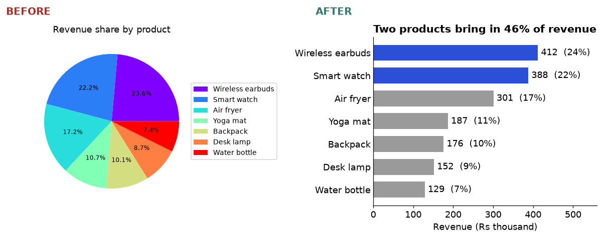
import numpy as np, pandas as pd, matplotlib.pyplot as plt
plt.rcParams.update({"figure.figsize": (8, 4.2), "figure.dpi": 110, "font.size": 12,
"axes.titlesize": 14, "axes.titleweight": "bold", "axes.titlelocation": "left",
"axes.spines.top": False, "axes.spines.right": False})
BLUE, ORANGE, TEAL, RED, PURPLE, GREY = "#2b4fd6", "#b84a22", "#357a70", "#aa2d26", "#6a2fd0", "#9a9a9a"
rng = np.random.default_rng(8)
months = np.arange(12)
walks = 100 + rng.normal(1.0, 3.5, (8, 12)).cumsum(axis=1)
sales = pd.DataFrame(walks.T, columns=[f"Region {c}" for c in "ABCDEFGH"])
growth = (sales.iloc[-1] / sales.iloc[0] - 1)
best = growth.idxmax()
print(growth.round(3).to_string())
print(f"best: {best} {growth[best]:+.0%}; median of the others: {growth.drop(best).median():+.0%}")
fig, (a, b) = plt.subplots(1, 2, figsize=(11, 4.4), sharey=True)
a.plot(months, sales.values) # BEFORE: default colours, one legend entry per line
a.legend(sales.columns, fontsize=8, loc="upper left", ncol=2); a.set_title("Sales by region", fontsize=12, fontweight="normal", loc="center")
for col in sales.columns: # AFTER
if col != best:
b.plot(months, sales[col], color="#cccccc", lw=1.8)
b.plot(months, sales[best], color=BLUE, lw=3.2)
b.text(11.2, sales[best].iloc[-1], f"{best}\n{growth[best]:+.0%}", color=BLUE, fontweight="bold", va="center")
b.text(11.2, sales.drop(columns=best).iloc[-1].median(), "other seven\n(grey)", color="#666", va="center", fontsize=10.5)
b.set_xlim(0, 13.5); b.set_xticks([0, 3, 6, 9, 11], ["Jan", "Apr", "Jul", "Oct", "Dec"])
b.set_ylabel(""); a.set_ylabel("Sales index (Jan = 100)")
b.set_title(f"{best} grew {growth[best]:.0%}\nthe other seven: {growth.drop(best).median():.0%} (median)", fontsize=13)
fig.text(0.01, 0.97, "BEFORE", color=RED, fontweight="bold", fontsize=13, va="top")
fig.text(0.50, 0.97, "AFTER", color=TEAL, fontweight="bold", fontsize=13, va="top")
fig.tight_layout(rect=(0, 0, 1, 0.94))
fig.savefig("ch08v_makeover2.png", dpi=110)
print("saved")Region A 0.022
Region B 0.142
Region C 0.070
Region D -0.068
Region E 0.200
Region F 0.188
Region G 0.289
Region H -0.022
best: Region G +29%; median of the others: +7%
saved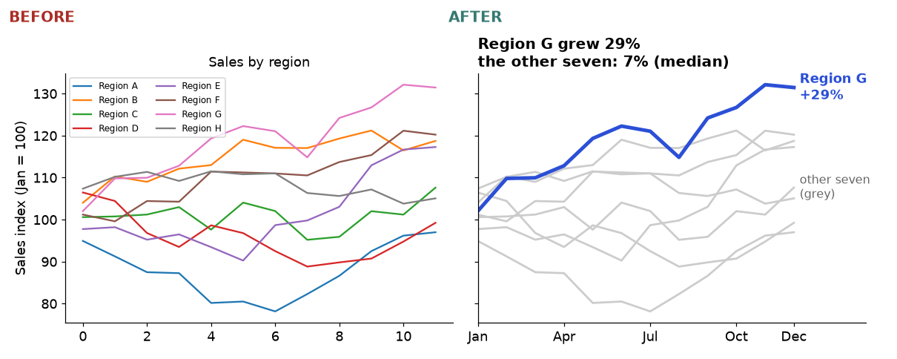
import numpy as np, pandas as pd, matplotlib.pyplot as plt
plt.rcParams.update({"figure.figsize": (8, 4.2), "figure.dpi": 110, "font.size": 12,
"axes.titlesize": 14, "axes.titleweight": "bold", "axes.titlelocation": "left",
"axes.spines.top": False, "axes.spines.right": False})
BLUE, ORANGE, TEAL, RED, PURPLE, GREY = "#2b4fd6", "#b84a22", "#357a70", "#aa2d26", "#6a2fd0", "#9a9a9a"
stores = pd.Series({"Andheri": 3790, "Bandra": 4180, "Colaba": 3640, "Dadar": 3920, "Powai": 3705, "Thane": 3860})
lo, hi = stores.min(), stores.max()
print(f"largest / smallest = {hi / lo:.3f}; visual ratio on axis starting at 3,500: {(hi - 3500) / (lo - 3500):.1f}")
fig, (a, b) = plt.subplots(1, 2, figsize=(11, 4.4))
a.bar(stores.index, stores.values, color="#4c72b0", label="Sales") # BEFORE: alphabetical, truncated, grid, legend
a.set_ylim(3500, 4250); a.grid(True); a.legend(); a.set_title("Store sales", fontsize=12, fontweight="normal", loc="center")
plt.setp(a.get_xticklabels(), rotation=45)
s = stores.sort_values() # AFTER
bars = b.barh(s.index, s.values, color=GREY, height=0.7)
b.bar_label(bars, labels=[f"{v:,}" for v in s.values], padding=4)
b.set_xlim(0, 4700); b.set_xticks([]); b.spines["bottom"].set_visible(False); b.tick_params(axis="y", length=0)
b.set_title(f"All six stores sell within {hi / lo - 1:.0%} of each other")
b.set_xlabel("Sales (Rs thousand), axis starts at zero")
fig.text(0.01, 0.97, "BEFORE", color=RED, fontweight="bold", fontsize=13, va="top")
fig.text(0.50, 0.97, "AFTER", color=TEAL, fontweight="bold", fontsize=13, va="top")
fig.tight_layout(rect=(0, 0, 1, 0.94))
fig.savefig("ch08v_makeover3.png", dpi=110)
print("saved")largest / smallest = 1.148; visual ratio on axis starting at 3,500: 4.9
saved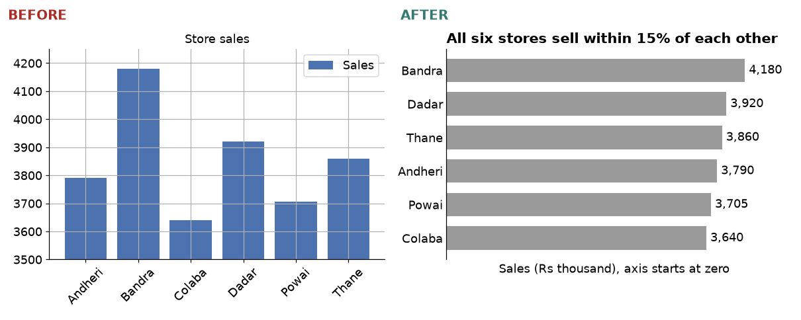
import numpy as np, pandas as pd, matplotlib.pyplot as plt
plt.rcParams.update({"figure.figsize": (8, 4.2), "figure.dpi": 110, "font.size": 12,
"axes.titlesize": 14, "axes.titleweight": "bold", "axes.titlelocation": "left",
"axes.spines.top": False, "axes.spines.right": False})
BLUE, ORANGE, TEAL, RED, PURPLE, GREY = "#2b4fd6", "#b84a22", "#357a70", "#aa2d26", "#6a2fd0", "#9a9a9a"
rng = np.random.default_rng(8)
n = 300
category = rng.choice(["Electronics", "Home", "Fashion", "Grocery"], n, p=[0.2, 0.25, 0.3, 0.25])
mu = pd.Series({"Electronics": 7.4, "Home": 6.8, "Fashion": 6.4, "Grocery": 5.6})[category].to_numpy()
orders = pd.DataFrame({
"date": pd.Timestamp("2025-01-01") + pd.to_timedelta(rng.integers(0, 180, n), unit="D"),
"city": rng.choice(["Delhi", "Mumbai", "Pune"], n, p=[0.40, 0.35, 0.25]),
"category": category,
"channel": rng.choice(["App", "Web"], n, p=[0.6, 0.4]),
"amount": np.round(rng.lognormal(mu, 0.6)).astype(int)})
order = ["Electronics", "Home", "Fashion", "Grocery"]
grid = orders.pivot_table(index="category", columns="city", values="amount", aggfunc="mean").loc[order, ["Delhi", "Mumbai", "Pune"]]
fig, (a, b) = plt.subplots(1, 2, figsize=(11, 4.2))
im = a.imshow(grid.values, cmap="jet", aspect="auto") # BEFORE: rainbow, no numbers
a.set_xticks(range(3), grid.columns); a.set_yticks(range(4), grid.index); a.set_title("Average order", fontsize=12, fontweight="normal", loc="center")
fig.colorbar(im, ax=a)
im2 = b.imshow(grid.values, cmap="Blues", vmin=0, vmax=2500, aspect="auto") # AFTER
b.set_xticks(range(3), grid.columns); b.set_yticks(range(4), grid.index); b.xaxis.tick_top(); b.tick_params(length=0)
for i in range(4):
for j in range(3):
v = grid.values[i, j]
b.text(j, i, f"{v:,.0f}", ha="center", va="center", fontweight="bold", fontsize=12, color="white" if v > 1250 else "#222")
for sp in b.spines.values(): sp.set_visible(False)
ratio = grid.loc["Electronics"] / grid.drop("Electronics").max(axis=0) # Electronics vs the next-largest category
b.set_title(f"Electronics orders are {ratio.min():.1f} to {ratio.max():.1f}\ntimes the next category", pad=30, loc="left", fontsize=13)
fig.colorbar(im2, ax=b, label="Average order (Rs)")
fig.text(0.01, 0.97, "BEFORE", color=RED, fontweight="bold", fontsize=13, va="top")
fig.text(0.50, 0.97, "AFTER", color=TEAL, fontweight="bold", fontsize=13, va="top")
fig.tight_layout(rect=(0, 0, 1, 0.94))
fig.savefig("ch08v_makeover4.png", dpi=110)
print(ratio.round(1).to_string())
print("saved")city
Delhi 2.5
Mumbai 2.6
Pune 1.5
saved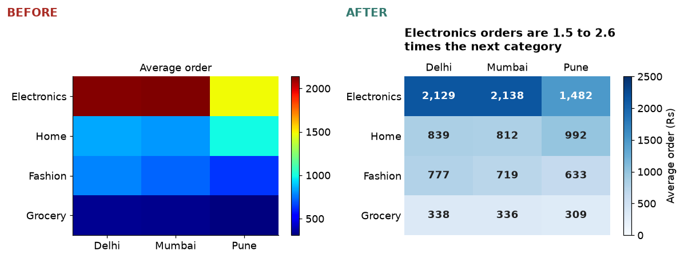
jet creates false bands and fails in greyscale.vmin=0, vmax=2500, so a second heat map of next quarter would use the same scale and be comparable.import numpy as np, pandas as pd, matplotlib.pyplot as plt
plt.rcParams.update({"figure.figsize": (8, 4.2), "figure.dpi": 110, "font.size": 12,
"axes.titlesize": 14, "axes.titleweight": "bold", "axes.titlelocation": "left",
"axes.spines.top": False, "axes.spines.right": False})
BLUE, ORANGE, TEAL, RED, PURPLE, GREY = "#2b4fd6", "#b84a22", "#357a70", "#aa2d26", "#6a2fd0", "#9a9a9a"
rng = np.random.default_rng(8)
names = ["Earbuds", "Watch", "Air fryer", "Yoga mat", "Backpack", "Lamp"]
level = np.array([70, 65, 50, 30, 28, 25])
trend = np.array([4, 1, -1, 0.5, 0, -2])
units = pd.DataFrame(level + np.outer(np.arange(6), trend) + rng.normal(0, 2.5, (6, 6)), columns=names).round(0)
units.index = ["Jan", "Feb", "Mar", "Apr", "May", "Jun"]
change = (units.iloc[-1] - units.iloc[0]).astype(int)
print(change.to_string())
fig = plt.figure(figsize=(11, 5.2))
a = fig.add_axes([0.04, 0.12, 0.30, 0.74])
units.plot.bar(stacked=True, ax=a, width=0.8, legend=False) # BEFORE: six default colours stacked
a.legend(names, fontsize=8, bbox_to_anchor=(1.0, 1), loc="upper left"); a.set_title("Units by product", fontsize=12, fontweight="normal", loc="center")
plt.setp(a.get_xticklabels(), rotation=0)
gs = fig.add_gridspec(2, 3, left=0.50, right=0.98, bottom=0.12, top=0.84, hspace=0.45, wspace=0.12)
for k, name in enumerate(names): # AFTER: small multiples, same scale
ax = fig.add_subplot(gs[k // 3, k % 3])
color = BLUE if name == change.idxmax() else GREY
ax.plot(range(6), units[name], color=color, lw=3)
ax.set_ylim(0, 95); ax.set_title(f"{name} ({change[name]:+d})", fontsize=11, color="#222" if color == BLUE else "#555", loc="left")
ax.set_xticks([0, 5], ["Jan", "Jun"]); ax.tick_params(labelsize=9)
if k % 3: ax.set_yticklabels([])
grew = change[change > 10]
assert len(grew) == 1 # the title below claims exactly one
fig.text(0.50, 0.90, f"Only {grew.index[0]} grew by more than 10 units", fontsize=14, fontweight="bold")
fig.text(0.01, 0.97, "BEFORE", color=RED, fontweight="bold", fontsize=13, va="top")
fig.text(0.46, 0.97, "AFTER", color=TEAL, fontweight="bold", fontsize=13, va="top")
fig.savefig("ch08v_makeover5.png", dpi=110)
print("saved")Earbuds 22
Watch 2
Air fryer -2
Yoga mat 7
Backpack 5
Lamp -6
saved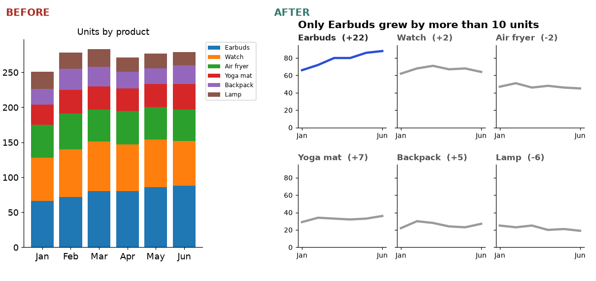
RGB (red, green, blue amounts) describes what a screen emits, not what an eye perceives: equal steps in RGB look unequal. CIE Lab (L for lightness, a for green-red, b for blue-yellow) and its modern relatives (CIECAM02, OKLab, HCL) are built so that equal distances look about equal. A good sequential colormap should rise steadily in lightness L, so that a grey-scale print is still ordered. viridis, magma and cividis were designed this way (cividis also for colour-blind readers); jet is not, its lightness goes up and down, which creates fake boundaries. When you design your own palette, choose hues with different lightness as well: that is what keeps it readable when the hue difference is lost (colour blindness, projectors, print). Tools such as ColorBrewer and Viz Palette let you test a palette.
The title is the most-read element and the one most often wasted on a label. Use this formula: subject + verb + number + comparison. If you cannot fill all four slots, you have not found the finding yet.
| Topic title (weak) | Finding title (strong) | What was added |
|---|---|---|
| Sales by city | Delhi sold the most: Rs 3,298 of Rs 9,340 | A verb, a number, a share |
| Monthly sales | The festive season lifted sales to 620k in Dec 2024 | A cause and a peak |
| Order amount distribution | Most orders are small; a few big ones pull the mean up | The shape, in words |
| Returns by reason | Two reasons cause 64% of returns | A count and a priority |
| Retention | Month-1 retention rose from 44% to 54% | Direction and size |
| Q1 vs Q2 | Mumbai lost Rs 24.6k in Q2, more than Delhi gained | A comparison that forces a decision |
Almost every good analytics story has three beats. Situation: what is true (the headline number). Complication: what is surprising or wrong (where the number comes from). Resolution: what to do about it. We build a three-slide example from the same 300 synthetic orders (all figures fall out of the data; the recommendation is an illustration, not a real business instruction).
import numpy as np, pandas as pd, matplotlib.pyplot as plt
plt.rcParams.update({"figure.figsize": (8, 4.2), "figure.dpi": 110, "font.size": 12,
"axes.titlesize": 14, "axes.titleweight": "bold", "axes.titlelocation": "left",
"axes.spines.top": False, "axes.spines.right": False})
BLUE, ORANGE, TEAL, RED, PURPLE, GREY = "#2b4fd6", "#b84a22", "#357a70", "#aa2d26", "#6a2fd0", "#9a9a9a"
rng = np.random.default_rng(8)
n = 300
category = rng.choice(["Electronics", "Home", "Fashion", "Grocery"], n, p=[0.2, 0.25, 0.3, 0.25])
mu = pd.Series({"Electronics": 7.4, "Home": 6.8, "Fashion": 6.4, "Grocery": 5.6})[category].to_numpy()
orders = pd.DataFrame({
"date": pd.Timestamp("2025-01-01") + pd.to_timedelta(rng.integers(0, 180, n), unit="D"),
"city": rng.choice(["Delhi", "Mumbai", "Pune"], n, p=[0.40, 0.35, 0.25]),
"category": category,
"channel": rng.choice(["App", "Web"], n, p=[0.6, 0.4]),
"amount": np.round(rng.lognormal(mu, 0.6)).astype(int)})
orders["month"] = orders["date"].dt.to_period("M").dt.to_timestamp()
orders["quarter"] = np.where(orders["date"] < "2025-04-01", "Q1", "Q2")
m = orders.groupby("month")["amount"].sum() / 1000
q = orders.groupby("quarter")["amount"].sum() / 1000
change = q["Q2"] / q["Q1"] - 1
print(m.round(1).to_string())
print(f"Q1 {q['Q1']:.1f}k, Q2 {q['Q2']:.1f}k, change {change:+.1%}")
fig, ax = plt.subplots(figsize=(8, 4.5))
colors = [GREY] * 3 + [BLUE] * 3
bars = ax.bar([d.strftime("%b") for d in m.index], m.values, color=colors, width=0.62)
ax.bar_label(bars, labels=[f"{v:.0f}" for v in m.values], padding=3, fontsize=12)
for x0, label in [(1, f"Q1: Rs {q['Q1']:.1f}k"), (4, f"Q2: Rs {q['Q2']:.1f}k")]:
ax.text(x0, 66, label, ha="center", fontsize=13, fontweight="bold", color="#333" if x0 == 1 else BLUE)
ax.set_ylim(0, 72); ax.set_yticks([]); ax.spines["left"].set_visible(False)
fig.suptitle(f"Sales fell {abs(change):.0%} from Q1 to Q2", x=0.02, ha="left", fontsize=17, fontweight="bold")
fig.text(0.02, 0.855, "Monthly sales, Rs thousand, Jan to Jun 2025", fontsize=12, color="#555")
fig.text(0.02, 0.02, "Source: orders table (synthetic, seed 8)", fontsize=9.5, color="#666")
fig.text(0.98, 0.02, "1 of 3", fontsize=9.5, color="#666", ha="right")
fig.subplots_adjust(left=0.05, right=0.98, top=0.8, bottom=0.12)
fig.savefig("ch08v_story1.png", dpi=110)
print("saved")month
2025-01-01 42.0
2025-02-01 48.3
2025-03-01 55.9
2025-04-01 33.3
2025-05-01 49.9
2025-06-01 46.9
Q1 146.2k, Q2 130.1k, change -11.0%
saved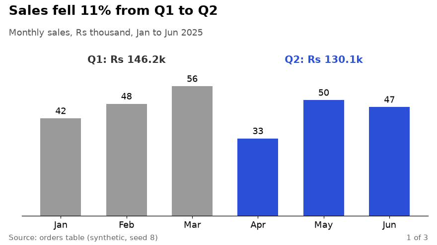
import numpy as np, pandas as pd, matplotlib.pyplot as plt
plt.rcParams.update({"figure.figsize": (8, 4.2), "figure.dpi": 110, "font.size": 12,
"axes.titlesize": 14, "axes.titleweight": "bold", "axes.titlelocation": "left",
"axes.spines.top": False, "axes.spines.right": False})
BLUE, ORANGE, TEAL, RED, PURPLE, GREY = "#2b4fd6", "#b84a22", "#357a70", "#aa2d26", "#6a2fd0", "#9a9a9a"
rng = np.random.default_rng(8)
n = 300
category = rng.choice(["Electronics", "Home", "Fashion", "Grocery"], n, p=[0.2, 0.25, 0.3, 0.25])
mu = pd.Series({"Electronics": 7.4, "Home": 6.8, "Fashion": 6.4, "Grocery": 5.6})[category].to_numpy()
orders = pd.DataFrame({
"date": pd.Timestamp("2025-01-01") + pd.to_timedelta(rng.integers(0, 180, n), unit="D"),
"city": rng.choice(["Delhi", "Mumbai", "Pune"], n, p=[0.40, 0.35, 0.25]),
"category": category,
"channel": rng.choice(["App", "Web"], n, p=[0.6, 0.4]),
"amount": np.round(rng.lognormal(mu, 0.6)).astype(int)})
orders["quarter"] = np.where(orders["date"] < "2025-04-01", "Q1", "Q2")
city = (orders.pivot_table(index="city", columns="quarter", values="amount", aggfunc="sum") / 1000)
delta = (city["Q2"] - city["Q1"]).sort_values()
print(delta.round(1).to_string())
print(f"total change {delta.sum():.1f}k")
colors = {"Delhi": BLUE, "Mumbai": ORANGE, "Pune": GREY}
fig, ax = plt.subplots(figsize=(8, 4.5))
bars = ax.barh(delta.index, delta.values, color=[colors[c] for c in delta.index], height=0.6)
for bar, v in zip(bars, delta.values):
ax.text(v + (0.8 if v > 0 else -0.8), bar.get_y() + bar.get_height() / 2, f"{v:+.1f}k",
ha="left" if v > 0 else "right", va="center", fontsize=14, fontweight="bold")
ax.axvline(0, color="#333", lw=1)
ax.set_xlim(-34, 28); ax.set_xticks([]); ax.spines["bottom"].set_visible(False); ax.spines["left"].set_visible(False)
ax.tick_params(axis="y", length=0, labelsize=14)
fig.suptitle(f"Mumbai lost Rs {abs(delta['Mumbai']):.1f}k, more than Delhi gained (Rs {delta['Delhi']:.1f}k)",
x=0.02, ha="left", fontsize=17, fontweight="bold")
fig.text(0.02, 0.855, "Change in sales, Q2 minus Q1, Rs thousand", fontsize=12, color="#555")
fig.text(0.02, 0.02, "Source: orders table (synthetic, seed 8)", fontsize=9.5, color="#666")
fig.text(0.98, 0.02, "2 of 3", fontsize=9.5, color="#666", ha="right")
fig.subplots_adjust(left=0.12, right=0.98, top=0.8, bottom=0.12)
fig.savefig("ch08v_story2.png", dpi=110)
print("saved")city
Mumbai -24.6
Pune -11.2
Delhi 19.6
total change -16.1k
saved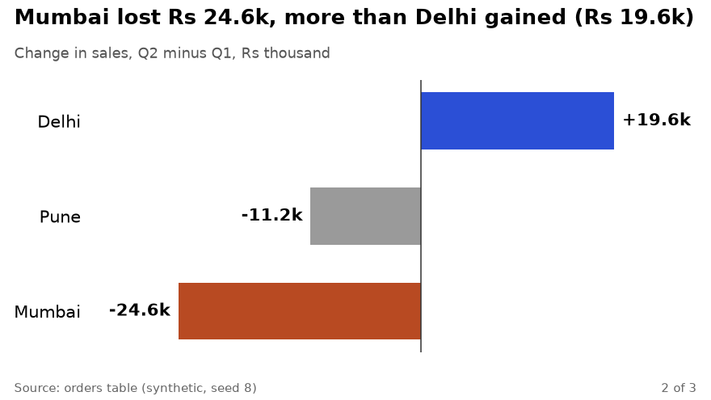
import numpy as np, pandas as pd, matplotlib.pyplot as plt
plt.rcParams.update({"figure.figsize": (8, 4.2), "figure.dpi": 110, "font.size": 12,
"axes.titlesize": 14, "axes.titleweight": "bold", "axes.titlelocation": "left",
"axes.spines.top": False, "axes.spines.right": False})
BLUE, ORANGE, TEAL, RED, PURPLE, GREY = "#2b4fd6", "#b84a22", "#357a70", "#aa2d26", "#6a2fd0", "#9a9a9a"
rng = np.random.default_rng(8)
n = 300
category = rng.choice(["Electronics", "Home", "Fashion", "Grocery"], n, p=[0.2, 0.25, 0.3, 0.25])
mu = pd.Series({"Electronics": 7.4, "Home": 6.8, "Fashion": 6.4, "Grocery": 5.6})[category].to_numpy()
orders = pd.DataFrame({
"date": pd.Timestamp("2025-01-01") + pd.to_timedelta(rng.integers(0, 180, n), unit="D"),
"city": rng.choice(["Delhi", "Mumbai", "Pune"], n, p=[0.40, 0.35, 0.25]),
"category": category,
"channel": rng.choice(["App", "Web"], n, p=[0.6, 0.4]),
"amount": np.round(rng.lognormal(mu, 0.6)).astype(int)})
orders["quarter"] = np.where(orders["date"] < "2025-04-01", "Q1", "Q2")
mum = orders[orders["city"] == "Mumbai"]
cat = (mum.pivot_table(index="category", columns="quarter", values="amount", aggfunc="sum") / 1000)
delta = (cat["Q2"] - cat["Q1"]).sort_values()
share = delta.min() / delta.sum()
cnt = mum.groupby("quarter").size()
avg = mum.groupby("quarter")["amount"].mean()
print(delta.round(1).to_string())
print(f"Electronics share of Mumbai's fall: {share:.0%}")
print(f"Mumbai orders {cnt['Q1']} -> {cnt['Q2']} ({cnt['Q2'] / cnt['Q1'] - 1:+.0%}); average order {avg['Q1']:.0f} -> {avg['Q2']:.0f} ({avg['Q2'] / avg['Q1'] - 1:+.0%})")
fig, ax = plt.subplots(figsize=(8, 4.5))
cols = [ORANGE if c == delta.idxmin() else "#e6c3b3" for c in delta.index]
bars = ax.barh(delta.index, delta.values, color=cols, height=0.6)
for bar, v in zip(bars, delta.values):
ax.text(v - 0.5, bar.get_y() + bar.get_height() / 2, f"{v:.1f}k", ha="right", va="center", fontsize=14, fontweight="bold")
ax.set_xlim(-19, 1); ax.set_xticks([]); ax.spines["bottom"].set_visible(False); ax.spines["left"].set_visible(False)
ax.yaxis.tick_right(); ax.tick_params(axis="y", length=0, labelsize=14)
fig.suptitle(f"Electronics explains {share:.0%} of Mumbai's Q2 fall", x=0.02, ha="left", fontsize=17, fontweight="bold")
fig.text(0.02, 0.855, "Mumbai: change in sales by category, Q2 minus Q1, Rs thousand", fontsize=12, color="#555")
fig.text(0.02, 0.26, f"Next step: check Mumbai Electronics stock and pricing. Orders fell {abs(cnt['Q2'] / cnt['Q1'] - 1):.0%} and\n"
f"the average order fell {abs(avg['Q2'] / avg['Q1'] - 1):.0%}, so both volume and basket size need an answer.",
fontsize=12, color="#222", bbox=dict(boxstyle="round,pad=0.5", fc="#f3f5fc", ec=BLUE), va="top")
fig.text(0.02, 0.02, "Source: orders table (synthetic, seed 8)", fontsize=9.5, color="#666")
fig.text(0.98, 0.02, "3 of 3", fontsize=9.5, color="#666", ha="right")
fig.subplots_adjust(left=0.04, right=0.80, top=0.8, bottom=0.36)
fig.savefig("ch08v_story3.png", dpi=110)
print("saved")category
Electronics -13.8
Fashion -5.5
Home -4.2
Grocery -1.1
Electronics share of Mumbai's fall: 56%
Mumbai orders 63 -> 50 (-21%); average order 1054 -> 837 (-21%)
saved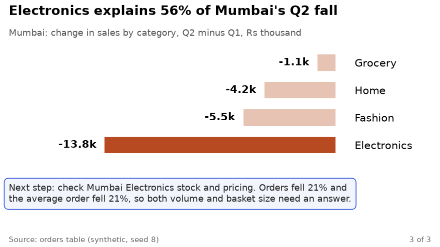
| Slide | Title (finding) | Chart choice | Evidence | Why this order |
|---|---|---|---|---|
| 1 Situation | Sales fell 11% from Q1 to Q2 | Monthly bars, quarters coloured | 146.2k to 130.1k | Agree on the facts first |
| 2 Complication | Mumbai lost Rs 24.6k, more than Delhi gained (Rs 19.6k) | Diverging bars by city, city colours | Delhi +19.6, Pune -11.2, Mumbai -24.6 | Narrow from "company" to "where" |
| 3 Resolution | Electronics explains 56% of Mumbai's Q2 fall | Bars by category, one accent | Electronics -13.8 of -24.6 | Narrow to "what", then ask |
f"{share:.0%}") so a changed dataset updates the story and cannot leave a stale claim. Check: 13.8 / 24.6 = 56%.Problem 8.11.1 Rewrite these three chart titles as finding titles, using the numbers given: (a) "Revenue by channel" (App 180.7k, Web 95.6k); (b) "Returns by reason" (Size or fit 124 of 330); (c) "Funnel" (10,000 visited, 1,330 paid).
| (a) | App share = 180.7 / (180.7 + 95.6) = 180.7 / 276.3 = 65.4%. Title: "The app brings in 65% of revenue". |
|---|---|
| (b) | 124 / 330 = 37.6%. Title: "Size or fit causes 38% of returns, the largest single reason". |
| (c) | 1,330 / 10,000 = 13.3%. Title: "13% of visitors pay; half of carts are lost at checkout" (the second clause uses the 50% cart-to-checkout step from 8.3). |
| Check | Each title has a subject, a verb and a number, and each number is reproducible from the table. |
Two ideas from outside charts help. The pyramid principle (Barbara Minto) says to lead with the answer and then give support, exactly the opposite of the order the analysis happened in. And pre-attentive attributes: colour, size, position and motion are processed in under a quarter of a second, before conscious reading, so the single accent colour is your fastest tool. Rehearse by saying the slide's takeaway in one breath; if you cannot, simplify the slide, not the sentence. How to turn this into a written memo and a presentation for stakeholders is the subject of Chapter 14.
Edward Tufte's lie factor is the size of the effect shown in the picture divided by the size of the effect in the data. An honest graphic has a lie factor close to 1 (he suggests between 0.95 and 1.05).
import numpy as np, pandas as pd, matplotlib.pyplot as plt
plt.rcParams.update({"figure.figsize": (8, 4.2), "figure.dpi": 110, "font.size": 12,
"axes.titlesize": 14, "axes.titleweight": "bold", "axes.titlelocation": "left",
"axes.spines.top": False, "axes.spines.right": False})
BLUE, ORANGE, TEAL, RED, PURPLE, GREY = "#2b4fd6", "#b84a22", "#357a70", "#aa2d26", "#6a2fd0", "#9a9a9a"
city = pd.Series({"Delhi": 3298, "Mumbai": 3047, "Pune": 2995})
start = 2900
visual = (city["Delhi"] - start) / (city["Pune"] - start)
real = city["Delhi"] / city["Pune"]
print(f"visible bar heights with axis starting at {start}: Delhi {city['Delhi'] - start}, Pune {city['Pune'] - start}")
print(f"visual ratio = {visual:.2f}; real ratio = {real:.2f}; lie factor = {visual / real:.1f}")
fig, (a, b) = plt.subplots(1, 2, figsize=(9, 4.2))
a.bar(city.index, city.values, color=[BLUE, GREY, GREY], width=0.6)
a.set_ylim(start, 3400); a.set_title("Misleading: axis starts at 2,900")
a.text(0.97, 0.93, "Delhi looks 4.2x Pune", transform=a.transAxes, ha="right", va="top", color=RED, fontweight="bold")
b.bar(city.index, city.values, color=[BLUE, GREY, GREY], width=0.6)
b.set_ylim(0, 4000); b.set_title("Honest: axis starts at 0")
b.text(0.97, 0.93, "Delhi is really 1.10x Pune", transform=b.transAxes, ha="right", va="top", color=TEAL, fontweight="bold")
for ax in (a, b):
ax.set_yticks(ax.get_yticks()[ax.get_yticks() >= ax.get_ylim()[0]])
ax.bar_label(ax.containers[0], fmt="{:,.0f}", padding=3, fontsize=11)
fig.tight_layout()
fig.savefig("ch08v_lie_truncated.png", dpi=110)
print("saved")visible bar heights with axis starting at 2900: Delhi 398, Pune 95
visual ratio = 4.19; real ratio = 1.10; lie factor = 3.8
savedProblem 8.12.1 A bar chart of Delhi 3,298 and Pune 2,995 uses an axis that starts at 2,900. Compute the lie factor.
| Formula | visual ratio = (Delhi - start) / (Pune - start); real ratio = Delhi / Pune; lie factor = visual / real. |
|---|---|
| Plug in | Visible heights: 3,298 - 2,900 = 398 and 2,995 - 2,900 = 95. |
| Compute | Visual ratio = 398 / 95 = 4.19. Real ratio = 3,298 / 2,995 = 1.10. Lie factor = 4.19 / 1.10 = 3.8. |
| Check | With the axis at zero, the ratio is 3,298 / 2,995 = 1.10 and the lie factor is 1.0. |
| Meaning | The chart exaggerates the gap about 3.8 times. Bars encode value by length from the baseline, so cutting it breaks the code. (Line charts and dot plots encode value by position, so they may use a non-zero axis, but should say so.) |
The same series can tell opposite stories depending on which stretch you show. Choosing the window after seeing the data, and not saying so, is the oldest trick in the book.
import numpy as np, pandas as pd, matplotlib.pyplot as plt
plt.rcParams.update({"figure.figsize": (8, 4.2), "figure.dpi": 110, "font.size": 12,
"axes.titlesize": 14, "axes.titleweight": "bold", "axes.titlelocation": "left",
"axes.spines.top": False, "axes.spines.right": False})
BLUE, ORANGE, TEAL, RED, PURPLE, GREY = "#2b4fd6", "#b84a22", "#357a70", "#aa2d26", "#6a2fd0", "#9a9a9a"
months = pd.period_range("2024-01", "2025-06", freq="M").to_timestamp()
monthly = pd.Series([310, 295, 340, 360, 385, 400, 380, 410, 430, 470, 560, 620,
350, 330, 375, 405, 430, 455], index=months, name="sales_k")
fig, axs = plt.subplots(1, 3, figsize=(11, 3.8), layout="constrained")
windows = [("Nov 2024 to Jan 2025", "2024-11", "2025-01", RED), ("Jan to Oct 2024", "2024-01", "2024-10", ORANGE), ("All 18 months", "2024-01", "2025-06", BLUE)]
titles = ["'Sales crashed'", "'Steady growth'", "The honest picture"]
for ax, (label, a, b, color), title in zip(axs, windows, titles):
s = monthly.loc[a:b]
ax.plot(s.index, s.values, color=color, lw=2.8, marker="o", ms=4)
ax.set_title(title, fontsize=13); ax.set_xlabel(label)
ax.set_xticks(s.index[::max(1, len(s) // 4)], [d.strftime("%b %y") for d in s.index[::max(1, len(s) // 4)]], fontsize=9)
ax.set_ylim(0, 700)
axs[0].set_ylabel("Sales (Rs thousand)")
fig.savefig("ch08v_lie_range.png", dpi=110)
print(f"Dec 2024 to Jan 2025: {350 / 620 - 1:+.1%}")
print(f"Jan 2024 to Oct 2024: {470 / 310 - 1:+.1%}")
print(f"Jan 2024 to Jun 2025: {455 / 310 - 1:+.1%}; Jan 2025 vs Jan 2024: {350 / 310 - 1:+.1%}")
print("saved")Dec 2024 to Jan 2025: -43.5%
Jan 2024 to Oct 2024: +51.6%
Jan 2024 to Jun 2025: +46.8%; Jan 2025 vs Jan 2024: +12.9%
savedHow to read it. Left: Dec to Jan is a fall of 43.5%: a "crash" if that is all you show. Middle: Jan to Oct 2024 is growth of 51.6%: "steady growth" if you stop before the festive months. Right: the whole series shows a seasonal peak and a January that is 12.9% above the previous January. The fix is a rule: choose the window by the question, not by the answer (the whole season, a full year, or the same period last year), and compare like with like (January against January).
import numpy as np, pandas as pd, matplotlib.pyplot as plt
plt.rcParams.update({"figure.figsize": (8, 4.2), "figure.dpi": 110, "font.size": 12,
"axes.titlesize": 14, "axes.titleweight": "bold", "axes.titlelocation": "left",
"axes.spines.top": False, "axes.spines.right": False})
BLUE, ORANGE, TEAL, RED, PURPLE, GREY = "#2b4fd6", "#b84a22", "#357a70", "#aa2d26", "#6a2fd0", "#9a9a9a"
vals = np.array([1, 2, 3])
years = np.array([2019, 2020, 2021, 2024]); sales = np.array([100, 120, 140, 160])
fig, (a, b, c) = plt.subplots(1, 3, figsize=(11, 3.8))
for i, v in enumerate(vals): # radius proportional to value: area grows with the SQUARE
a.add_patch(plt.Circle((i * 2.2 + 1, 2.9), 0.3 * v, color=RED))
a.add_patch(plt.Circle((i * 2.2 + 1, 0.85), 0.3 * np.sqrt(v) * 1.15, color=TEAL))
a.set(xlim=(0, 7), ylim=(-0.4, 4.2), aspect="equal"); a.axis("off")
a.text(3.5, 4.0, "Radius = value (wrong)", ha="center", color=RED, fontweight="bold")
a.text(3.5, -0.2, "Area = value (right)", ha="center", color=TEAL, fontweight="bold")
b.plot(range(4), sales, color=RED, lw=2.8, marker="o") # categories equally spaced although years are not
b.set_xticks(range(4), years); b.set_title("Wrong: 2021 to 2024 squeezed", fontsize=12); b.set_ylim(80, 180)
c.plot(years, sales, color=TEAL, lw=2.8, marker="o")
c.set_xticks(years); c.set_title("Right: true time axis", fontsize=12); c.set_ylim(80, 180)
for ax in (b, c): ax.set_ylabel("Sales index")
fig.tight_layout()
fig.savefig("ch08v_lie_scales.png", dpi=110)
print("area ratio when radius is proportional to value (3 vs 1):", (3 / 1) ** 2)
print("growth per year:", [round(float(g), 1) for g in np.diff(sales) / np.diff(years)])
print("saved")area ratio when radius is proportional to value (3 vs 1): 9.0
growth per year: [20.0, 20.0, 6.7]
savedHow to read it. Top-left circles have radius proportional to value: the circle for 3 has 9 times the area of the circle for 1 (printed), so the eye reads "9 times". The row below has area proportional to value. In the middle panel the x-axis treats 2019, 2020, 2021 and 2024 as equally spaced, so growth of 20 per year (2019 to 2021) and 6.7 per year (2021 to 2024) both look like the same straight climb. On the true time axis (right) the slowdown is visible.
Summary numbers can be identical for completely different data. In 1973 the statistician Francis Anscombe published four small data sets with the same means, the same spread and the same correlation. Only a picture shows how different they are.
import numpy as np, pandas as pd, matplotlib.pyplot as plt
plt.rcParams.update({"figure.figsize": (8, 4.2), "figure.dpi": 110, "font.size": 12,
"axes.titlesize": 14, "axes.titleweight": "bold", "axes.titlelocation": "left",
"axes.spines.top": False, "axes.spines.right": False})
BLUE, ORANGE, TEAL, RED, PURPLE, GREY = "#2b4fd6", "#b84a22", "#357a70", "#aa2d26", "#6a2fd0", "#9a9a9a"
x = np.array([10, 8, 13, 9, 11, 14, 6, 4, 12, 7, 5])
x4 = np.array([8, 8, 8, 8, 8, 8, 8, 19, 8, 8, 8])
ys = [np.array([8.04, 6.95, 7.58, 8.81, 8.33, 9.96, 7.24, 4.26, 10.84, 4.82, 5.68]),
np.array([9.14, 8.14, 8.74, 8.77, 9.26, 8.10, 6.13, 3.10, 9.13, 7.26, 4.74]),
np.array([7.46, 6.77, 12.74, 7.11, 7.81, 8.84, 6.08, 5.39, 8.15, 6.42, 5.73]),
np.array([6.58, 5.76, 7.71, 8.84, 8.47, 7.04, 5.25, 12.50, 5.56, 7.91, 6.89])]
xs = [x, x, x, x4]
fig, axs = plt.subplots(2, 2, figsize=(8, 5.2), sharex=True, sharey=True)
for k, (ax, xx, yy) in enumerate(zip(axs.ravel(), xs, ys), start=1):
r = np.corrcoef(xx, yy)[0, 1]
slope, icpt = np.polyfit(xx, yy, 1)
ax.scatter(xx, yy, color=BLUE, s=40, zorder=3)
ax.plot([3, 20], [icpt + slope * 3, icpt + slope * 20], color=ORANGE, lw=2)
ax.set_title(f"Set {k}", fontsize=12)
print(f"set {k}: mean x {xx.mean():.2f}, mean y {yy.mean():.2f}, r {r:.3f}, line y = {icpt:.2f} + {slope:.2f}x")
fig.supxlabel("x"); fig.supylabel("y")
fig.suptitle("Four data sets, one set of summary statistics", x=0.02, ha="left", fontweight="bold")
fig.tight_layout()
fig.savefig("ch08v_anscombe.png", dpi=110)
print("saved")set 1: mean x 9.00, mean y 7.50, r 0.816, line y = 3.00 + 0.50x
set 2: mean x 9.00, mean y 7.50, r 0.816, line y = 3.00 + 0.50x
set 3: mean x 9.00, mean y 7.50, r 0.816, line y = 3.00 + 0.50x
set 4: mean x 9.00, mean y 7.50, r 0.817, line y = 3.00 + 0.50x
savedHow to read it. All four sets print mean x 9.00, mean y 7.50, r about 0.816, and the line y = 3.00 + 0.50x. Set 1 is an ordinary cloud: the line is a fair summary. Set 2 is a curve: a straight line is the wrong model. Set 3 is a perfect line with one outlier that tilts the fit. Set 4 has a single point that alone creates the whole correlation. The rule for the whole chapter: always plot the data before you trust a summary.
| Trick | How it misleads | How to spot it | Fix |
|---|---|---|---|
| Truncated bar axis | Length no longer shows value | Axis starts above 0 on a bar chart | Start at 0; or use dots/lines and say so |
| Cherry-picked window | A short stretch gives any trend you like | Odd start and end dates | State the window; compare same-period last year; show full range |
| Dual axis | The author chooses each range, so any two lines can be made to agree | Two y-axes with different scales | Separate panels or index to 100 |
| Radius scaling | Area grows with the square | Bubbles whose ratio looks bigger than the numbers | Scale by area |
| Uneven axis spacing | Time or categories squeezed | Equal spacing for unequal dates | Use a real date axis |
| 3D and perspective | Front bars look bigger | Any 3D bar or pie | Draw flat |
| Counts instead of rates | Bigger groups look "worse" | Maps and bars with no denominator | Per-capita or per-customer rates |
| Percent without base | "Up 200%" from 1 to 3 | No n shown | Show counts and n; percentage points for changes in rates |
| Hidden denominators / small n | A 100% rate from 3 orders | Few observations | Show n; confidence intervals; combine small groups |
| Smoothing or averaging | Hides spread and outliers | Only a mean line | Show distribution (box/violin) or the raw points |
| Inconsistent scales across panels | Each panel auto-scaled | Different y-ranges in a grid | Share axes, or say clearly that they differ |
| Correlation as cause | Picture implies action works | Title says "drives", "causes" | Wording; experiment (Chapter 13) |
Problem 8.12.2 Conversion rose from 2% to 3%. A slide says "Conversion up 1%". Is it right?
| Idea | Two different quantities: the change in the rate, and the relative change. |
|---|---|
| Percentage points | 3% - 2% = 1 percentage point. |
| Relative change | (3 - 2) / 2 = 0.5 = 50%. |
| Answer | "Up 1%" is wrong. Say "up 1 percentage point (from 2% to 3%), a 50% relative increase". |
| Check | Another trap: +100% then -50% returns to the start: 100 x 2 = 200, then 200 x 0.5 = 100. |
sharey=True), or the difference in scale must be stated in each panel.Non-zero axes are not always lies. A line chart of body temperature from 36 to 40 degrees, or a stock price, is fine because position, not length, carries the value, and zero is not a meaningful origin. The honest practice is to say the axis is cut (a small note, or a break mark) and to avoid cutting it just to dramatise a change. Next level of the Anscombe lesson: the Datasaurus Dozen (Matejka and Fitzmaurice, 2017) has thirteen data sets that share their means, standard deviations and correlation to two decimals, yet one of them is a drawing of a dinosaur. Summary numbers are compression; plots are the original.
| Question | Panel | pandas that feeds it | Shape the chart wants |
|---|---|---|---|
| How are we doing overall? | 4 KPI tiles | orders["amount"].sum(), len(orders), .mean(), Q2 over Q1 | Four single numbers |
| Is the trend up or down? | Line of monthly sales | groupby(month)["amount"].sum() | One value per month (a Series) |
| Which city sells most? | Sorted bars | groupby("city")["amount"].sum().sort_values() | One value per city |
| Which category is strong? | Bars of average order | groupby("category")["amount"].mean() | One value per category |
| What does a typical order look like? | Histogram | the raw amount column | A column of numbers (not aggregated) |
import numpy as np
import pandas as pd
rng = np.random.default_rng(8)
n = 300
category = rng.choice(["Electronics", "Home", "Fashion", "Grocery"], n, p=[0.2, 0.25, 0.3, 0.25])
mu = pd.Series({"Electronics": 7.4, "Home": 6.8, "Fashion": 6.4, "Grocery": 5.6})[category].to_numpy()
orders = pd.DataFrame({
"date": pd.Timestamp("2025-01-01") + pd.to_timedelta(rng.integers(0, 180, n), unit="D"),
"city": rng.choice(["Delhi", "Mumbai", "Pune"], n, p=[0.40, 0.35, 0.25]),
"category": category,
"channel": rng.choice(["App", "Web"], n, p=[0.6, 0.4]),
"amount": np.round(rng.lognormal(mu, 0.6)).astype(int)})
orders["month"] = orders["date"].dt.to_period("M").dt.to_timestamp()
orders["quarter"] = np.where(orders["date"] < "2025-04-01", "Q1", "Q2")
kpi = {"sales": orders["amount"].sum(), "orders": len(orders), "avg_order": orders["amount"].mean(),
"q2_vs_q1": orders.loc[orders.quarter == "Q2", "amount"].sum() / orders.loc[orders.quarter == "Q1", "amount"].sum() - 1}
monthly = orders.groupby("month")["amount"].sum().div(1000).round(1)
by_city = orders.groupby("city")["amount"].sum().div(1000).sort_values().round(1)
by_cat = orders.groupby("category")["amount"].mean().sort_values().round(0)
print({k: round(float(v), 3) for k, v in kpi.items()})
print(monthly.rename_axis(None).rename(lambda d: d.strftime("%b")).to_string())
print(by_city.to_string())
print(by_cat.to_string())
print("shapes:", monthly.shape, by_city.shape, by_cat.shape, orders["amount"].shape){'sales': 276237.0, 'orders': 300.0, 'avg_order': 920.79, 'q2_vs_q1': -0.11}
Jan 42.0
Feb 48.3
Mar 55.9
Apr 33.3
May 49.9
Jun 46.9
city
Pune 50.0
Mumbai 108.3
Delhi 118.0
category
Grocery 329.0
Fashion 722.0
Home 853.0
Electronics 1992.0
shapes: (6,) (3,) (4,) (300,)This is the whole data step: five small objects, each the exact shape its chart needs. Notice that nothing is drawn yet. If a number looks wrong on the dashboard, you will open this block, not the drawing code. Sales total 276,237 (Rs 276.2k); Q2 over Q1 is 130,065 / 146,172 - 1 = -11.0%; the average order is Rs 921.
The structure is a grid (3 rows by 4 columns), one small function per kind of panel, and one call per panel. Reusable functions are what make a dashboard maintainable: to change the look of every tile you change one function.
import numpy as np, pandas as pd, matplotlib.pyplot as plt
plt.rcParams.update({"figure.figsize": (8, 4.2), "figure.dpi": 110, "font.size": 12,
"axes.titlesize": 14, "axes.titleweight": "bold", "axes.titlelocation": "left",
"axes.spines.top": False, "axes.spines.right": False})
BLUE, ORANGE, TEAL, RED, PURPLE, GREY = "#2b4fd6", "#b84a22", "#357a70", "#aa2d26", "#6a2fd0", "#9a9a9a"
rng = np.random.default_rng(8)
n = 300
category = rng.choice(["Electronics", "Home", "Fashion", "Grocery"], n, p=[0.2, 0.25, 0.3, 0.25])
mu = pd.Series({"Electronics": 7.4, "Home": 6.8, "Fashion": 6.4, "Grocery": 5.6})[category].to_numpy()
orders = pd.DataFrame({
"date": pd.Timestamp("2025-01-01") + pd.to_timedelta(rng.integers(0, 180, n), unit="D"),
"city": rng.choice(["Delhi", "Mumbai", "Pune"], n, p=[0.40, 0.35, 0.25]),
"category": category,
"channel": rng.choice(["App", "Web"], n, p=[0.6, 0.4]),
"amount": np.round(rng.lognormal(mu, 0.6)).astype(int)})
orders["month"] = orders["date"].dt.to_period("M").dt.to_timestamp()
orders["quarter"] = np.where(orders["date"] < "2025-04-01", "Q1", "Q2")
q = orders.groupby("quarter")["amount"].sum()
kpi = {"Sales": f"Rs {orders['amount'].sum() / 1000:,.1f}k", "Orders": f"{len(orders):,}",
"Average order": f"Rs {orders['amount'].mean():,.0f}", "Q2 vs Q1": f"{q['Q2'] / q['Q1'] - 1:+.1%}"}
monthly = orders.groupby("month")["amount"].sum() / 1000
by_city = (orders.groupby("city")["amount"].sum() / 1000).sort_values()
by_cat = orders.groupby("category")["amount"].mean().sort_values()
chg_city = (orders.pivot_table(index="city", columns="quarter", values="amount", aggfunc="sum").diff(axis=1)["Q2"] / 1000)
chg_cat = (orders.pivot_table(index="category", columns="quarter", values="amount", aggfunc="sum").diff(axis=1)["Q2"] / 1000)
worst_city, worst_cat = chg_city.idxmin(), chg_cat.idxmin()
def tile(ax, label, value, color="#222"):
ax.axis("off")
ax.add_patch(plt.Rectangle((0, 0), 1, 1, transform=ax.transAxes, color="#f3f5fa", zorder=0))
ax.text(0.06, 0.74, label, transform=ax.transAxes, fontsize=12, color="#555")
ax.text(0.06, 0.22, value, transform=ax.transAxes, fontsize=24, fontweight="bold", color=color)
def bars(ax, s, title, highlight, fmt, xlabel):
colors = [BLUE if i == highlight else GREY for i in s.index]
b = ax.barh(s.index, s.values, color=colors, height=0.65)
ax.bar_label(b, labels=[fmt.format(v) for v in s.values], padding=4, fontsize=11)
ax.set_title(title, fontsize=13); ax.set_xlabel(xlabel, fontsize=11)
ax.set_xlim(0, s.max() * 1.22); ax.tick_params(axis="y", length=0, labelsize=11); ax.tick_params(axis="x", labelsize=10)
fig = plt.figure(figsize=(12, 7), layout="constrained")
gs = fig.add_gridspec(3, 4, height_ratios=[0.75, 2.3, 2.3])
for j, (label, value) in enumerate(kpi.items()):
tile(fig.add_subplot(gs[0, j]), label, value, RED if label == "Q2 vs Q1" else "#222")
ax = fig.add_subplot(gs[1, :3]) # trend
ax.plot(monthly.index, monthly.values, color=BLUE, lw=3, marker="o")
ax.set_xticks(monthly.index, [d.strftime("%b") for d in monthly.index])
ax.set_ylim(0, 70); ax.set_ylabel("Rs thousand", fontsize=11); ax.set_title("Monthly sales", fontsize=13)
ax.annotate("April dip", xy=(monthly.index[3], monthly.iloc[3]), xytext=(monthly.index[3], 12), ha="center",
arrowprops=dict(arrowstyle="->", color="#444"), fontsize=11, color="#444")
bars(fig.add_subplot(gs[1, 3]), by_city, "Sales by city\n(blue: biggest Q2 fall)", worst_city, "{:,.0f}k", "Rs thousand")
bars(fig.add_subplot(gs[2, :2]), by_cat, "Average order by category\n(blue: biggest Q2 fall in sales)", worst_cat, "Rs {:,.0f}", "Rs")
ax = fig.add_subplot(gs[2, 2:])
ax.hist(orders["amount"], bins=np.arange(0, 5800, 250), color=TEAL, edgecolor="white")
ax.axvline(orders["amount"].median(), color=ORANGE, lw=2.5)
ax.text(orders["amount"].median() + 80, ax.get_ylim()[1] * 0.9, f"median Rs {orders['amount'].median():,.0f}", color=ORANGE, fontweight="bold")
ax.set_title("Order size", fontsize=13); ax.set_xlabel("Rs per order", fontsize=11); ax.set_ylabel("Orders", fontsize=11)
fig.suptitle(f"Sales fell {abs(q['Q2'] / q['Q1'] - 1):.0%} in Q2: {worst_city} ({chg_city.min():+.1f}k) and {worst_cat} ({chg_cat.min():+.1f}k) lead the drop",
x=0.01, ha="left", fontsize=17, fontweight="bold")
fig.savefig("ch08v_dashboard.png", dpi=110)
print(kpi)
print("worst city:", worst_city, round(chg_city.min(), 1), "| worst category:", worst_cat, round(chg_cat.min(), 1))
print("saved"){'Sales': 'Rs 276.2k', 'Orders': '300', 'Average order': 'Rs 921', 'Q2 vs Q1': '-11.0%'}
worst city: Mumbai -24.6 | worst category: Fashion -13.1
savedHow to read it. The title gives the answer: sales fell 11% in Q2, led by Mumbai (-24.6k) and Fashion (-13.1k). The tiles confirm the size; the line shows the April dip; the city bars show where; the category bars show which products; the histogram shows what an order looks like (and that the median Rs 695 is below the mean Rs 921). Mumbai is highlighted in blue on the city panel and Fashion on the category panel: blue marks the largest Q2 fall, the same two names as in the title, so the colour links panels to the headline.
q = orders.groupby("quarter")["amount"].sum() gives Q1 and Q2 totals; the KPI strings are formatted from the data (f"{...:+.1%}" shows the sign), never typed by hand.chg_city = pivot_table(...).diff(axis=1)["Q2"]: diff(axis=1) subtracts each column from the next one along a row, so the Q2 column becomes Q2 minus Q1. idxmin() finds the city with the biggest fall; it feeds the title and the highlight colour.def tile(ax, label, value, color): a KPI tile is just an axes with its frame hidden (ax.axis("off")), a pale rectangle in axes coordinates (transform=ax.transAxes) and two texts, a small label and a large value. Changing the font size once changes every tile.def bars(ax, s, ...) draws any sorted bar panel and highlights one label. It is called twice (city and category), which is the point of a function.fig.add_gridspec(3, 4, height_ratios=[0.75, 2.3, 2.3]) makes the layout: a thin row for tiles and two tall rows. gs[1, :3] means row 1, columns 0 to 2 (a wide panel); gs[2, :2] and gs[2, 2:] split the last row in half.layout="constrained" keeps titles, labels and tiles from overlapping, even when panel contents change length.ax.annotate("April dip", ...) marks the dip; fig.suptitle(..., x=0.01, ha="left") sets the left-aligned headline over the whole dashboard.fig.savefig(..., dpi=110) at 12 x 7 inches gives 1320 x 770 pixels, close to a 16:9 slide. For a bigger screen raise the dpi, not the font sizes.In plotly the layout is declared with make_subplots: a grid where each cell has a type (indicator for tiles, xy for charts) and may span columns. Hover and zoom come free, and the tiles can show a coloured change with go.Indicator.
import numpy as np
import pandas as pd
import plotly.graph_objects as go
from plotly.subplots import make_subplots
# orders: the 300-row DataFrame from the earlier blocks
orders["month"] = orders["date"].dt.to_period("M").dt.to_timestamp()
orders["quarter"] = np.where(orders["date"] < "2025-04-01", "Q1", "Q2")
q = orders.groupby("quarter")["amount"].sum()
monthly = (orders.groupby("month")["amount"].sum() / 1000).reset_index(name="sales_k")
by_city = (orders.groupby("city")["amount"].sum() / 1000).sort_values().reset_index(name="sales_k")
by_cat = orders.groupby("category")["amount"].mean().sort_values().reset_index(name="avg")
fig = make_subplots(
rows=3, cols=4, row_heights=[0.2, 0.4, 0.4], vertical_spacing=0.12,
specs=[[{"type": "indicator"}] * 4,
[{"type": "xy", "colspan": 3}, None, None, {"type": "xy"}],
[{"type": "xy", "colspan": 2}, None, {"type": "xy", "colspan": 2}, None]],
subplot_titles=("", "", "", "", "Monthly sales (Rs thousand)", "Sales by city", "Average order by category", "Order size"))
fig.add_trace(go.Indicator(mode="number", value=orders["amount"].sum() / 1000, number={"prefix": "Rs ", "suffix": "k", "valueformat": ",.1f"},
title={"text": "Sales"}), row=1, col=1)
fig.add_trace(go.Indicator(mode="number", value=len(orders), title={"text": "Orders"}), row=1, col=2)
fig.add_trace(go.Indicator(mode="number", value=orders["amount"].mean(), number={"prefix": "Rs ", "valueformat": ",.0f"},
title={"text": "Average order"}), row=1, col=3)
fig.add_trace(go.Indicator(mode="delta", value=q["Q2"], delta={"reference": q["Q1"], "relative": True, "valueformat": ".1%"},
title={"text": "Q2 vs Q1"}), row=1, col=4)
fig.add_trace(go.Scatter(x=monthly["month"], y=monthly["sales_k"], mode="lines+markers", line={"color": "#2b4fd6", "width": 3},
hovertemplate="%{x|%b %Y}: Rs %{y:.1f}k<extra></extra>"), row=2, col=1)
fig.add_trace(go.Bar(y=by_city["city"], x=by_city["sales_k"], orientation="h", marker_color="#9a9a9a",
text=by_city["sales_k"].round(0), textposition="outside"), row=2, col=4)
fig.add_trace(go.Bar(y=by_cat["category"], x=by_cat["avg"], orientation="h", marker_color="#9a9a9a",
text=by_cat["avg"].round(0), textposition="outside"), row=3, col=1)
fig.add_trace(go.Histogram(x=orders["amount"], xbins={"size": 250}, marker_color="#357a70"), row=3, col=3)
fig.update_layout(template="plotly_white", showlegend=False, height=700, width=1200,
title={"text": "Sales fell 11% in Q2: Mumbai and Fashion lead the drop", "x": 0.01})
fig.write_html("sales_dashboard.html", include_plotlyjs="cdn")Not run here. It produces a page about 1200 by 700 pixels: four number tiles on top (the last shows the Q2 versus Q1 change in red with a down arrow, because go.Indicator with mode="delta" colours decreases red by default); a line with markers whose tooltip reads "Apr 2025: Rs 33.3k"; horizontal bars for city and category with the values outside the bars; and a histogram of order amounts in Rs 250 bins. Hovering any bar shows its value; dragging on the line zooms into a period; a toolbar at the top right resets and saves a PNG. Differences from matplotlib worth knowing: (1) layout is declared in specs with colspan instead of GridSpec slicing; (2) the tile is a built-in trace type, not a text box; (3) you pass columns of a DataFrame (by_city["sales_k"]) instead of index and values of a Series, so reset_index(name=...) is how the groupby result is wired in.
| Your pandas result | What it looks like | matplotlib | seaborn | plotly express |
|---|---|---|---|---|
groupby("c")["v"].sum() (a Series) | index = category, one value | ax.bar(s.index, s.values) | sns.barplot(x=s.index, y=s.values), or .reset_index() first | px.bar(s.reset_index(), x="c", y="v") |
groupby(["a","b"])["v"].sum() (MultiIndex Series) | two keys, one value | .unstack() gives a wide table, then loop or plot.bar | .reset_index() gives long data for hue="b" | .reset_index() then color="b" |
pivot_table(index, columns, values) (wide) | grid of numbers | ax.imshow, ax.plot(df) per column | sns.heatmap(df) | px.imshow(df) |
df.melt(...) (long) | one row per observation and variable | loop over groups | hue=, col= | color=, facet_col= |
| Raw rows (no groupby) | the original table | ax.hist(df["v"]) | sns.histplot(data=df, x="v") | px.histogram(df, x="v") |
The rule of thumb: matplotlib likes arrays and wide tables, seaborn and plotly like long (tidy) tables. reset_index() turns a groupby index back into columns; melt goes wide to long; pivot_table goes long to wide. If a chart shows the wrong thing, print df.head() and df.shape and compare with what the function expects.
ax.bar(orders.city, orders.amount) (draws all 300 bars on top of each other). Right: aggregate first (groupby("city")["amount"].sum()), print it, then plot it. Second trap: a number in the title typed by hand ("fell 11%") that is no longer true after the data refresh.sum() and len(); title numbers against the chart.fig.text(0.01, 0.005, "Source: ... refreshed ...")).build_dashboard(orders, path) and running it from a scheduler. A dashboard that a person has to rebuild by hand every Monday will be abandoned.Over-plotting. A scatter plot of 200,000 points becomes a solid blob: the points hide each other and the plot says nothing about density. Three remedies, in order of effort: (1) smaller markers with alpha; (2) a 2D histogram or hexbin, which counts points in hexagonal cells and colours by count; (3) datashader, a library that rasterises millions of points into a pixel grid on the fly and plugs into holoviews/bokeh/plotly (not installed here).
import numpy as np, pandas as pd, matplotlib.pyplot as plt
plt.rcParams.update({"figure.figsize": (8, 4.2), "figure.dpi": 110, "font.size": 12,
"axes.titlesize": 14, "axes.titleweight": "bold", "axes.titlelocation": "left",
"axes.spines.top": False, "axes.spines.right": False})
BLUE, ORANGE, TEAL, RED, PURPLE, GREY = "#2b4fd6", "#b84a22", "#357a70", "#aa2d26", "#6a2fd0", "#9a9a9a"
rng = np.random.default_rng(8)
n = 200_000
x = rng.normal(0, 1, n)
y = 0.6 * x + rng.normal(0, 0.8, n)
fig, (a, b) = plt.subplots(1, 2, figsize=(10, 4.2), sharex=True, sharey=True)
a.scatter(x, y, s=4, color=BLUE)
a.set_title("200,000 points: a blob")
hb = b.hexbin(x, y, gridsize=40, cmap="Blues", mincnt=1, bins="log")
b.set_title("Hexbin: density is visible")
fig.colorbar(hb, ax=b, label="points per cell (log scale)")
for ax in (a, b): ax.set_xlabel("x"); ax.set_xlim(-4.5, 4.5); ax.set_ylim(-4.5, 4.5)
fig.tight_layout()
fig.savefig("ch08v_hexbin.png", dpi=110)
counts = hb.get_array()
print("points:", n, "| occupied hexagons:", len(counts), "| busiest 40 x 40 square bin holds", int(np.histogram2d(x, y, bins=40)[0].max()), "points")
print("correlation:", round(float(np.corrcoef(x, y)[0, 1]), 3))
print("saved")points: 200000 | occupied hexagons: 970 | busiest 40 x 40 square bin holds 1919 points
correlation: 0.602
savedHow to read it. Left: you can see a blob, but you cannot tell whether the centre holds 1,000 or 100,000 points. Right: each hexagon is coloured by how many points fall in it (log scale), so the dense diagonal core and the thin tails are visible. hexbin(..., gridsize=40) sets the number of hexagons across; mincnt=1 leaves empty cells blank; bins="log" compresses the counts so the tails still show. In plotly use px.density_heatmap; in seaborn sns.histplot(x=, y=) or sns.kdeplot(x=, y=).
pdf.fonttype: 42). Check the final size: a 3.4 inch column at 300 dpi needs 1,020 pixels. Journals often print in greyscale, so test that the series are still distinguishable (8.10) and use line styles as well as colours. CMYK, the printer's colour model, cannot reproduce all bright screen colours; ask the printer whether to supply RGB or CMYK and look at a proof.print(df.head()), df.shape, df.dtypes). Most bugs are visible here.import pandas as pd
by_city = pd.Series({"Delhi": 3298, "Mumbai": 3047, "Pune": 2995})
labels = sorted(by_city.index) # alphabetical: Delhi, Mumbai, Pune
values = by_city.sort_values().values.tolist() # ascending by value: 2995, 3047, 3298
print("BUG : ", list(zip(labels, values)))
fixed = by_city.sort_values() # sort once, keep labels and values together
print("FIX : ", list(zip(fixed.index, fixed.values.tolist())))BUG : [('Delhi', 2995), ('Mumbai', 3047), ('Pune', 3298)]
FIX : [('Pune', 2995), ('Mumbai', 3047), ('Delhi', 3298)]The buggy version would draw without a single warning, with Delhi labelled as 2,995 and Pune as 3,298: the ranking is reversed. Two sorted lists are independent, so sorting one and not the other (or sorting them differently) breaks the pairing. Never split a Series into two lists before sorting; sort the Series, then read .index and .values from the same object.
import pandas as pd
sales = pd.Series([350, 330, 375, 405], index=["Jan", "Feb", "Mar", "Apr"])
print("BUG (sort_index on text) :", sales.sort_index().index.tolist())
order = pd.CategoricalIndex(sales.index, categories=["Jan", "Feb", "Mar", "Apr"], ordered=True)
print("FIX (ordered categories) :", pd.Series(sales.values, index=order).sort_index().index.tolist())
dates = pd.to_datetime(["2025-01-01", "2025-02-01", "2025-03-01", "2025-04-01"])
print("BEST (real dates) :", pd.Series(sales.values, index=dates).sort_index().index.strftime("%b").tolist())BUG (sort_index on text) : ['Apr', 'Feb', 'Jan', 'Mar']
FIX (ordered categories) : ['Jan', 'Feb', 'Mar', 'Apr']
BEST (real dates) : ['Jan', 'Feb', 'Mar', 'Apr']Text sorts alphabetically (Apr, Feb, Jan, Mar). Fix by using real dates (best: they also give correct spacing on the axis), or an ordered categorical when the labels are not dates (age bands, "Low/Medium/High"). Seaborn and matplotlib plot categories in the order they appear, so sort before you plot.
| Symptom | Likely cause | What to check | Fix |
|---|---|---|---|
| All bars the same colour (or all grey) | Colour list shorter than expected, or one colour passed | len(colors) == len(bars) | Build the colour list from the same index as the data |
| Legend missing or "Axes" labels | label= not set, or legend called before plotting | Does each ax.plot have label=? | Add labels; call ax.legend() after |
| Overlapping x labels | Too many categories or long text | Count of labels | Horizontal bars; rotate by 30 degrees with ha="right"; thin the ticks |
| Line chart is a zigzag | Data not sorted by x | df["x"].is_monotonic_increasing | sort_values("x") first |
| A straight line joins distant points | Missing months were dropped | Count rows against the expected calendar | reindex to the full date range, leave NaN (a gap) |
| Numbers too large (1e6) on the axis | Default scientific notation | Axis offset text at the top | ax.yaxis.set_major_formatter("{x:,.0f}") or divide and say "millions" |
| Bar heights look identical | Wrong y-limits, or all values near each other | ax.get_ylim() | Start at 0; consider whether the data really is nearly equal |
| Wrong totals | Duplicate rows after a join, or a filter dropped rows | df.duplicated().sum(), row count before/after | Fix the join keys (Chapter 5); print the count at each step |
| Title shows an old number | Number typed by hand | Search the title for digits | f-string from data |
| Colours differ between panels or slides | Each chart assigns its own colours | Is the colour mapping a dict? | One dict {category: colour} reused everywhere |
| Blurry image in PowerPoint | Low dpi PNG enlarged | Pixel size of the file | Save at 150 to 300 dpi, or use SVG/EMF for vector |
plt.xticks(rotation=90) to cure overlapping labels when the real problem is that the data has 200 categories. Right: ask what the reader needs and change the chart type or reduce the categories first.| Area | Question to answer before sending |
|---|---|
| Question | Can I state the one question this chart answers, in a sentence? Is the title that answer? |
| Data | Is the source named? Do totals match the source (checked one by hand)? Are dates real dates? Any missing, duplicated or filtered rows? |
| Chart type | Does the type match the question (8.1 table)? Is it the simplest chart that works? |
| Axes | Bars from zero? Units in the label? Sensible number format? Time window justified? Axes shared across panels? |
| Marks and colour | One accent? Max 5 colours? Colour-blind and greyscale safe, or redundant coding? Contrast 4.5:1 for text? |
| Text | Title states the finding; fonts at least 11 pt at final size; labels horizontal; direct labels instead of a legend where possible; no overlaps? |
| Honesty | Rates not counts where groups differ; n shown; no 3D; no dual axis; no cherry-picked window; claim no stronger than the evidence? |
| Story | Does the chart have an annotation for the point? Is the next step stated? |
| Output | Right size and dpi for the destination (screen 110 to 150, print 300 or vector)? File named and dated? Code saved with seed? |
| Accessibility | Alt text or a sentence in the body that gives the finding? Data table available? |
Treat chart code like any code. Keep the aggregation in a function that returns a DataFrame and write a small test for it (a known mini table in, a known total out). Keep the drawing function free of calculation: it takes tables and writes pixels. Use matplotlib.testing or the pytest-mpl plugin to compare a new image to a saved baseline in a scheduled pipeline, and fail the job if a number in a title differs from the data. A dashboard is software; it deserves a review.
fig, ax = plt.subplots() and call methods on ax; set a house style once with rcParams; use layout="constrained", subplot_mosaic and GridSpec for layouts; save with the right dpi (pixels = inches x dpi) or as vector.ax=, figure-level functions (relplot, displot, catplot, pairplot) make their own figure and facets; barplot averages by default.| Pattern | Code or rule |
|---|---|
| Aggregate then plot | s = df.groupby("c")["v"].sum().sort_values() then ax.barh(s.index, s.values) |
| House style | plt.rcParams.update({"figure.figsize": (8, 4.2), "figure.dpi": 110, "font.size": 12, "axes.spines.top": False, "axes.spines.right": False}) |
| Layout | plt.subplot_mosaic("AAB;AAC;DDD", layout="constrained") |
| Highlight one bar | colors = [BLUE if c == best else GREY for c in s.index] |
| Percent growth | s.iloc[-1] / s.iloc[0] - 1; year on year s.pct_change(12) |
| Lie factor | (visible ratio) / (real ratio); visible = (value - axis start) |
| Pixels | width_in x dpi by height_in x dpi |
| Box plot fences | Q1 - 1.5 IQR and Q3 + 1.5 IQR |
| Freedman-Diaconis bin width | 2 x IQR / n1/3 |
| Contrast ratio | (Llight + 0.05) / (Ldark + 0.05), at least 4.5 for text |
| seaborn totals | sns.barplot(..., estimator="sum", errorbar=None) |
| Save | fig.savefig("a.png", dpi=150, bbox_inches="tight"); PDF or SVG for print |
Twenty-nine problems, from naming the chart to designing a dashboard. Try each before reading its answer. Numeric answers were checked by code.
Problem 1 (easy). Which chart answers "what share of order value comes through the app and what share through the web"? Which would you avoid? Answer: A single big number or a donut with two parts labelled with percentages (65% app, 35% web), or a 100% stacked bar. Avoid a pie with many slices and anything 3D. Two parts is the one case where a pie or donut is acceptable.
Problem 2 (easy). You must compare average order value across 12 product categories with long names. Which chart? Answer: A horizontal bar chart, sorted from largest to smallest, because 12 long labels will not fit on a vertical axis without rotation, and sorting makes the ranking readable. Start at zero and label the values.
Problem 3 (easy). Which chart and which number show whether weekly revenue moves with ad spend? Answer: A scatter plot (ad spend on x, revenue on y) with a fitted line, and the correlation r. In 8.6 the 52-week example has r = 0.85, so a strong positive linear link; it is association, not proof of cause.
Problem 4 (easy). Which chart shows how many customers are still active k months after joining, for each join month? Answer: A cohort retention heatmap: rows are join months, columns are months since joining, cells are the retained share, with the future (not yet observed) cells left empty.
Problem 5 (easy). Rank these from most to least accurately read: pie angle, bar length, bubble area, colour shade. Answer: Bar length, then pie angle, then bubble area, then colour shade (Cleveland and McGill; position on a common scale would come before bar length). Use the strongest encoding for the main comparison.
Problem 6 (easy). A bar chart of Mumbai (3,047) and Pune (2,995) uses a y-axis starting at 2,900. What is the lie factor? Answer: Visible heights: 3,047 - 2,900 = 147 and 2,995 - 2,900 = 95; visual ratio = 147 / 95 = 1.547. Real ratio = 3,047 / 2,995 = 1.017. Lie factor = 1.547 / 1.017 = 1.52. The picture exaggerates the gap about one and a half times. Start at zero and the factor is 1.
Problem 7 (medium). A pie has three slices with values 50, 30 and 20. Give the angles. Answer: Total 100. Angles = 360 x value / total: 180, 108 and 72 degrees (sum 360). The 108 versus 72 comparison is the kind a pie makes hard and bars make obvious.
Problem 8 (medium). Churn fell from 8% to 6%. Write the correct sentence. Answer: "Churn fell by 2 percentage points (from 8% to 6%), a 25% relative decrease": (6 - 8) / 8 = -0.25. "Fell by 2%" is ambiguous and usually wrong.
Problem 9 (medium). Compute by hand the box plot elements for 3, 5, 6, 8, 9, 12, 40. Answer: Median = 8 (4th of 7). With interpolated quartiles (numpy default): Q1 sits at position 1.5, halfway between 5 and 6, so Q1 = 5.5; Q3 at position 4.5, halfway between 9 and 12, so Q3 = 10.5. IQR = 5. Fences: 5.5 - 7.5 = -2 and 10.5 + 7.5 = 18. The lower whisker ends at 3, the upper at 12, and 40 is an outlier drawn as a dot. The mean is 83 / 7 = 11.9, bigger than the median because of 40.
Problem 10 (medium). 1,000 values have IQR 40. What bin width does Freedman-Diaconis give, and how many Sturges bins? Answer: FD width = 2 x 40 / 10001/3 = 80 / 10 = 8. Sturges: log2(1000) + 1 = 9.97 + 1 = 10.97, so 11 bins. FD depends on the spread, Sturges only on n; for skewed data FD is usually the better start.
Problem 11 (medium). A figure is 6.4 x 3.6 inches. What pixel size results at 150 dpi? At what dpi would it be 1,920 pixels wide? Answer: At 150 dpi: 6.4 x 150 = 960 by 3.6 x 150 = 540 pixels. For 1,920 pixels wide: 1,920 / 6.4 = 300 dpi.
Problem 12 (medium). White text sits on a bar whose relative luminance is 0.20. Compute the contrast ratio and judge it. Answer: Ratio = (1 + 0.05) / (0.20 + 0.05) = 1.05 / 0.25 = 4.2. It misses 4.5:1 for normal text, passes the 3:1 limit for large text and graphics. Darken the bar or use dark text.
Problem 13 (medium). A waterfall starts at 120 and has steps +15, -22, +9. What is the end value, and what must you check before drawing? Answer: 120 + 15 - 22 + 9 = 122. Check that start + sum of steps equals the end total you report (and that every contributing category is included, including small ones, after any rounding).
Problem 14 (medium). A funnel has 8,000 visits, 2,400 carts, 960 checkouts, 480 paid. Give the step conversions and the overall conversion. Where do you look first? Answer: Visit to cart 2,400 / 8,000 = 30%; cart to checkout 960 / 2,400 = 40%; checkout to paid 480 / 960 = 50%; overall 480 / 8,000 = 6%. The lowest rate is the first step (30%), which also loses the most people (5,600), so start there, then ask which step is cheapest to improve.
Problem 15 (medium). Return reasons have counts 50, 30, 10, 6, 4. Give the Pareto cumulative percentages and the conclusion. Answer: Total 100. Cumulative: 50%, 80%, 90%, 96%, 100%. The top two reasons account for 80% of returns, so fix them first.
Problem 16 (medium). A bubble chart gives A the value 1 and B the value 4, sizing the radius in proportion to the value. By how much does B's area exceed A's, and what is the lie factor? Answer: Area is proportional to radius squared, so the area ratio is 4 squared = 16 against a real ratio of 4. Lie factor = 16 / 4 = 4. Size by area: radius proportional to the square root of the value.
Problem 17 (medium). A slide says "returns rose 300%". The counts were 2 and 6. What is the correct statement and why is the slide misleading? Answer: 6 / 2 - 1 = 2.0 = +200%, not 300% (300% would be 8). More important: the base is tiny. Say "returns rose from 2 to 6 (n = 140 orders)", and show the rate (1.4% to 4.3%).
Problem 18 (medium). What does this print?
import numpy as np
x = np.array([10, 20, 40, 80])
print(np.log10(x).round(2).tolist())
print(np.diff(np.log10(x)).round(2).tolist())Answer: [1.0, 1.3, 1.6, 1.9] and [0.3, 0.3, 0.3]. Each doubling adds log10(2) = 0.301 to the log, so doublings are equal steps on a log axis: that is why exponential growth is a straight line there.
Problem 19 (medium). What does pd.Series([3, 1, 2], index=list("xyz")).sort_values().index.tolist() print, and why does it matter for a bar chart? Answer: ['y', 'z', 'x']: the values sorted ascending are 1 (y), 2 (z), 3 (x), and the index travels with them. Sorting the Series (not the two lists separately) keeps labels and bars paired.
Problem 20 (medium). This code raises an error. Name it and fix it.
fig, ax = plt.subplots(1, 2)
ax.plot([1, 2, 3], [3, 1, 2])Answer: AttributeError: 'numpy.ndarray' object has no attribute 'plot'. With 2 panels, ax is an array of two axes. Use ax[0].plot(...), or unpack: fig, (ax1, ax2) = plt.subplots(1, 2) and ax1.plot(...). This is the first quiet trap of the subplots grid.
Problem 21 (medium). The saved file a.png is blank white. Why?
plt.plot([1, 2, 3])
plt.show()
plt.savefig("a.png")Answer: plt.show() displays and then closes the figure; the later savefig saves a new empty figure. Save first (fig.savefig("a.png")) and then show, and prefer the object style (fig, ax = plt.subplots()).
Problem 22 (hard). A colleague wants city totals but gets city means. Find the bug in the code and fix it, then check the totals. Answer: sns.barplot(data=orders, x="city", y="amount") uses the mean with an error bar by default. The fix is estimator="sum", errorbar=None. The code below applies it and compares with groupby (the heights of the bars are read back from the plot):
import numpy as np
import pandas as pd
import seaborn as sns
import matplotlib
matplotlib.use("Agg")
import matplotlib.pyplot as plt
orders = pd.DataFrame({"city": ["Delhi", "Delhi", "Pune", "Pune", "Pune", "Mumbai"],
"amount": [799, 2499, 998, 1400, 597, 1299]})
fig, ax = plt.subplots()
sns.barplot(data=orders, x="city", y="amount", order=["Delhi", "Mumbai", "Pune"], estimator="sum", errorbar=None, ax=ax)
heights = [round(p.get_height()) for p in ax.patches]
print("bars (Delhi, Mumbai, Pune):", heights)
print("groupby :", orders.groupby("city")["amount"].sum().loc[["Delhi", "Mumbai", "Pune"]].tolist())
print("mean (the default would show):", orders.groupby("city")["amount"].mean().loc[["Delhi", "Mumbai", "Pune"]].round(0).tolist())bars (Delhi, Mumbai, Pune): [3298, 1299, 2995]
groupby : [3298, 1299, 2995]
mean (the default would show): [1649.0, 1299.0, 998.0]The bars equal the groupby sums (3,298; 1,299; 2,995). The default would have drawn the means 1,649; 1,299; 998, which look like a different company. Always read one bar against the table.
Problem 23 (hard). Write the seaborn code (four lines after the imports) for small multiples: one panel per city, monthly sales lines, shared y-axis, titles equal to the city names. Run it on the 18 values below split into three made-up cities. Answer: Use relplot with col; the data must be tidy (one row per month and city).
import numpy as np
import pandas as pd
import seaborn as sns
import matplotlib
matplotlib.use("Agg")
import matplotlib.pyplot as plt
rng = np.random.default_rng(8)
tidy = pd.DataFrame({"month": np.tile(pd.date_range("2025-01-01", periods=6, freq="MS"), 3),
"city": np.repeat(["Delhi", "Mumbai", "Pune"], 6),
"sales_k": np.round(np.concatenate([np.linspace(15, 30, 6), np.linspace(23, 10, 6), np.linspace(5, 7, 6)])
+ rng.normal(0, 1, 18), 1)})
g = sns.relplot(data=tidy, x="month", y="sales_k", col="city", kind="line", height=2.4, aspect=1.2, color="#2b4fd6")
g.set_titles("{col_name}")
g.set_axis_labels("", "Sales (Rs thousand)")
g.figure.savefig("ch08v_practice_facets.png", dpi=110)
print(type(g).__name__, "| panels:", g.axes.shape, "| shared y range:", tuple(round(v) for v in g.axes[0, 0].get_ylim()))FacetGrid | panels: (1, 3) | shared y range: (4, 31)Line 1 builds the grid by col="city"; line 2 sets each panel title to the city name; line 3 labels the axes once; line 4 saves. The y range is shared across panels by default (the printed range is the same for every panel), which is what makes the panels comparable.
Problem 24 (hard). Design a one-page dashboard for a call-centre manager who asks "are we answering calls fast enough, and when do we need more staff?" Answer: Questions to charts: (1) KPI tiles: calls handled, average wait, abandon rate, service-level % (calls answered in 20 s) against target. (2) Line of daily abandon rate with a dashed target line and the worst day annotated. (3) Heatmap of calls by weekday and hour (sequential palette, numbers in cells) to show when to staff up. (4) Horizontal bars of average wait by team, sorted, worst team highlighted. (5) Histogram or box plot of handle time (skewed, report the median). Layout: tiles on top, trend and heatmap in the middle row, breakdowns at the bottom. Title: the finding (for example "Waits breach target on weekday evenings"), computed from the data. Data prep: one tidy calls table; one groupby per panel; print each before drawing.
Problem 25 (hard). A slide shows a 3D exploded pie of 9 sales channels in rainbow colours with percentages inside the slices. List the redesign steps. Answer: (1) Replace with a horizontal bar chart sorted by value; (2) drop 3D and the explosion; (3) grey for all bars, one accent for the top channel (or for the one the message is about); (4) direct value labels, no legend; (5) group the smallest channels into "Other" if they are under about 3% each; (6) finding title with a computed number ("Three channels bring in 70% of sales"); (7) source and date footnote.
Problem 26 (hard). Forty regional managers who do not code need the same dashboard every Monday, with a different filter per region. Which tool: matplotlib script, Power BI, Streamlit? Answer: Power BI (Chapters 9 to 11): scheduled refresh, row-level security so each manager sees only their region, subscriptions by e-mail, no hosting to maintain. Streamlit/Dash can do it but you must host, authenticate and maintain it. A matplotlib script that mails a PDF is fine for a single fixed report with no filtering. Choose by who needs to ask questions and who maintains the thing.
Problem 27 (hard). Interview: "Why avoid dual-axis charts, and when are they acceptable?" Answer: Because each axis range is chosen by the author, and changing one range makes the lines cross, diverge or "track" each other, so the chart can show almost any relationship (8.4 panels A and B). Better: two stacked panels sharing the x-axis, or index both series to 100. Acceptable when the second axis is an exact re-expression of the first (Celsius and Fahrenheit, Rs and dollars at a fixed rate; secondary_yaxis) or in a Pareto chart where the line is the running percentage of the same bars.
Problem 28 (hard). Interview: "Your chart shows Delhi sales up 5%, but the finance team says down 3%. What do you check?" Answer: (1) The window: same months, same year-on-year basis? (2) The measure: gross or net of returns, and currency or tax? (3) The filter: all channels, all statuses (Delivered only)? (4) The denominator and base: percent of which year? (5) Duplicates or missing days after a join or refresh. (6) Whether the chart rounds or uses an average of monthly percentages instead of a total ratio. Reconcile one month by hand against the source, then fix the definition and write it in the footnote.
Problem 29 (hard). Interview: "When do you use matplotlib, seaborn and plotly?" Answer: matplotlib for full control and print-quality static figures (custom annotations, layouts, dashboards as images, anything seaborn does not cover). seaborn for fast statistical exploration on tidy DataFrames (distributions, groups, regression lines, facets), because it aggregates and draws confidence bands for you, and returns matplotlib objects you can still edit. plotly when readers need hover, zoom, filters or a web page (and as the chart engine of Dash/Streamlit apps). A common workflow: explore in seaborn, finish the report figure in matplotlib, publish the interactive version in plotly or Power BI.
You are my patient, practical professor. I am a working professional moving into data roles, and English is my second language, so use simple words. Teach me how to choose the right chart for analytics: bar, line, histogram, box and violin, scatter, heatmap, cohort heatmap, waterfall, funnel, Pareto and when a pie is acceptable. Start from the question being asked, never from the chart. Use one running example of an online shop's orders (city, category, channel, amount). Explain step by step with small numbers, then check my understanding with 5 scenario questions, one at a time, and wait for my answer before the next. For each answer say what was right, what was missing, and the one rule to remember.
You are my patient, practical professor and a strict chart reviewer. I am a working professional moving into data roles. Review my chart code and the picture it produces for a data analyst portfolio. Check, in this order: is the chart type right for the question; does the title state a finding that the picture proves; are axes honest (bars from zero, true time axis, sensible window, units); is colour used with purpose and safe for colour-blind readers and greyscale (contrast at least 4.5 to 1 for text); are labels direct and uncluttered; is the code clean (fig, ax objects, no hard-coded numbers in titles, seed set, saved at a sensible dpi). Give a numbered list of fixes in priority order, and rewrite the code with the top three fixes applied. My code: [PASTE HERE]. What it shows and who the audience is: [PASTE HERE].
You are my patient, practical professor. I am a working professional moving into data roles. Run a mock interview on data visualization for a junior data analyst role: ask me one question at a time, covering chart choice, misleading charts (truncated axes, dual axes, cherry-picked windows), matplotlib versus seaborn versus plotly, colour and accessibility, storytelling, and when to use Power BI versus Streamlit. After each answer, score it out of 5, give a better model answer in simple English, then ask the next question. Do 8 questions in total, then give me a summary of my strongest and weakest topics and a one-week practice plan.